Overview
Time Series Analysis · Honours 2026
The Temporal Shift
A Time Series Analysis Portfolio
This portfolio records my work in Time Series Analysis, from stationarity and autocorrelation to state space and hidden Markov models. Alongside my section notes and a learning journal, it contains four projects on real data: Eskom electricity demand, Western Cape dam levels and Pacific sea surface temperatures, and JSE All Share Index returns.
How my understanding developed across the course, and what I would do differently.
Foundations, forecasting benchmarks, stationarity, ARIMA, conditional variance models and spectral analysis.
Exponential smoothing, time series regression, state space models, the Kalman filter and hidden Markov models.
Reflective Commentary
Overview
Learning Achievements
When I signed up for Time Series Analysis, I had never worked with time series data. I understood, conceptually, that today’s observation can depend on yesterday’s but I didn’t know how to model this. Sulaiman’s section answered my questions, one model at a time. The first clarifying moment was distinguishing between autoregressive (AR) and moving average (MA) terms. An AR process carries the influence of its own past forward, meaning that the effects of a shock can persist. Whereas, an MA process depends on a finite number of past shocks, that only influence observations for a fixed time period. Almost every series I worked with had some sort of seasonal pattern that became visually apparent when decomposing the series into it’s seasonality, trend and residuals, so naturally this lead us to SARIMA models.
In Portfolio Theory, the assignments were based on Johannesburg Stock Exchange data, and many of the methods we implemented assumed that the variance was constant. This was not the case, and the conditional variance models section, in Time Series, offered an explanation as to why. Volatility clustering describes how periods of high volatility tend to follow periods of high volatility and periods of calm tend to follow periods of calm. ARCH and GARCH models were a new way to account for this in the data.
I thought that I’d left trigonometry behind in high school, but sine and cosine terms made an unexpected return in spectral analysis. Representing a time series as a combination of waves provided me with a new perspective on patterns that I’d been viewing through the time domain only. A seasonal pattern could now be described by the sum of Fourier terms.
With Section 1 done and dusted, Birgit’s section started connecting these different ideas. State-space models represent a time series through two equations: an observation equation which describes what is observed and a state equation which describes the evolution of an underlying, unobserved state. What initially appeared to be a completely different modelling framework started connecting methods I’d previously regarded as separate. Exponential smoothing had initially seemed like an intuitive way of calculating weighted averages but expressing it in state-space form cemented the statistical formulation, which allowed me to calculate prediction intervals.
The Kalman filter tied my whole semester together. I’m taking Portfolio Theory, Time Series Analysis and Bayesian Computational Methods. I had expected the concepts covered in these respective courses to remain fairly distinguishable but the Kalman filter changed that. Its recursive updating procedure was familiar from Bayesian statistics. The prediction step provides the prior distribution, the new observation contributes to the likelihood and the resulting posterior becomes the prior at the next iteration. In Bayes, we’d constructed MCMC algorithms and now these were applicable in Time Series. Implementing this filter in Stan made this connection even more tangible and it was rewarding to see concepts, from courses I thought were unrelated, come together in a single modelling framework.
I revisited the Portfolio Theory data in the Hidden Markov Models (HMM) section, but with a different perspective on market behaviour. GARCH models provided a framework for describing how conditional volatility evolves, but they do not explicitly identify distinct market regimes or describe how long the market might remain in a particular state. HMMs approach this differently by treating the market as switching between unobserved regimes representing different levels of market volatility. In Project 4, the regime-switching model did not outperform GARCH in volatility forecasting, but it provided a different type of insight into the market. While GARCH produced stronger volatility forecasts, the HMM offered an interpretable account of when market conditions changed and how persistent the different regimes were.
Not only did I learn a new way of modelling sequential data, I also learnt new ways in which to analyse the outcomes: the Diebold–Mariano test for assessing whether differences in predictive accuracy are statistically meaningful, and the QLIKE loss function for evaluating volatility forecasts. Finally, this course tied together concepts that initially seemed disconnected and provided me with a more rounded view on sequential data. At the start of the semester I knew that past observations may influence the future, but now not only do I know how to model, analyse and forecast that relationship, I also know that I will probably never escape sine and cosine functions.
Methodological Challenges
Real data, I discovered, has not read the textbook.
In Project 2, sea surface temperature and Theewaterskloof Dam levels appeared strongly related. This looked promising until I realised that much of the apparent relationship was due to the two seasonal series being out of phase. Prewhitening before computing the cross-correlation substantially changed the interpretation and showed me how easily autocorrelation and shared seasonality can manufacture an apparently meaningful relationship. Including SST in a dynamic regression also did not improve forecasts over the univariate model. Another challenge arose because the TAO/TRITON buoys contained missing observations, meaning that the set of buoys contributing to the average SST changed over time. This had to be accounted for before interpreting the series, since changes in which buoys were reporting could otherwise create artificial changes in the calculated SST.
Electricity demand provided a clear lesson in how inconvenient real-world time series can be. Demand fell drastically during the 2020 COVID-19 lockdown and recovered slowly afterwards. Fitting a model to the entire series would have treated fundamentally different periods as though they were generated by the same underlying process, potentially leading to inaccurate forecasts. A Bai–Perron structural break test helped identify the disruption, but there was uncertainty around the appropriate end date. I therefore started the modelling period in March 2021, tying the statistical evidence to South Africa’s move to alert level 1. I also attempted to include an annual adjustment, which improved performance on the test set but worsened it on the validation set. Keeping it would have meant allowing knowledge of the out-of-sample test data to influence model selection, so the adjustment was not retained.
The JSE returns in Project 3 highlighted the limitations of standard modelling assumptions. The returns themselves were only weakly autocorrelated, but their squared residuals showed strong ARCH effects. The distributional assumption also mattered more than I had anticipated. Gaussian models performed worse in the presence of heavy tails, whereas Student-(t) innovations were better able to accommodate extreme returns. The asymmetry captured by GJR-GARCH further complicated the analysis, since negative shocks increased the following day’s variance substantially more than positive shocks of the same magnitude. This reinforced the lesson that, although modelling assumptions may be mathematically convenient, they still need to be defensible in real-world data.
In the Hidden Markov Models project, depmixS4, using its default starting values, converged to what was effectively a one-state solution for the JSE data. After refitting the model using alternative starting values, I obtained substantially better solutions. This highlighted the importance of using multiple random starts in optimisation problems, particularly when the likelihood may contain several local optima. A model converging successfully does not necessarily mean that it has converged to the best available solution.
Uncertainty created a different challenge across several projects. In Project 1, the model-based prediction intervals were wider than their nominal coverage required because a smoothing parameter close to one caused uncertainty to accumulate almost like a random walk. Unusually large holiday residuals also inflated the estimated variance. In Project 2, however, residual autocorrelation suggested that the dam model’s prediction intervals were too narrow, while its long-horizon forecasts eventually produced intervals extending beyond the physically possible bounds for dam capacity. In Project 4, standard errors obtained using the Hessian and delta method were only approximate. Together, these examples emphasised that uncertainty is not simply an extra quantity reported alongside a forecast. How uncertainty is estimated, and which sources of uncertainty are omitted, can materially change the conclusions drawn from a model.
Ethical and Reproducibility Considerations
None of the datasets I used contained personal information. Eskom electricity demand, City of Cape Town dam levels, NOAA buoy temperatures, JSE index prices and earthquake counts are all aggregate or publicly available datasets, so issues such as consent, anonymisation and POPIA compliance were not central to the analysis. The more relevant ethical considerations concerned how the results were interpreted and communicated. Dam levels and electricity demand are linked to decisions around water restrictions and load shedding, both of which have real consequences. Presenting a point forecast without its uncertainty, or overstating a weak relationship between El Niño and dam levels, could therefore create a misleading impression of certainty. For this reason, I reported prediction intervals and coverage alongside point forecasts and was careful to distinguish association from causation. Similarly, a VaR model that performs well over one evaluation period should not automatically be treated as reliable under all market conditions, particularly during periods of financial stress. I also documented data-cleaning decisions, including duplicated dam observations and changing buoy coverage, so that the analysis remained transparent.
The portfolio was developed as a Quarto project under version control with Git. Each analysis uses a fixed random seed where required, saves its results, and allows the summary pages to read numerical outputs directly from those saved objects using inline R. This became increasingly important as the projects evolved. In earlier drafts, I occasionally found that the written interpretation no longer matched the tables after changing a model or specification. Linking the reported values directly to the analysis reduced the risk of this happening. Shared code, such as the HMM functions, was also kept in a common script rather than duplicated across projects. The Shiny application was deployed through shinyapps.io, while the appendix records data sources, access dates and the required rendering order. Freezing computationally expensive analyses also made the project substantially easier to manage.
I used Claude (Anthropic) to assist with selected aspects of the portfolio. It was mainly used to debug code, translate my pseudocode into R, explain statistical concepts I did not yet fully understand, clarify how particular functions or packages should be implemented, and verify my interpretation of model output. I also used it periodically to check my projects against the portfolio guidelines and ensure that I remained on track. In addition, it assisted with plotting, table formatting, LaTeX equations, Quarto presentation, development of the Shiny application and the creation of interactive HTML revision material.
The most important distinction for me was between using AI to accelerate the work and using it to replace the statistical reasoning behind the work. AI allowed me to move more quickly through coding, formatting and debugging, but the resulting output still had to be checked carefully against the underlying theory and the behaviour of the data. In several cases, an answer that initially appeared convincing turned out to be incorrect once I examined the implementation or model output more closely. I therefore treated AI-generated code and explanations as suggestions rather than final answers, and I independently ran, checked and interpreted the model implementations and outputs.
AI can make analysis faster, but it does not remove the responsibility to understand it. Used carefully, it was valuable for improving efficiency, clarifying concepts and reducing the time spent on technical formatting. It was a tool that supported the development of the portfolio rather than a substitute for doing the portfolio itself.
Future Areas for Development
Projects 3 and 4 analysed the same JSE returns from two different perspectives: GARCH treated volatility as continuously evolving, while the HMM represented market behaviour through discrete regimes. A natural extension would be a Markov-switching GARCH model that combines both ideas. Project 2 also left room for development. I would like to replace the incomplete buoy-based SST measure with a gap-free ENSO index and include more directly relevant predictors such as rainfall and water use. Since dam capacity is physically bounded between 0% and 100%, I would also explore models that respect these limits. Finally, I would like to improve how uncertainty is represented. Bootstrap or Bayesian intervals could incorporate parameter uncertainty rather than treating fitted parameters as fixed. I would also like to spend more time on spectral analysis, which I enjoyed but applied less extensively.
In July, I was mainly learning how the methods worked. By October, I was questioning assumptions, comparing alternatives and asking whether the output actually made sense. That shift, from fitting models to critically evaluating them, is what I would most like to carry forward.
AI Use Log
AI Use Log
This log records uses of AI that influenced my portfolio.
Section 1
Tool used: Claude (Anthropic)
Claude was used throughout Section 1 primarily as a learning and coding support tool. I used it to clarify concepts from the lecture notes, check my exercise answers, translate mathematical formulations into LaTeX, and help implement methods in R where I had first worked through the underlying formulas or pseudocode myself. It was also used to explain unfamiliar R functions and model output, and to assist with formatting my Section 1 workthrough.
Interactive revision material
I asked Claude to create interactive HTML revision files from the Section 1 notes. These summarised the key concepts and included questions that I could work through before revealing the answers.
- Section 1A: Chapters 1–6
- Section 1B: Conditional Variance Models
- Section 1C: Spectral Analysis
- Section 1 workthrough
| AI-assisted area | How Claude was used | What I checked or did myself |
|---|---|---|
| Conceptual explanations | Claude was used to clarify concepts that I did not initially understand, including missing data in discrete and continuous time series, different realisations of a stochastic process, the frequency-domain view of a series, conditional variance models and spectral analysis. | I checked explanations against the lecture notes and used follow-up questions where necessary until I could explain and apply the concepts myself. |
| Mathematical notation and model formulations | Claude helped format model definitions and derivations in LaTeX and made the notation in my workthrough more consistent. | I checked the equations against the formulations in the notes before including them. |
| R implementation and exercises | Claude helped explain R functions and translate methods or pseudocode into R while I worked through the Section 1 exercises and tutorials. | I ran all code myself and checked the results against the theory, lecture material and expected model behaviour. |
| Conditional variance models | Claude explained ADF and KPSS testing, how to use the relevant R functions, how to interpret GARCH output, and helped write code for extracting model-selection quantities such as AIC and BIC. | I ran the tests and models myself and interpreted the results in the context of the exercises and lecture material. |
| Spectral analysis | Claude walked through the provided Spectral Analysis R tutorial line by line and explained concepts such as the Nyquist frequency and how to interpret a periodogram. | I checked that I could interpret the output myself and used the lecture notes or other course material where an AI explanation was insufficient. |
| Interactive revision files | Claude converted the lecture material into the three interactive HTML revision resources linked above, including summaries and self-test questions. | I checked the content against the notes and attempted the questions before viewing the answers. |
Section 2
Tool used: Claude (Anthropic)
Claude was used in Section 2 in a similar way to Section 1: primarily to help me understand new modelling frameworks, translate mathematical procedures or pseudocode into R, debug implementations and create interactive revision resources. Because Section 2 involved more algorithmic methods, particularly state-space models and Hidden Markov Models, I also used Claude to step through algorithms and explain how the mathematical formulation related to the code.
Interactive revision material
I asked Claude to create interactive HTML revision files from the Section 2 material, using the same approach as for Section 1. These were used as supplementary revision resources rather than replacements for the lecture notes.
- Section 2: Exponential Smoothing
- Section 2: State-Space Models
- Section 2: Regression
- Section 2: Hidden Markov Models
| AI-assisted area | How Claude was used | What I checked or did myself |
|---|---|---|
| Conceptual explanations | Claude was used to clarify the relationship between exponential smoothing and state-space models, the role of observed and latent states, and how the different Section 2 modelling frameworks were connected. | I checked the explanations against the lecture material and made sure I could interpret the models independently before applying them. |
| Exponential smoothing | Claude helped connect the exponential-smoothing recursions to their state-space representation and assisted with coding implementations based on pseudocode. | I checked the recursions against the model formulation, ran the implementations and compared their behaviour with package-based results where appropriate. |
| State-space models and filtering | Claude was used to step through state-space notation and filtering procedures and to explain how sequential updating works computationally. | I worked through the calculations and checked that I understood the interpretation of the latent state, prediction and updating steps rather than relying only on generated code. |
| Regression and time-series errors | Claude assisted with explanations and implementation details where regression was combined with time-series structure, including how predictors and serial dependence should be handled. | I checked model specifications and output against the lecture material and interpreted the fitted relationships myself. |
| Hidden Markov Models | Claude explained the main HMM components and algorithms, including the forward recursion and Viterbi algorithm, and helped translate pseudocode into reusable R functions. This later formed the basis of the first-principles toolkit used in Project 4. | I checked the functions against the HMM equations and validated the implementation against package-based results where possible. |
| HMM software and diagnostics | Claude helped explain how to use depmixS4, fit models with different numbers of regimes, work with multiple starting values, assess parameter precision and implement model diagnostics such as pseudo-residuals. |
I ran and compared the models myself, investigated poor solutions and used the statistical output and diagnostics to make the final modelling decisions. |
| Code debugging and streamlining | Claude assisted with debugging and reorganising repeated Section 2 code into clearer functions and workflows, particularly for algorithms that were later reused in Project 4. | I checked that refactoring did not change the numerical results and retained responsibility for the final implementations. |
| Interactive revision files | Claude generated the four Section 2 HTML revision resources linked above from the course material, including summaries and questions for self-testing. | I checked the material against the notes and used the resources to test and clarify my understanding. |
Portfolio Projects
Portfolio-wide AI assistance
In addition to the project-specific uses documented below, Claude (Anthropic) was used throughout the portfolio for spell-checking, grammar and wording improvements, LaTeX and Quarto formatting, and periodic checks against the portfolio guidelines. Statistical interpretations and final modelling decisions remained my responsibility.
Project 1
Tool used: Claude (Anthropic)
| AI-assisted task | How Claude was used | What I checked or did myself |
|---|---|---|
| Data-access instructions | Claude helped me locate and understand how to access the electricity-demand data required for the project. | I accessed the data myself, checked that the required period and variables were present and documented the data source used in the project. |
| Reading the data into R | Claude assisted with the R code required to import the data, parse dates and place the series into a form suitable for time-series analysis. | I ran the import code, checked the date range, observation frequency and resulting values against the source data. |
| Initial data-quality checks | Claude helped write code to check missing observations, duplicated dates/observations and other basic data-quality issues. | I inspected the identified issues and decided how they should be handled before modelling. |
| Plotting code | Claude assisted with all major plotting code, including time-series plots, decompositions, diagnostic plots and forecast/evaluation figures. | I decided what needed to be visualised, checked the plotted values and edited labels, annotations and presentation where required. |
| Structural-break testing | I asked Claude to explain how a structural-break test could be implemented for the electricity-demand series. | I used the test as supporting evidence rather than treating the estimated break dates as automatically correct, and interpreted the break in the context of the COVID-19 period and the modelling objective. |
| Stepping through structural-break pseudocode | Claude helped me work through the structural-break procedure step by step and translate the required workflow into R code. | I ran the procedure, inspected the candidate break dates and compared them with the observed series and relevant dates. |
| Strengthening the structural-break assessment | Claude suggested checking multiple values of the minimum segment length / trimming parameter rather than relying on one setting. | I ran the alternative specifications and used the sensitivity of the estimated break dates as part of my decision about the training period. |
| Holt–Winters from first principles | I supplied the Holt–Winters formulas/pseudocode and asked Claude to help translate the recursions into an R implementation from first principles. | I checked each recursion against the model definition, compared the behaviour with package-based exponential-smoothing output and interpreted the fitted components myself. |
| Rolling-window evaluation | Claude helped write reusable model-fitting and forecasting functions so that several models could be evaluated consistently over rolling/expanding forecast origins. | I determined the training, validation and test design, checked that each forecast used only information available at the forecast origin and interpreted the resulting errors. |
imap() / purrr workflow |
Claude explained how imap() could be used to streamline repeated fitting or forecasting across named model specifications and helped adapt my code to use it. |
I checked that each model name was correctly matched to its forecast output and that the streamlined workflow reproduced the original calculations. |
| Diebold–Mariano test | Claude explained the purpose of the Diebold–Mariano test and assisted with the R implementation for comparing forecast accuracy. | I selected the forecasts/losses being compared and interpreted the test in conjunction with the observed forecast errors rather than using the p-value alone. |
| Empirical prediction intervals | Claude helped me check the construction of empirical prediction intervals based on forecast/residual errors and identify issues with how the intervals were being calculated. | I checked interval coverage and width against the observed holdout values and discussed the limitations of constructing intervals from the available residual information. |
| Annual-cycle adjustment | After comparing model behaviour, Claude suggested testing whether removing the additional annual-cycle adjustment simplified or improved the forecasting approach. | I compared the competing specifications using the validation/test framework and made the final modelling decision based on the evaluation results. |
| Fourier terms for the annual cycle | Claude helped write a function to generate the required sine and cosine Fourier terms for an annual cycle. | I checked the frequencies/periods used, inspected the generated terms and assessed whether adding them improved forecast performance. |
| Inline values | Claude helped write inline R expressions so numerical results in the text were populated directly from fitted objects and evaluation results. | I checked the rendered values against the underlying R objects. |
| Table formatting | Claude assisted with formatting all result and diagnostic tables for the rendered portfolio. | I checked that the values, labels, units and captions agreed with the analysis output. |
AI errors identified and corrected
| Issue identified | What was wrong | How it was corrected |
|---|---|---|
| First-principles Holt–Winters smoothing parameter | In the first-principles Holt–Winters implementation, the estimated smoothing parameter () reached the boundary at 1, while ets() estimated approximately 0.915. |
I checked the first-principles estimate against the ets() fit and revised the discussion so that () is explicitly described as a boundary estimate rather than being treated as directly equivalent to the package estimate. |
Project 2
Tool used: Claude (Anthropic)
| AI-assisted task | How Claude was used | What I checked or did myself |
|---|---|---|
| Data-access instructions | Claude assisted with locating/accessing the City of Cape Town dam-level data and the NOAA/TAO sea-surface-temperature data used in the project. | I accessed the sources myself, checked the periods and variables available and documented the final sources used. |
| Reading the datasets into R | Claude helped with code to import the dam-level and SST datasets, parse dates and place the series on compatible time scales. | I ran the import code and checked the resulting dates and values against the source files. |
| Cleaning the data | Claude assisted with cleaning code for inconsistent dates, duplicated observations, missing values and reshaping the data for analysis. | I inspected the identified problems and made the final decisions about exclusions, transformations and aggregation. |
| Missing SST observations / filling gaps | Claude helped identify and implement ways of handling gaps in the buoy series so that aggregation and subsequent analysis did not silently fail. | I inspected the missingness pattern and considered the implications of filling/interpolating values before using the resulting series. |
| SST aggregation across buoys | I raised the concern that the TAO/TRITON buoys came from different locations/latitudes and that the set of reporting buoys changed over time. Claude suggested an aggregation/adjustment strategy to reduce artificial variation caused by changing buoy composition. | I checked the buoy coverage over time, assessed the resulting aggregate series and explicitly discussed changing buoy availability as a limitation. |
| Seasonal and ordinary differencing | Claude refined my code for determining and applying the required seasonal and first differences to the series. | I used the observed series, ACF/diagnostics and stationarity considerations to decide whether the resulting transformation was reasonable. |
| Prewhitening | Claude explained the purpose of prewhitening and assisted with code to prewhiten the series before calculating the cross-correlation function. | I checked the filtered series and interpreted how prewhitening changed the apparent lead–lag relationship between SST and dam levels. |
| Dynamic-regression workflow | Claude assisted with implementation details for including SST information in the dam-level forecasting model and aligning lagged predictors with the response. | I selected the candidate relationship, fitted and evaluated the models and concluded that inclusion of SST did not improve forecasts over the univariate model. |
| CRPS extraction for inline reporting | Claude helped extract CRPS values from the relevant evaluation objects and format them for inline R references in the text. | I checked the extracted values against the evaluation output and used them in the final model comparison. |
| Plotting code | Claude assisted with all plotting code, including dam/SST time-series figures, decomposition/diagnostic plots, cross-correlation displays and forecast plots. | I specified the comparisons I wanted to show, checked the plotted values and edited presentation and annotations where needed. |
| Table formatting | Claude assisted with formatting the project tables in Quarto/HTML. | I checked all reported estimates, errors and captions against the analysis objects. |
AI errors identified and corrected
| Issue identified | What was wrong | How it was corrected |
|---|---|---|
| Cross-correlation analysis | The original cross-correlation analysis used the raw seasonal series. The apparent relationship was largely driven by the shared seasonal structure rather than a reliable lead–lag relationship. | I replaced the raw CCF with a prewhitened cross-correlation analysis based on seasonally differenced series. |
Project 3
Tool used: Claude (Anthropic)
| AI-assisted task | How Claude was used | What I checked or did myself |
|---|---|---|
| Data-access instructions | Claude helped with instructions for obtaining the JSE index-price data required for the project. | I accessed the data, checked the time period and constructed/verified the return series used in the analysis. |
| Reading and preparing the data | Claude assisted with import code, date handling and preparation of the price/return series. | I checked the resulting returns, missing observations and summary statistics before modelling. |
| Streamlining repeated code | Claude helped refactor repeated GARCH fitting, forecasting and evaluation code into more concise functions/workflows. | I checked that the streamlined code reproduced the original fitted values, forecasts and evaluation metrics. |
| GARCH(1,1) from first principles | I supplied the GARCH(1,1) model equations/pseudocode and asked Claude to help translate the variance recursion and likelihood into R. | I checked the recursion and constraints against the model definition and compared the resulting estimates/volatility with package-based fits. |
| GJR-GARCH with Student-(t) innovations | Claude suggested including a GJR-GARCH-(t) specification so that the model could accommodate both asymmetric responses to shocks and heavy-tailed returns. | I fitted and diagnosed the model, compared it with the other candidate specifications and retained it based on the empirical results rather than the suggestion alone. |
| QLIKE loss | Claude explained QLIKE and assisted with implementing it as a loss function for volatility-forecast evaluation. | I checked the calculation and used it alongside the other forecast measures when comparing models. |
| Value-at-Risk backtests | Drawing on the connection with my Portfolio Theory course, I asked Claude to help implement VaR forecasts and the associated backtests for the fitted volatility models. | I selected the VaR levels, checked the violation counts and test output and interpreted the results in relation to the assumed innovation distributions and market risk. |
| Forecast-evaluation workflow | Claude helped streamline the repeated out-of-sample forecasts and evaluation of competing conditional-variance models. | I determined the evaluation sample and model comparisons and checked that forecasts were genuinely out of sample. |
| Plotting and tables | As part of the portfolio-wide assistance described above, Claude generated/assisted with the plotting and table-formatting code used for the volatility, diagnostic and forecast-comparison results. | I checked all plotted and tabulated quantities against the fitted objects and wrote the substantive interpretation myself. |
Project 4
Tool used: Claude (Anthropic)
| AI-assisted task | How Claude was used | What I checked or did myself |
|---|---|---|
| Data-access instructions | Claude assisted with instructions for accessing the earthquake data used for validating the HMM implementation and the JSE data used for the substantive analysis. | I accessed the datasets and checked that the variables, dates and sample periods matched the intended analyses. |
| Reading and preparing the data | Claude helped write the import and preparation code required to create the series used by the HMM functions. | I ran the code, checked the resulting observations and verified the training/test splits and return calculations. |
| First-principles HMM toolkit from pseudocode | I supplied the model formulation and pseudocode/required steps for the HMM algorithms. Claude helped translate these into R functions for the likelihood/forward algorithm, decoding and related calculations. | I worked through the functions, checked them against the HMM equations and validated the implementation using known/package-based results where possible. |
| Streamlining the functions into a toolkit | Once the individual HMM functions were working, Claude helped reorganise them into a reusable toolkit so that the same code could be applied to the earthquake example and JSE models with different numbers of states. | I checked that the refactoring did not change the numerical results and used the common toolkit throughout the analysis. |
| Viterbi algorithm | Claude explained the Viterbi algorithm step by step and how it differs from local decoding/filtering, and assisted with implementation details. | I checked the recursion against the model formulation and interpreted the resulting global state sequence myself. |
Using depmixS4 |
Claude explained how to specify, fit and extract results from a Gaussian HMM using depmixS4 so that I could compare the package result with my first-principles implementation. |
I ran the fits, compared the likelihood/parameters with my implementation and investigated why the default fit could converge to a poor solution. |
| Fitting multiple numbers of regimes | Claude helped streamline fitting one-, two-, three- and four-state models, including looping over model sizes and storing comparable fit objects. | I compared BIC, diagnostics and interpretability across the fitted regime numbers and made the final model-selection decision. |
| Multiple/random starting values | Claude assisted with code for refitting each HMM from several random starts after the sensitivity of the likelihood optimisation became apparent. | I compared the attained log-likelihoods and retained the best solution, while noting that multiple starts reduce but do not eliminate the possibility of a local optimum. |
| Precision / standard errors of estimates | Claude explained how the Hessian could be used to approximate the covariance matrix of the estimated parameters and how the delta method could be used for derived quantities such as expected regime durations. | I checked the resulting standard errors, reported their approximate nature and discussed the limitations of Hessian/delta-method uncertainty. |
| Pseudo-residuals | Claude helped implement normal pseudo-residuals for model checking and the associated Ljung–Box diagnostics for the residuals and their squares. | I checked the formula against the one-step-ahead predictive distribution and interpreted the diagnostics across the candidate HMMs. |
| Newey–West SE of a mean | Claude helped write a function for a Newey–West standard error of the mean difference in log scores so that predictive performance could be compared while allowing for serial dependence. | I checked the lag rule and calculation, applied it to the out-of-sample log-score differences and interpreted the resulting comparison with GJR-GARCH. |
| Shiny application | I specified what I wanted the JSE regime explorer to do, including the required controls, regime displays, crisis-period exploration and comparison with GJR-GARCH. Claude wrote the majority of the Shiny implementation code. | I ran and tested the application, checked that its plots and reported quantities agreed with the Project 4 analysis, identified problems and requested/reviewed revisions before deployment. |
| Plotting and tables | Claude assisted with plotting and table-formatting code for state probabilities, decoded regimes, diagnostics, forecast densities and model comparisons. | I checked that all visualised/tabulated results agreed with the fitted models and analysis objects and wrote the final interpretation. |
AI errors identified and corrected
| Issue identified | What was wrong | How it was corrected |
|---|---|---|
Comparison with depmixS4 |
The original text stated that depmixS4 “agreed closely” with my first-principles toolkit. On closer inspection, the default depmixS4 fit had effectively collapsed to a one-state solution, so this comparison was misleading. |
I refitted depmixS4 using both its default starting values and selected starting values, compared the resulting likelihoods and state parameters, and revised the discussion to explain the collapsed default solution explicitly. |
| HMM versus GARCH volatility comparison | I initially compared HMM volatility constructed from smoothed state probabilities with GARCH volatility. Smoothed probabilities use observations from the future, whereas the GARCH volatility forecast at time (t) only uses information available up to that point, making the comparison unfair. | I replaced the primary comparison with HMM volatility based on filtered probabilities so that both methods use only information available at the time. The smoothed-probability result is still reported separately as a retrospective description of the regimes. |
| Single set of HMM starting values | The HMMs were initially fitted from only one set of starting values. Because the HMM likelihood can contain local optima, convergence from one start did not provide enough evidence that the fitted solution was the best available one. | I added five random initialisations for each model specification and retained the fit with the highest attained log-likelihood. The final discussion now acknowledges the sensitivity of HMM optimisation to starting values. |
Responsibility for AI-assisted work
All AI-assisted code and output were run and checked by me. Where appropriate, I compared implementations with lecture material, model definitions, diagnostics or package-based results. Claude was used to accelerate coding, debugging, formatting and understanding, but I remained responsible for the final modelling decisions, statistical interpretations and material included in the portfolio.
Section 1
Foundations
Learning outcomes
- Explain what a time series is and how it differs from cross-sectional data, and say why temporal dependence calls for its own methods.
A time series is an ordered sequence of observations on one process. The same observation is recorded at successive time points. Cross-sectional data record many units at a single time point. Thus, their order does not carry information. In a time series, observations are sequentially correlated, so their order carries information. Standard methods assume independent errors whereas a time series needs this dependence to be modelled explicitly.
- Treat an observed series as one realisation of a stochastic process.
An observed series is treated as one realisation of a stochastic process. Each \(y_t\) is a random variable (before being observed), after being observed it becomes a realised value. A stochastic process defines a series of these random variables. Thus, the observed data is one sample path out of all the possible paths the same mechanism could have produced. Although different realisations differ visually, they have the same statistical character. How far different realisations appear from each other is dependent on the underlying statistical process. In a white noise process, different realisations will lie around a fixed level. In a random walk, the different realisations will drift apart, since shocks accumulate.
- Explain what forecasting is, judge when a process is predictable, and keep forecasts, goals and plans separate.
Forecasting is when we use available information to estimate an unobserved quantity. A forecast consists of both a point estimate and a prediction interval since the future value is a random variable (and has some uncertainty associated with it). The predictability of a series is dependent on how well its driver are understood, if sufficient relevant data exists, if the series is stable and if publishing the forecasts will change the outcome. A series can only be predictable if the horizon and sampling interval is stated. Forecasting describes what is likely to happen in the future based on past observations, goal setting describes what we want to happen in the future and planning describes the actions implemented to achieve our goal based on our forecasts.
- Match a forecast horizon to the decision it supports, and read a forecast as a random variable rather than a single number.
The decision determines the forecast horizon (short-term, medium-term, long-term). The horizon then narrows down the choice of model. Uncertainty increases as the forecast horizon increases.
- Identify trend, seasonality, cycle and irregular variation in a plot, and describe the shapes each of them takes in practice.
Trend describes the long-run direction of movement of a series. Seasonality is the repeated pattern, that has a fixed length whereas the cycle refers to longer oscillations in the data often driver by the underlying process. Irregular variation is what remains after removing the trend, seasonality and cycle. Ideally this would just be the innovations but in practice this often still contains short-term dependence. Trend can be linear, exponential, polynomial. Seasonality can be additive, multiplicative or have a single spike.
- Produce the four benchmark forecasts, and evaluate any competing model against them on data it has not seen.
The Mean forecasts averages all past observations and carries that value into the future. The Naive carries the last observational value into the future. The Seasonal naive model is where every future cycle repeats the last observed cycle. The Drift model carries the slope of the line between the first and last observation into the future.
- Use the lag and lead operators, and the algebra built on them, to write models compactly.
The lag operator \(L\) shifts a series back by a period, \(L^k y_t = t_{t-k}\) and the lead operator \(F = L^{-1}\) shifts the series forward, \(F y_t = y_{t+1}\). Both of the operators are linear and we can use this to write models compactly. AR(2) \(y_t = \phi_1 y_{t-1} + \phi_2 y_{t-2} + \varepsilon_t\) can be written as \((1 - \phi_1 L - \phi_2 L^2)y_t = \varepsilon_t\).
- Define weak stationarity, say which of its conditions a given series violates, and choose a transformation that restores it.
A process is weakly stationary if its mean is constant, its variance is constant and finite and the autocorrelation depends only on \(h\) on on \(t\). The Airpassengers dataset is an example of a non-stationary process. To restore stationarity you can transform the data (log/Box-Cox transformation) and difference the series.
- Define white noise, MA, AR, ARMA, ARIMA and SARIMA processes, derive their basic properties, and identify them from an ACF and a PACF.
White noise \(\varepsilon_t \sim WN(0,\sigma^2)\) has \(E(\varepsilon_t)=0\), \(\text{Var}(\varepsilon_t)=\sigma^2\) and \(\gamma(h)=0\) for \(h\neq0\), so its ACF and PACF show no significant spikes.
MA(\(q\)), \(y_t=\mu+\sum_{j=0}^{q}\theta_j\varepsilon_{t-j}\) with \(\theta_0=1\) is always stationary and \(E(y_t)=\mu\). The \(\varepsilon\) terms are uncorrelated, so \(\gamma(0)=\sigma^2\sum_{j=0}^{q}\theta_j^2\). When the lag is \(h \le q\), \(y_t\) and \(y_{t-h}\) have some common shocks (\(\varepsilon_{t-h},\dots,\varepsilon_{t-q}\)). Only the shared shocks contribute to the covariance, so \(\gamma(h)=\sigma^2\sum_{j=0}^{q-h}\theta_j\theta_{j+h}\) and \(\rho(h)=\gamma(h)/\gamma(0)\). When the lag is \(h>q\), there are no shocks in common, so \(\gamma(h)=0\). Thus, the ACF of an MA(\(q\)) cuts off after lag \(q\).
AR(1), \(y_t=c+\phi y_{t-1}+\varepsilon_t\) is stationary when \(|\phi|<1\). Since the mean is constant, \(\mu=c+\phi\mu\), so \(E(y_t)=c/(1-\phi)\). \(\varepsilon_t\) is uncorrelated with \(y_{t-1}\), so \(\gamma(0)=\phi^2\gamma(0)+\sigma^2=\sigma^2(1-\phi^2)\), which is only finite when \(|\phi|<1\). Multiplying the mean-adjusted equation by \(y_{t-h}-\mu\) and taking expectations gives \(\gamma(h)=\phi\gamma(h-1)\), so \(\rho(h)=\phi^h\). Thus, the ACF of an AR(\(p\)) tails off. Once \(y_{t-1},\dots,y_{t-p}\) are included, further lags add no new information, so the PACF cuts off after lag \(p\).
ARMA(1,1), \(y_t=c+\phi y_{t-1}+\varepsilon_t+\theta\varepsilon_{t-1}\) is stationary when \(|\phi|<1\) and \(E(y_t)=c/(1-\phi)\). The MA term only affects the covariance at lag 1. When the lag is \(h\ge2\), \(\gamma(h)=\phi\gamma(h-1)\), thus the ACF decays like an AR(1) after lag 1. The process can be written as both an MA(\(\infty\)) and an AR(\(\infty\)) (when \(|\theta|<1\)), so neither the ACF nor the PACF cuts off. Thus, both the ACF and PACF of an ARMA(\(p,q\)) tail off.
ARIMA(0,1,0), \(y_t=y_{t-1}+\varepsilon_t\) is the simplest ARIMA (a random walk). Substituting back gives \(y_t=y_0+\sum_{i=1}^t\varepsilon_i\). The \(\varepsilon\) terms are uncorrelated, thus \(\text{Var}(y_t)=t\sigma^2\), which grows with \(t\), so the process is non-stationary. \(\text{Cor}(y_t,y_{t-h})=\sqrt{(t-h)/t}\approx1\), thus the ACF decays very slowly. Differencing gives \((1-L)y_t=\varepsilon_t\), which is white noise. Thus, an ARIMA(\(p,d,q\)) is differenced \(d\) times and the ARMA(\(p,q\)) is then identified from the differenced series.
SARIMA\((p,d,q)(P,D,Q)_s\) applies the same results at the seasonal lags \(s, 2s, \dots\). For example, the seasonal MA(1), \(y_t=\varepsilon_t+\Theta\varepsilon_{t-12}\), only shares a shock with \(y_{t-12}\), thus \(\gamma(12)=\Theta\sigma^2\) and \(\gamma(h)=0\) at every other lag \(h\neq0\). Thus, the ACF of a seasonal MA has spikes at multiples of \(s\) that cut off after lag \(Qs\), and the PACF of a seasonal AR has spikes at multiples of \(s\) that cut off after lag \(Ps\). A slow decay at lags \(s, 2s, \dots\) means a seasonal difference is needed.
- Fit, diagnose and forecast these models in R, following the workflow of Box and Jenkins, and test residuals against the white noise standard.
The Box–Jenkins workflow has four steps: identification, estimation, diagnostic checking and forecasting. I applied this to the AirPassengers series in Section 1. I also followed the full workflow on real data in Project 2, where I fitted and compared AR, MA, ARMA and SARIMA models for Theewaterskloof Dam capacity and sea surface temperature.
- Explain volatility clustering and fit ARCH and GARCH models to it.
Volatility clustering describes how large movements tend to follow large movements and small movements tend to follow small movements. I tested for ARCH effects and fitted ARCH, GARCH and GJR-GARCH models to daily JSE All Share Index returns in Project 3.
What is a time series?
Time series is a single measurement taken at multiple points across time. Technically we are modelling the same thing over and over again (this makes sense as to why there is sequential correlation).
Note
Time series model dependence through sequential observations.
Assumption
Equally spaced measurements.
Assumption
Autocorrelation across time.
Qualitative, Continuous and Discrete Series
Example: Continuous series
Figure 1 plots the number of monthly airline passengers over a 12 year period. This figure clearly illustrates the concepts of seasonality and trend.
Example: Discrete series
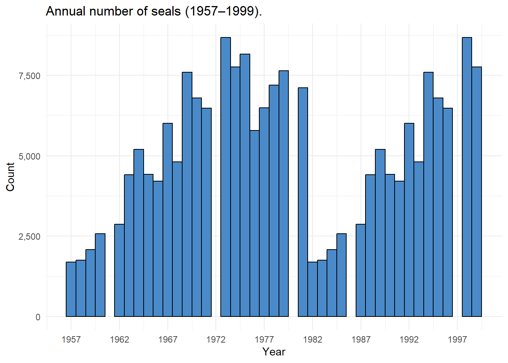
Figure 2 plots the changing number of observed seals over a period of 43 years.
What to do when you have missing observations in a time series?
In discrete time series to deal with missing observations you can express the model in state-space form (ARIMA or Structural Time Series). For a missing observation \(y_t\), skip the update step in the Kalman filter and only run the prediction step. The likelihood is evaluated only over the observed time points.
Kalman filtering
Kalman filtering (linear quadratic estimation) is an algorithm that uses a series of measurements over time to estimate unknown variables, by estimating a joint probability distribution over the variables for each time-step.
In continuous time series, missing observations look like irregularly spaced sampling intervals. You can model the underlying system using Stochastic Differential Equations (CARMA) or you can aggregate the irregular time steps into regular, discrete intervals.
Temporal granularity and the aggregation effect
Aggregating up can either smooth out high-frequency structure (stock returns, etc) or can reveal low-frequency structure (Sales, etc).
One realisation of a stochastic process
Noise in the data introduces different realisations. If your model fits one dataset perfectly then it is overfitting.
The Forecasting Problem
What is forecasting?
Forecasting is a prediction about what will happen in the future based on evidence that we have (with some level of uncertainty). This uncertainty gives rise to forecast intervals (not just point estimates). Goal setting is what we want to happen in the future. Planning helps us reach our goal.
Note
A series can only be called predictable if the interval and horizon are stated as this helps determine the model.
Forecast \(\rightarrow\) Goal \(\rightarrow\) Plan \(\rightarrow\) Implementation \(\rightarrow\) Outcome \(\rightarrow\) Forecast …
A forecast horizon is how far into the future you try and predict values. When looking at time series data we are looking for stable, informative patterns (not just a lot of data).
A random walk is a process where memory is permanent. Every future shock accumulates endlessly resulting in forecast variance growing linearly. A stationary AR is a process where memory decays geometrically. Shocks die out, forcing the forecast back to the process mean.
Stationary AR(1) process, \(h\) step forecast error variance:
\[ \text{Var}(e_{T+h}) = \sigma^2 \frac{1-\phi^{2h}}{1-\phi^2} \rightarrow \frac{\sigma^2}{1-\phi^2} \quad \text{as } h \rightarrow \infty \]
Note
Forecasts are random variables.
Exploring a Series
The classical decomposition
\[ \begin{aligned} \text{Additive:} \quad y_t &= T_t + S_t + C_t + I_t \\ \text{Multiplicative:} \quad y_t &= T_t \cdot S_t \cdot C_t \cdot I_t \end{aligned} \] The nature of the seasonality in a series (additive, multiplicative or drifting) determines whether log transformation or differencing are required.
Two ways of looking at a series
- Time domain - this looks at previous observations
You would use time domain when estimating predictive conditional expectations (forecasting at time \(t+1\) given \(t, t-1\)), when dealing with short sample sizes.
A lag is the separation between two observations measured in time units.
Note
Plotting a series against its own first lag is the simplest possible diagnostic for dependence.
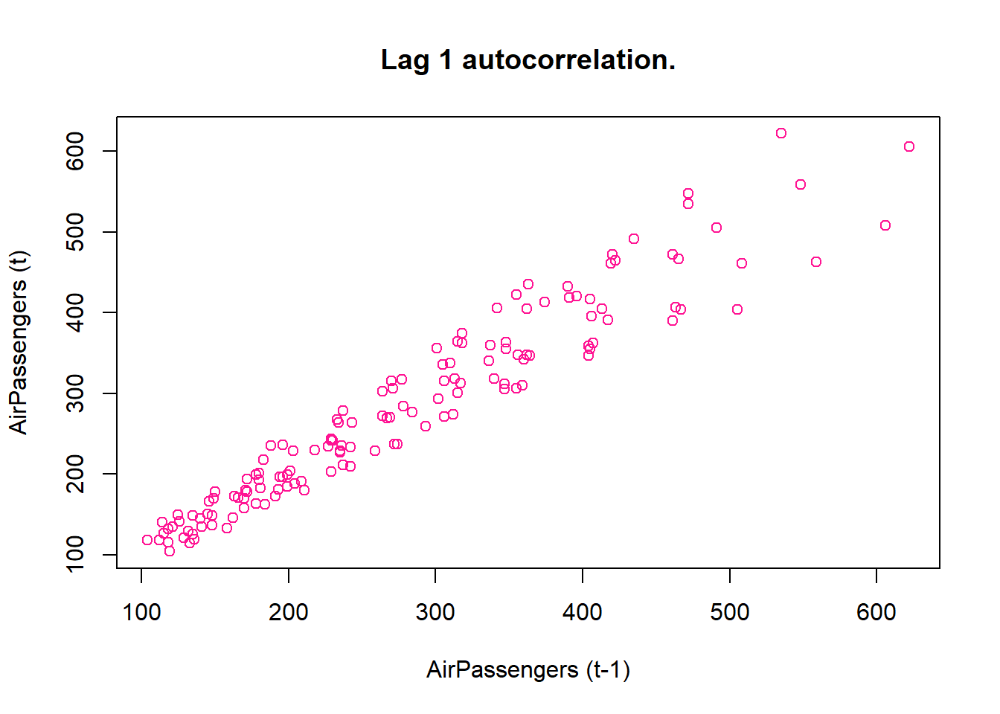
- Frequency domain - this looks at cycles in the series
You would use frequency domain when identifying hidden cycles/patterns or when analysing long-memory dynamics. This is covered in Spectral Analysis.
The components of a series
Trend is the long run direction of movement. Seasonality is the pattern that repeats at a fixed and known interval. Cycles are long oscillations with no fixed length. Irregular variation (noise) is random variation unexplained by the trend, seasonality and cycles.
Time Series Analysis in R
AirPassengers dataset
Click to toggle source code
# Run once — install anything missing
pkgs = c("tidyverse", "tsibble", "feasts", "fable", "timetk",
"modeltime", "kableExtra", "here")
install.packages(pkgs[!pkgs %in% installed.packages()[, "Package"]])Handling dates and aggregation
AirPassengers is already a time series object but to convert a dataset to a time series object you use: ts(c(), start = c(year, month), frequency = #obs/unit time)
Click to toggle source code
# Read in data:
data(AirPassengers)
# View(AirPassengers)
print(AirPassengers) Jan Feb Mar Apr May Jun Jul Aug Sep Oct Nov Dec
1949 112 118 132 129 121 135 148 148 136 119 104 118
1950 115 126 141 135 125 149 170 170 158 133 114 140
1951 145 150 178 163 172 178 199 199 184 162 146 166
1952 171 180 193 181 183 218 230 242 209 191 172 194
1953 196 196 236 235 229 243 264 272 237 211 180 201
1954 204 188 235 227 234 264 302 293 259 229 203 229
1955 242 233 267 269 270 315 364 347 312 274 237 278
1956 284 277 317 313 318 374 413 405 355 306 271 306
1957 315 301 356 348 355 422 465 467 404 347 305 336
1958 340 318 362 348 363 435 491 505 404 359 310 337
1959 360 342 406 396 420 472 548 559 463 407 362 405
1960 417 391 419 461 472 535 622 606 508 461 390 432Click to toggle source code
# Sum by year:
annual_sum = aggregate(AirPassengers, FUN = sum)
# Mean by year:
annual_mean = aggregate(AirPassengers, FUN = mean)
print(annual_sum)Time Series:
Start = 1949
End = 1960
Frequency = 1
[1] 1520 1676 2042 2364 2700 2867 3408 3939 4421 4572 5140 5714Click to toggle source code
print(annual_mean)Time Series:
Start = 1949
End = 1960
Frequency = 1
[1] 126.6667 139.6667 170.1667 197.0000 225.0000 238.9167 284.0000 328.2500
[9] 368.4167 381.0000 428.3333 476.1667Helper conversions
Click to toggle source code
t = time(AirPassengers)
# Extract Year and Month:
years = floor(t)
months = round(12 * (t - years)) + 1
head(data.frame(Decimal = as.numeric(t), Year = years, Month = months)) Decimal Year Month
1 1949.000 1949 1
2 1949.083 1949 2
3 1949.167 1949 3
4 1949.250 1949 4
5 1949.333 1949 5
6 1949.417 1949 6Subsetting with window()
Click to toggle source code
# Extract July 1950 to October 1955
sub_ts = window(AirPassengers, start = c(1950, 7), end = c(1955, 10))
print(sub_ts) Jan Feb Mar Apr May Jun Jul Aug Sep Oct Nov Dec
1950 170 170 158 133 114 140
1951 145 150 178 163 172 178 199 199 184 162 146 166
1952 171 180 193 181 183 218 230 242 209 191 172 194
1953 196 196 236 235 229 243 264 272 237 211 180 201
1954 204 188 235 227 234 264 302 293 259 229 203 229
1955 242 233 267 269 270 315 364 347 312 274 Lags and differences
Click to toggle source code
# Shift the time index forward by 1 period (does not move the values):
lagged_ts = stats::lag(AirPassengers, k = -1)
# First-order differencing (removes linear trend):
diff_ts = diff(AirPassengers, differences = 1)
# Seasonal differencing (removes a 12-month seasonal pattern):
seasonal_diff_ts = diff(AirPassengers, lag = 12)
diff_ts Jan Feb Mar Apr May Jun Jul Aug Sep Oct Nov Dec
1949 6 14 -3 -8 14 13 0 -12 -17 -15 14
1950 -3 11 15 -6 -10 24 21 0 -12 -25 -19 26
1951 5 5 28 -15 9 6 21 0 -15 -22 -16 20
1952 5 9 13 -12 2 35 12 12 -33 -18 -19 22
1953 2 0 40 -1 -6 14 21 8 -35 -26 -31 21
1954 3 -16 47 -8 7 30 38 -9 -34 -30 -26 26
1955 13 -9 34 2 1 45 49 -17 -35 -38 -37 41
1956 6 -7 40 -4 5 56 39 -8 -50 -49 -35 35
1957 9 -14 55 -8 7 67 43 2 -63 -57 -42 31
1958 4 -22 44 -14 15 72 56 14 -101 -45 -49 27
1959 23 -18 64 -10 24 52 76 11 -96 -56 -45 43
1960 12 -26 28 42 11 63 87 -16 -98 -47 -71 42Figure 3 illustrates the autocorrelation between AirPassengers and its lag 1.
Combing series
Click to toggle source code
ts_a = window(AirPassengers, start = c(1950, 1), end = c(1955, 12))
ts_b = window(AirPassengers, start = c(1955, 1), end = c(1956, 12))
# Union: keeps full range, fills gaps with NA:
combined_union = ts.union(ts_a, ts_b)
# Intersect: keeps only the overlapping months
combined_intersect = ts.intersect(ts_a, ts_b)
combined_intersect ts_a ts_b
Jan 1955 242 242
Feb 1955 233 233
Mar 1955 267 267
Apr 1955 269 269
May 1955 270 270
Jun 1955 315 315
Jul 1955 364 364
Aug 1955 347 347
Sep 1955 312 312
Oct 1955 274 274
Nov 1955 237 237
Dec 1955 278 278Missing data
Click to toggle source code
has_na = anyNA(AirPassengers)
cat("Contains missing values:", has_na, "\n")Contains missing values: FALSE Click to toggle source code
# Simple linear interpolation for isolated gaps (base R, no extra packages):
ts_with_gap = AirPassengers
ts_with_gap[5] = NA
ts_filled = ts(approx(time(ts_with_gap),
ts_with_gap,
xout = time(ts_with_gap))$y,
start = start(ts_with_gap),
frequency = frequency(ts_with_gap))
ts_filled Jan Feb Mar Apr May Jun Jul Aug Sep Oct Nov Dec
1949 112 118 132 129 132 135 148 148 136 119 104 118
1950 115 126 141 135 125 149 170 170 158 133 114 140
1951 145 150 178 163 172 178 199 199 184 162 146 166
1952 171 180 193 181 183 218 230 242 209 191 172 194
1953 196 196 236 235 229 243 264 272 237 211 180 201
1954 204 188 235 227 234 264 302 293 259 229 203 229
1955 242 233 267 269 270 315 364 347 312 274 237 278
1956 284 277 317 313 318 374 413 405 355 306 271 306
1957 315 301 356 348 355 422 465 467 404 347 305 336
1958 340 318 362 348 363 435 491 505 404 359 310 337
1959 360 342 406 396 420 472 548 559 463 407 362 405
1960 417 391 419 461 472 535 622 606 508 461 390 432Time series plots
Figure 1 plots the AirPassengers time series.
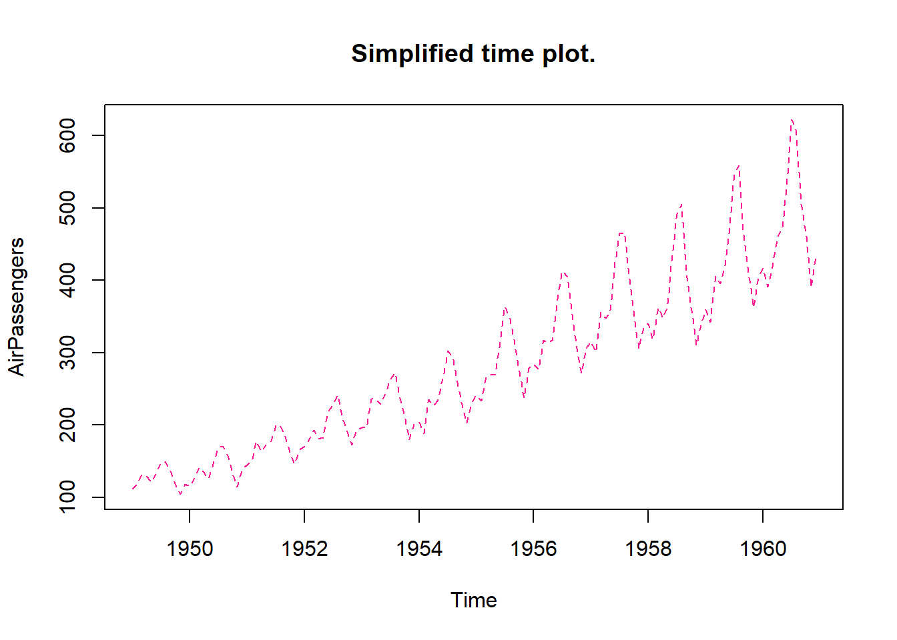
Check attributes of time series
Click to toggle source code
# Check the attributes:
cat("Start:", start(AirPassengers), "\n")Start: 1949 1 Click to toggle source code
cat("Frequency:", frequency(AirPassengers), "\n")Frequency: 12 Click to toggle source code
library(ggfortify)
# A first look at structure: naive decomposition (covered in depth in Part B)
decomp = decompose(AirPassengers)
autoplot(decomp,
ts.colour='deeppink')+
theme_minimal(base_size = 14)
Benchmarks and Forecast Accuracy
The benchmarks applied
Mean - the average of all previous observations is carried into the future.
\[ \hat{y}_{T+h \mid T} = \bar{y} \]
Naive - the last observed value becomes the value that we take into the future.
\[ \hat{y}_{T+h \mid T} = y_T \]
Seasonal naive - the last observed seasonal pattern is carried into the future.
\[ \hat{y}_{T+h \mid T} = y_{T+h-m(k+1)} \]
Drift - The trend of the previous observations is carried into the future.
\[ \hat{y}_{T+h \mid T} = y_T + \frac{h(y_T-y_1)}{T-1} \]
Note
Residuals are for diagnostics (validation). Forecast errors are for evaluation (test).
Cross-validation
In time series successive observations are correlated and their ordering carries information about the data generating process. When performing model validation you cannot have future observations predicting the past.
Temporal leakage (look-ahead-bias) is when future observations enter model estimation, this artificially inflates accuracy.
The forecast origin is the last observation available when the forecast is made.
Note
The test set should be at least as long as the largest horizon of interest.
Strategies
- Walk-forward validation
The forecast origin advances one step at a time.
- Expanding window validation
Every historical observation is kept. The training set grows with all past data. When older data is more informative this method reduces estimation variance.
- Sliding window validation
The training window has a fixed length. The number of training observations stays the same but the forecast origin is moved forward through time. When older data is less informative this method reduces bias.
What is the difference between interpolation and forecasting?
Interpolation estimates a value inside the observed period, so observations on both sides of the gap can be used. Forecasting estimates a value after the forecast origin, so only past observations can be used and the uncertainty grows with the horizon.
Note
Don’t ignore structural breaks when choosing a validation strategy.
Manual cross-validation
Cross-validation is performed using an expanding window approach with a 12-month horizon.
Click to toggle source code
# Load data:
data(AirPassengers)
dat = AirPassengers
# Load libraries:
library(forecast)
n = length(dat) # no. observations
train_n = 60 # no. training data points
h = 12 # forecast horizon
# Initialise error matrix:
names = c('Mean','Naive','Seasonal naive', 'Drift')
splits = n-train_n-h+1
res = matrix(NA,
nrow=(n-h)-train_n+1,
ncol=4,
dimnames=list(NULL,names))
for (i in train_n:(n-h)) {
idx = i-train_n+1
# Subset training data:
train = window(dat,
end=c(1949+(i-1)%/%12,(i-1)%%12+1))
# Extract test data:
test = window(dat,
start=c(1949+i%/%12,i%%12+1),
end=c(1949+(i+h-1)%/%12,(i+h-1)%%12+1))
# Fit model:
fits = list(
Mean = meanf(train,h=h),
Naive = naive(train,h=h),
SNaive = snaive(train,h=h),
Drift = rwf(train,h=h,drift=TRUE)
)
# Extract rmse for each model:
rmse = sapply(fits,\(f) sqrt(mean((as.numeric(test)-as.numeric(f$mean))^2)))
# Store results:
res[idx,] = rmse
}
colMeans(res) Mean Naive Seasonal naive Drift
152.87587 74.08791 39.92124 71.96374 With a 12-month forecast horizon, the Seasonal naive benchmark has the lowest average RMSE. This is because it is the only benchmark model that includes the seasonal pattern in its forecasts. The mean benchmark performs the worst, since the series as an upward trend.
Cross-validation using tsCV()
Click to toggle source code
tsCV_m = tsCV(AirPassengers,meanf,h=1,window=60)
m_err = sqrt(mean(tsCV_m^2, na.rm = TRUE))
tsCV_n = tsCV(AirPassengers,naive,h=1,window=60)
n_err = sqrt(mean(tsCV_n^2, na.rm = TRUE))
tsCV_sn = tsCV(AirPassengers,snaive,h=1,window=60)
sn_err = sqrt(mean(tsCV_sn^2, na.rm = TRUE))
tsCV_d = tsCV(AirPassengers,rwf,drift=TRUE,h=1,window=60)
d_err = sqrt(mean(tsCV_d^2, na.rm = TRUE))
err_df = cbind(m_err,n_err,sn_err,d_err)
colnames(err_df) = c('Mean','Naive','Seasonal naive','Drift')
err_df Mean Naive Seasonal naive Drift
[1,] 102.0794 41.52524 40.61316 41.97634Click to toggle source code
fc_funs = list(Mean = function(x, h) meanf(x, h = h),
Naive = function(x, h) naive(x, h = h),
`Seasonal naive` = function(x, h) snaive(x, h = h),
Drift = function(x, h) rwf(x, h = h, drift = TRUE))
cv_rmse = sapply(fc_funs, function(f) {
e_expand = tsCV(AirPassengers, f, h = 1) # expanding window
e_slide = tsCV(AirPassengers, f, h = 1, window = 60) # sliding window
ok = !is.na(e_slide) & !is.na(e_expand) # same forecast origins
c(Expanding = sqrt(mean(e_expand[ok]^2)),
Sliding = sqrt(mean(e_slide[ok]^2)))
})
round(cv_rmse, 2) Mean Naive Seasonal naive Drift
Expanding 153.25 41.53 40.61 41.63
Sliding 102.08 41.53 40.61 41.98The Naive and Seasonal naive models give the same errors under both the expanding and sliding windows. The Naive model uses only the most recent observation and the Seasonal naive model uses the last observed seasonal cycle, so the length of the training window makes no difference. The Mean benchmark improves when using a sliding window (RMSE = 102.08 vs 153.25). This can be explained by the upward trend in the data. The expanding window uses the entire series history, whereas the sliding window uses only the 60 most recent observations. Thus the mean is closer to the current level resulting in smaller errors. The Drift model is slightly worse under the sliding window (RMSE = 41.98 vs 41.63), since the slope estimated from 60 observations is more variable.
These errors are smaller than in the manual cross-validation since forecasting one month ahead is easier than forecasting 12 months ahead. At one step ahead the Naive, Seasonal naive and Drift models perform similarly but at 12 steps ahead only the Seasonal naive model stays accurate, since it is the only benchmark that captures the seasonality.
Exercises
- Why is ordinary random k-fold cross-validation inappropriate for forecasting?
If you exclude an observation at time t-1 but use observation t, you are technically predicting the past based on future observations. Future observations must never be used when estimating a forecasting model as this violates a fundamental principal of forecasting - a forecast can only use information that was available at the forecast origin.
- Define temporal leakage.
Future observations enter model estimation. Reported accuracy looks excellent but is unattainable in practice - the future is unknown when real forecasts are made.
- Contrast Walk Forward, Expanding Window and Sliding Window validation.
In expanding window validation every historical observation is kept. The training set grows with all past data. In sliding window validation the training window has a fixed length. The number of training observations stays the same but the forecast origin is moved forward through time. Walk-forward validation is when the forecast origin advances one step at a time.
- When would Sliding Window outperform Expanding Window?
When data is non-stationary and older data is less informative.
- A firm refits its model daily using only the most recent 250 observations. Which strategy is this?
Sliding window
- Why must temporal ordering be preserved during validation?
Otherwise the model knows things it could not have known at forecasting time. This leads to inflated accuracy that is unattainable in practise.
Operators, Stationarity and White Noise
Lag and lead operators
Lag operator \(L y_t = y_{t-1}\): at time \(t\) it uses the observation recorded at time \(t-1\).
Note
The subscript records where a value came from, not where it is displayed.
Lead operator \(F y_t = y_{t+1}\): at time \(t\) it uses the observation recorded at time \(t+1\), \(F = L^{-1}\).
Lag and lead in R
Click to toggle source code
y = c(3, 7, 4, 8, 5)
c(NA, y[1:(length(y)-1)]) # lag by hand[1] NA 3 7 4 8Click to toggle source code
dplyr::lag(y, n = 1) # same shift[1] NA 3 7 4 8Click to toggle source code
dplyr::lead(y, n = 1) # lead[1] 7 4 8 5 NAClick to toggle source code
lag_twice = dplyr::lag(dplyr::lag(y,n=1),n=1)
lag_twice[1] NA NA 3 7 4Click to toggle source code
dplyr::lag(y,n=2)[1] NA NA 3 7 4
Built in
lag() functions
Don’t get confused between stats::lag() and dplyr::lag(). They do different things!
Differencing
First difference: \[ \Delta{y_{t}} = y_t -y_{t-1} = (1-L)y_t, \]
Seasonal difference (at lag 12): \[ \Delta_{12}y_{t} = y_t -y_{t-12} = (1-L^{12})y_t, \]
Click to toggle source code
# First differences, by hand and with diff():
y2 = c(10, 6, 9, 12, 7)
y2 - dplyr::lag(y2, 1)[1] NA -4 3 3 -5Click to toggle source code
diff(y2) # Note: no NA added [1] -4 3 3 -5Weak and strict stationarity
A series is weakly stationary under the following conditions:
- Its mean is constant, \(E(y_t) = \mu\) for all \(t\).
- Its variance is finite and constant, \(\text{Var}(y_t) = \sigma^2\) for all \(t\).
- Its autocovariance only depends on the lag, \(\text{Cov}(y_t, y_{t-k}) = \gamma_k\) for all \(t\).
A series is strictly stationary if the joint distribution of \((y_{t_1}, \dots, y_{t_k})\) is the same as that of \((y_{t_1+s}, \dots, y_{t_k+s})\) for every shift \(s\).
AirPassengers violates the first two conditions. The trend and the seasonal pattern mean that \(E(y_t)\) changes over time and the seasonalilty increases with the level, so \(\text{Var}(y_t)\) is not constant (Figure 1).
When we have a multiplicative model, with expanding variance, we can log-transform it to obtain an additive model. This stabilises the variance but, as seen in Figure 5, the series still has a trend.
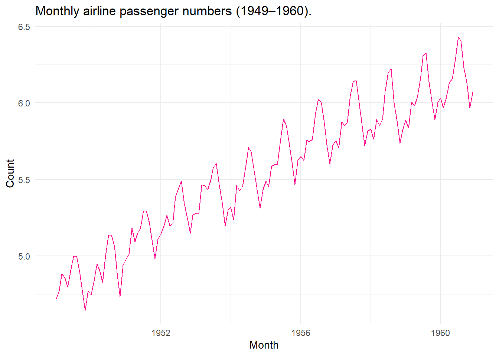
Taking differences between observations removes the linear trend and taking seasonal differences removes the seasonal pattern.
Assumption
No trends present in data.
We can remove both the linear and seasonal trend in the data:
Click to toggle source code
# Check what seasonal and what regular differences are required:
nsdiffs(log_AP)[1] 1Click to toggle source code
ndiffs(log_AP)[1] 1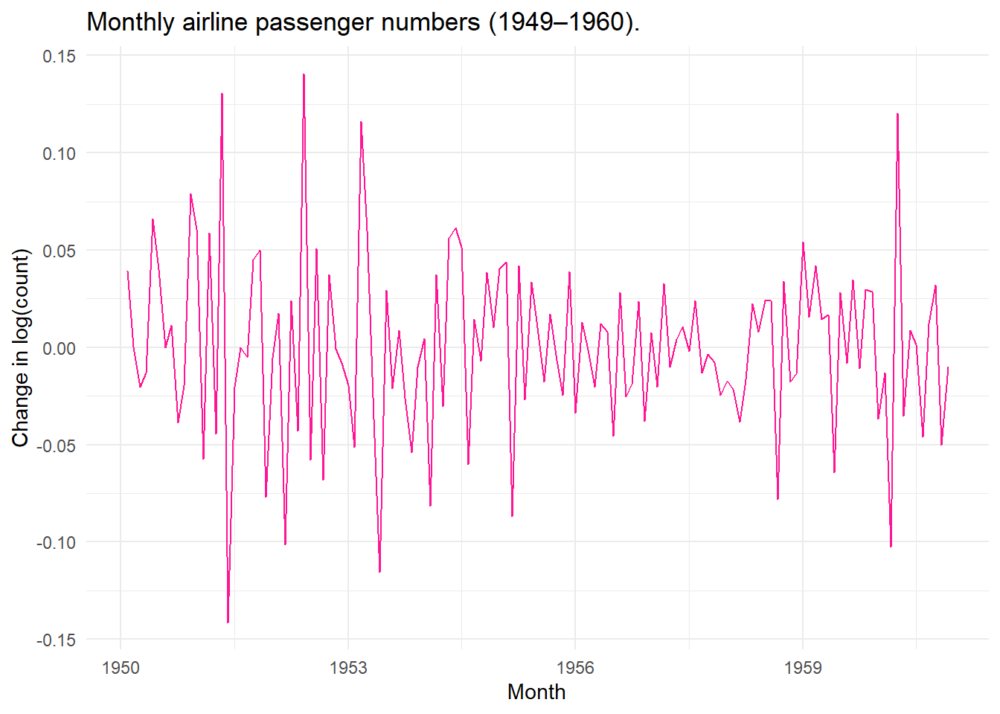
After the log transformation, one seasonal difference and one first difference, the series in Figure 6 fluctuates around zero with a roughly constant variance (it isn’t really but we want it to be).
White noise
Weak white noise only requires uncorrelated observations. Strict white noise requires iid observations.
White noise cannot be predicted from its own past, whatever its variance.
Note
Indicator variables can be included to remove trends when the series has structural breaks in it.
Linear Models for the Conditional Mean
Although white noise is uncorrelated, a weighted combination of neighbouring white noise is not.
Filtering is the process of building a new series as a weighted combination of the terms of another.
The MA(\(q\) ) model
\[ y_t = \mu + \varepsilon_t + \theta_1 \varepsilon_{t-1} + \cdots + \theta_q \varepsilon_{t-q}, \quad \varepsilon_t \sim WN(0,\sigma^2). \]
The moving average model is driven by lagged shocks not lagged observations. A MA(\(q\)) process is stationary for any values of the coefficients, since it is a finite weighted sum of white noise terms with fixed weights. The coefficients must satisfy invertibility.
The AR(\(p\) ) model
\[ y_t = c + \phi_1 y_{t-1} + \cdots + \phi_p y_{t-p} + \varepsilon_t, \quad \varepsilon_t \sim WN(0,\sigma^2). \]
For the autoregressive model there is a set of correlation in the structure. The current value of a variable depends linearly on its own past. An AR(\(p\)) process models memory.

Figure 7 compares the ACFs of the three processe. White noise has no significant autocorrelations, the AR(1) ACF decays geometrically and the MA(1) ACF has no significant spikes after lag 1.

If you are observing spikes outside of the first few this indicates seasonality in the series. Figure 8 suggests that there is still seasonality present in the transformed and differenced AirPassengers dataset, however this could also just be because differencing reduced the number of observations resulting in a more noisy dataset.
The ARMA(\(p,q\) ) model
The ARMA model allows for process that show persistence and short lived shocks simultaneously. The series must be stationary.
\[ y_t = c + \sum^p_{i=1} \phi_i y_{t-i} + \varepsilon_t + \sum^q_{j=1} \theta_j \varepsilon_{t-j}, \quad \varepsilon_t \sim WN(0,\sigma^2). \]
this is equivalent to: \(\phi (L)y_t = c + \theta (L) \varepsilon_t.\)
Note
ARMA models are fitted by maximum likelihood due to the moving average part (not OLS).
The ARIMA(\(p,d,q\) ) model
The ARIMA model applies \(d\) differences to \(y_t\) and then fits an ARMA(\(p,q\)) to the result.
\[ \phi(L)(1-L)^dy_t = c+ \theta(L)\varepsilon_t \]
| Specification | Equivalent to |
|---|---|
| ARIMA(1,0,0) | AR(1) |
| ARIMA(0,0,1) | MA(1) |
| ARIMA(1,0,1) | ARMA(1,1) |
| ARIMA(0,1,0) | Random walk |
| ARIMA(0,1,0) with c ≠ 0 | Random walk with drift |
| ARIMA(1,1,1) | One difference, then ARMA(1,1) |
Although Table 1 illustrates the special cases of ARIMA, sometimes there is a constant included that must be taken into account.

AirPassengers series with forecasts and prediction intervals for 24 months.
Ljung-Box test
data: Residuals from ARIMA(1,1,1)
Q* = 231.49, df = 22, p-value < 2.2e-16
Model df: 2. Total lags used: 24NULL
The forecasts in Figure 9 do not repeat the seasonal pattern. After a few months they flatten out and the intervals become very wide. In Figure 10 we can see that the residuals do not look like white noise. This is due to the ARIMA(1,1,1) model not accounting for the seasonality present in the data.
The SARIMA(\(p,d,q\) )(\(P,D,Q\) )\(_m\) model
\[ \Phi(L^m)\phi(L)(1-L^m)^D(1-L)^dy_t = \Theta(L^m)\theta(L)\varepsilon_t. \]
When we check an ACF plot of the AirPassengers series, we can see clear seasonality.

Figure 11 and Figure 10 suggest that we need to model the AirPassengers series with a seasonality component as well.
Click to toggle source code
# Which SARIMA model is the best fit:
best_fit = auto.arima(AirPassengers,
lambda=0,
stepwise=FALSE,
approximation=FALSE)
summary(best_fit)Series: AirPassengers
ARIMA(0,1,1)(0,1,1)[12]
Box Cox transformation: lambda= 0
Coefficients:
ma1 sma1
-0.4018 -0.5569
s.e. 0.0896 0.0731
sigma^2 = 0.001371: log likelihood = 244.7
AIC=-483.4 AICc=-483.21 BIC=-474.77
Training set error measures:
ME RMSE MAE MPE MAPE MASE
Training set 0.05140418 10.15504 7.357553 -0.004079016 2.623636 0.229706
ACF1
Training set -0.03689673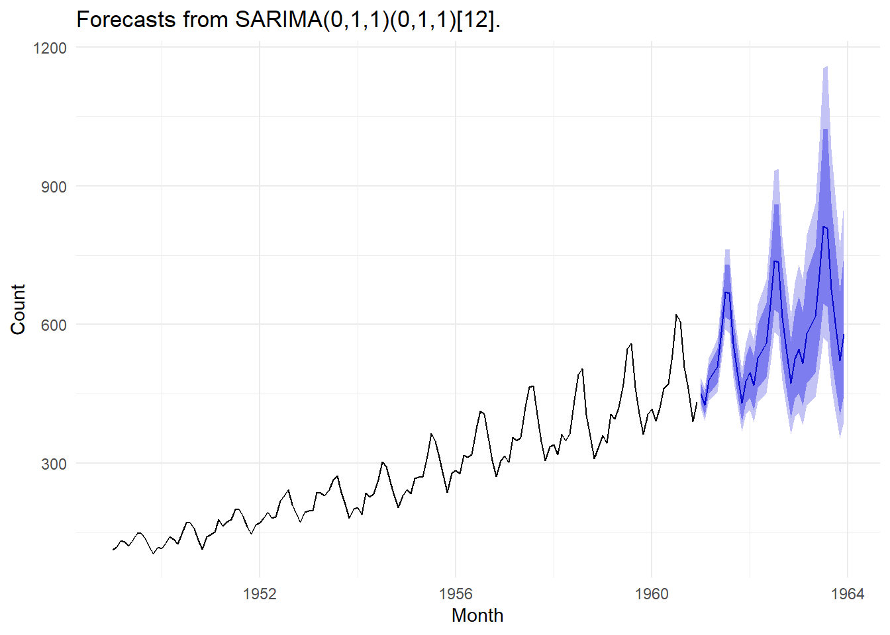
Figure 12 carries the seasonal shape forward while the intervals widen. The model is fitted on the log scale, so the back-transformed intervals are asymmetric and the seasonal swings grow with the level. This is the behaviour a seasonal model is fitted for.
Time Series Analysis Exercises
Question 4
Click to toggle source code
# Read in data:
knives = ts(c(19,15,39,102,90,29,90,46,30,66,80,89,82,17,26,29),
start = c(1991,1),
frequency = 12)a
A \(k\)-month moving average forecasts the next month using the average of the last \(k\) months:
\[ \hat{y}_{T+1 \mid T} = \frac{1}{k}\sum_{j=0}^{k-1} y_{T-j}. \]
Click to toggle source code
k_val = c(3,5,7,9,11)
# Forecast:
ma_fc = numeric(length(k_val))
# For loop to calculate forecasts:
for (i in seq_along(k_val)){
ma_fc[i] = mean(tail(knives, k_val[i]))
}
knitr::kable(
data.frame(k = k_val,
`Forecast for May 1992` = ma_fc,
check.names = FALSE),
digits = 2)| k | Forecast for May 1992 |
|---|---|
| 3 | 24.00 |
| 5 | 48.60 |
| 7 | 55.57 |
| 9 | 51.67 |
| 11 | 53.09 |
The forecasts range from 24 (3-month MA) to about 56 (7-month MA). The 3-month MA only uses February to April 1992, which were all very low months, so it gives a much lower forecast than the longer averages.
b) Which \(k\) minimises the errors?
To choose \(k\), each moving average is used to make one-step-ahead forecasts within the data (as if we were standing at each month and forecasting the next). The errors are compared over the same months (December 1991 to April 1992), since the 11-month MA can only start forecasting in December 1991. Comparing over the same period is fairer than letting each \(k\) use all the months it can.
Click to toggle source code
# Load data:
y = as.numeric(knives)
n = length(y) # no. observations
# Initialise error matrix:
names = paste0('MA(',k_val,')')
err = matrix(NA,
nrow=n,
ncol=length(k_val),
dimnames=list(NULL,names))
for (j in seq_along(k_val)) {
k = k_val[j]
for (t in (k+1):n) {
# One-step-ahead MA forecast:
fc = mean(y[(t-k):(t-1)])
# Store forecast error:
err[t,j] = y[t]-fc
}
}
# Common forecast origins (December 1991 to April 1992):
common = 12:16
# Calculate error metrics:
ma_acc = data.frame(
k = k_val,
MSE = colMeans(err[common,]^2)
)
kable(ma_acc,digits=1,row.names=FALSE)| k | MSE |
|---|---|
| 3 | 1376.6 |
| 5 | 1279.6 |
| 7 | 1130.8 |
| 9 | 1048.8 |
| 11 | 1313.8 |
The MSE of each moving average is calculated over the same 5 forecast origins (December 1991 to April 1992), so that each value of \(k\) is compared on the same months. MA(9) has the lowest MSE (1048.8), followed by MA(7) (1130.8). Thus, assuming the past pattern continues, management should select \(k = 9\) to minimise the forecast errors. However, the MSE is only calculated over 5 forecasts, so the difference between \(k = 7\) and \(k = 9\) is not very reliable.
Question 5
Click to toggle source code
# Read in data:
souvenir = ts(c(
1664.81, 2397.53, 2840.71, 3547.29, 3752.96, 3714.74, 4349.61, 3566.34, 5021.82, 6423.48, 7600.6, 19756.21,
2499.81, 5198.24, 7225.14, 4806.03, 5900.88, 4951.34, 6179.12, 4752.15, 5496.43, 5835.1, 12600.08, 28541.72,
4717.02, 5702.63, 9957.58, 5304.78, 6492.43, 6630.8, 7349.62, 8176.62, 8573.17, 9690.5, 15151.84, 34061.01,
5921.1, 5814.58, 12421.25, 6369.77, 7609.12, 7224.75, 8121.22, 7979.25, 8093.06, 8476.7, 17914.66, 30114.41,
4826.64, 6470.23, 9638.77, 8821.17, 8722.37, 10209.48, 11276.55, 12552.22, 11637.39, 13606.89, 21822.11, 45060.69,
7615.03, 9849.69, 14558.4, 11587.33, 9332.56, 13082.09, 16732.78, 19888.61, 23933.38, 25391.35, 36024.8, 80721.71,
10243.24, 11266.88, 21826.84, 17357.33, 15997.79, 18601.53, 26155.15, 28586.52, 30505.41, 30821.33, 46634.38, 104660.67),
start = c(1987, 1),
frequency = 12)a)

Figure 13 shows a clear upward trend in sales from 1987 to 1993. This can be explained by the shop expanding its premises, products and staff. There is strong seasonality, with a large peak every December due to the Christmas influx of tourists. A smaller peak occurs every March from 1988 onwards, due to the surfing festival. The size of the seasonal fluctuations increases as the level of sales increases. This suggests a multiplicative pattern. Sale levels dropped slightly in December 1990 and in 1991 before rapidly increasing in 1992 and 1993. The log(sales) are plotted for question (b).
b)
The variance of the series increases with the as sales increase over time. Thus, the variance is not constant and grows with the level of sales. Taking logarithms stabilises the variance and converts the multiplicative pattern into an additive one (Figure 13). The log series can be modelled with a linear model, which assumes constant variance.
c)
Click to toggle source code
# Total sales per year and logs:
annual_tot = aggregate(souvenir, FUN = sum)
annual_df = data.frame(
year = as.numeric(time(annual_tot)),
total = as.numeric(annual_tot),
log_total = log(as.numeric(annual_tot))
)
kable(annual_df, digits = 4, col.names = c("Year", "Total sales", "log(Total sales)"))| Year | Total sales | log(Total sales) |
|---|---|---|
| 1987 | 64636.10 | 11.0765 |
| 1988 | 93986.04 | 11.4509 |
| 1989 | 121808.00 | 11.7102 |
| 1990 | 126059.87 | 11.7445 |
| 1991 | 164644.51 | 12.0115 |
| 1992 | 268717.73 | 12.5014 |
| 1993 | 362657.07 | 12.8012 |
Click to toggle source code
# Fit linear regression:
fit_log = lm(log_total ~ year, data = annual_df)
summary(fit_log)
Call:
lm(formula = log_total ~ year, data = annual_df)
Residuals:
1 2 3 4 5 6 7
-0.01119 0.09260 0.08131 -0.15496 -0.15852 0.06077 0.08998
Coefficients:
Estimate Std. Error t value Pr(>|t|)
(Intercept) -526.56801 46.43933 -11.34 9.33e-05 ***
year 0.27059 0.02334 11.60 8.37e-05 ***
---
Signif. codes: 0 '***' 0.001 '**' 0.01 '*' 0.05 '.' 0.1 ' ' 1
Residual standard error: 0.1235 on 5 degrees of freedom
Multiple R-squared: 0.9641, Adjusted R-squared: 0.957
F-statistic: 134.4 on 1 and 5 DF, p-value: 8.374e-05
The fitted model is \(\widehat{\log(\text{Sales})} = -526.57 + 0.2706 \times \text{Year}\). Year is statistically significant (\(p < 0.001\)) and the model explains 96.4% of the variation in log total sales (\(R^2 = 0.964\)). The gradient of the fitted line means that the total annual sales grow by approximately \(e^{0.2706} - 1 = 31\%\) per year. Figure 14 shows that 1990 and 1991 lie below the fitted line. This is consistent with the levelling off in sales seen in Figure 13.
d)
Click to toggle source code
new_years = data.frame(year = 1994:1996)
pred_log = predict(fit_log,
newdata = new_years,
interval = "prediction",
level = 0.95)
kable(
data.frame(Year = 1994:1996, pred_log),
digits = 4,
col.names = c("Year", "Predicted log(total)", "Lower 95%", "Upper 95%"))| Year | Predicted log(total) | Lower 95% | Upper 95% |
|---|---|---|---|
| 1994 | 12.9818 | 12.5662 | 13.3974 |
| 1995 | 13.2524 | 12.7995 | 13.7053 |
| 1996 | 13.5230 | 13.0283 | 14.0177 |
Table 2 displays the predicted log total annual sales, which increase by 0.2706 each year. The 95% prediction intervals widen as the forecast horizon increase, since the uncertainty in the estimated trend grows as we move further from the observed data. The intervals assume the linear trend continues and that the residuals are normally distributed with constant variance. This assumption is difficult to check with only 7 observations.
e)
Click to toggle source code
pred_raw = exp(pred_log)
kable(data.frame(Year = as.character(1994:1996), pred_raw),
digits = 0,
col.names = c("Year", "Predicted total sales", "Lower 95%", "Upper 95%"))| Year | Predicted total sales | Lower 95% | Upper 95% |
|---|---|---|---|
| 1994 | 434443 | 286706 | 658309 |
| 1995 | 569439 | 362039 | 895651 |
| 1996 | 746383 | 455122 | 1224040 |
The predictions and intervals in Table 3 are obtained by taking the exponential of the log predictions and intervals in Table 2. Total sales are predicted to grow from \(434\,443\) in 1994 to \(746\,383\) in 1996. The intervals are not symmetric around the predictions, since the exponential transformation stretches the upper bound more than the lower bound. The back-transformed prediction of the total sales is the median as opposed to the mean. Thus, it slightly underestimates the expected sales.
Question 7
Click to toggle source code
# Read in data:
strikes = ts(c(4737, 5117, 5091, 3468, 4320, 3825, 3673, 3694, 3708, 3333,
3367, 3614, 3362, 3655, 3963, 4405, 4595, 5045, 5700, 5716,
5138, 5010, 5353, 6074, 5031, 5648, 5506, 4230, 4827, 3885),
start = 1951)a)
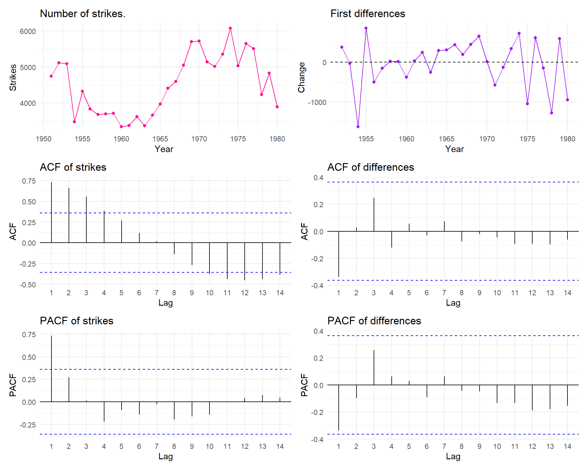
Figure 15 shows that the number of strikes wanders without a fixed mean. The series decreases until 1961 then increases until about 1974 and then decreases again. The ACF of the strikes decays slowly (0.73 at lag 1, 0.66 at lag 2, 0.56 at lag 3). This is indicative of a non-stationary series. Thus, first differencing is needed (\(d = 1\)). The first differences fluctuate around zero with no apparent trend. Thus, the differenced series appears stationary. The ACF of the differenced series has one negative spike at lag 1 (\(-0.34\), close to the significance bound) and cuts off after lag 1, while the PACF tapers off. This pattern is indicative of an MA(1). Thus, an ARIMA(0,1,1) model seems appropriate.
b)
\[ (1-L)y_t = (1+\theta_1 L)\varepsilon_t. \]
This expands to \(y_t = y_{t-1} + \varepsilon_t + \theta_1\varepsilon_{t-1}\).
c)
Click to toggle source code
fit_strikes = Arima(strikes, order = c(0, 1, 1))
summary(fit_strikes)Series: strikes
ARIMA(0,1,1)
Coefficients:
ma1
-0.3094
s.e. 0.1515
sigma^2 = 330817: log likelihood = -224.98
AIC=453.95 AICc=454.41 BIC=456.69
Training set error measures:
ME RMSE MAE MPE MAPE MASE ACF1
Training set -28.86394 555.6637 419.4877 -1.66885 9.60312 0.9207647 -0.06000998
Ljung-Box test
data: Residuals from ARIMA(0,1,1)
Q* = 2.4792, df = 5, p-value = 0.7796
Model df: 1. Total lags used: 6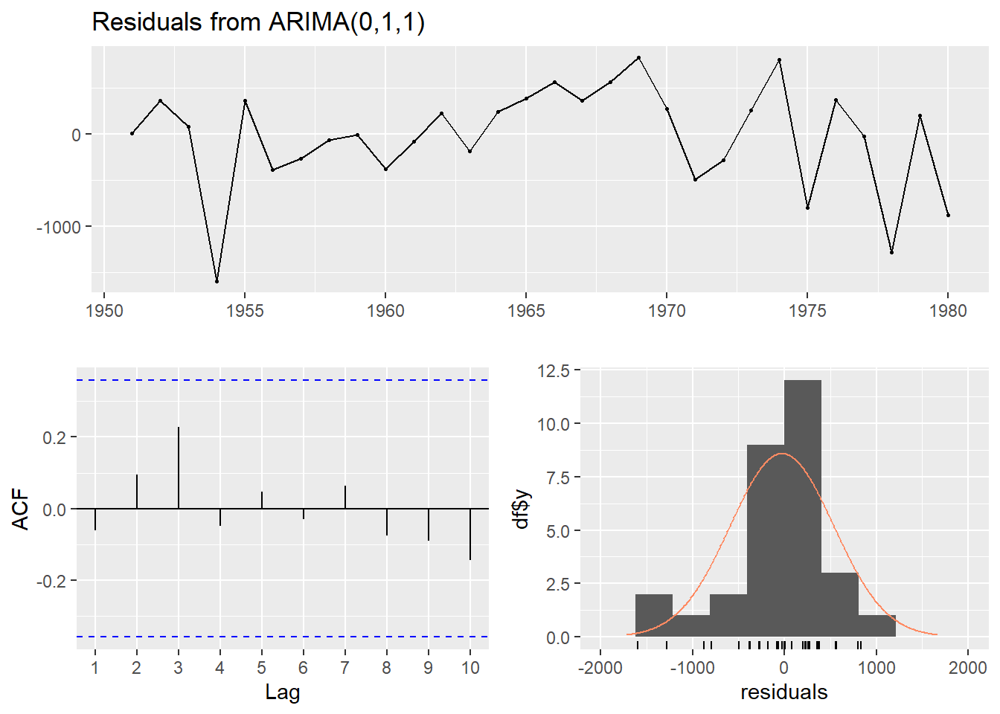
The fitted model is \((1-B)Y_t = (1 - 0.3094B)e_t\), with \(\hat\theta_1 = -0.3094\) (s.e. = 0.1515) and \(\hat\sigma^2 = 330{,}817\). In Figure 16 the residuals fluctuate around zero with no pattern and none of the autocorrelations are significant. The Ljung–Box test fails to reject the null hypothesis (\(p = 0.780\)). Thus, the residuals appear like white noise and the ARIMA(0,1,1) model is satisfactory.
d)
From the model, \(Y_{T+1} = Y_T + e_{T+1} + \theta_1 e_T\). Future errors have expected value zero, and \(e_T\) is estimated by the last residual, so
\[ \hat{Y}_{T+1 \mid T} = Y_T + \hat{\theta}_1 \hat{e}_T, \qquad \hat{Y}_{T+1 \mid T} = \hat{Y}_{T+2 \mid T} = \hat{Y}_{T+3 \mid T}, \]
since for \(h \geq 2\) both \(e_{T+h}\) and \(e_{T+h-1}\) are future errors. The forecasts are therefore flat. The forecast variance is \(\sigma^2[1 + (h-1)(1+\theta_1)^2]\), which grows linearly with \(h\).
Click to toggle source code
# Extract model values:
theta = coef(fit_strikes)['ma1']
y_T = tail(strikes,1) # strikes in 1980
e_T = tail(residuals(fit_strikes),1)
# Forecast by hand:
fc_hand = rep(as.numeric(y_T+theta*e_T),3)
# Forecast with R:
fc_strikes = forecast(fit_strikes,h=3)
# Compare:
fc_df = data.frame(
Year = 1981:1983,
`By hand` = fc_hand,
R = as.numeric(fc_strikes$mean),
check.names = FALSE
)
kable(fc_df,digits=1)| Year | By hand | R |
|---|---|---|
| 1981 | 4157.3 | 4157.3 |
| 1982 | 4157.3 | 4157.3 |
| 1983 | 4157.3 | 4157.3 |
e)

In Figure 17 the forecasts for 1981 to 1983 are constant, since the ARIMA(0,1,1) model has no drift. The forecast is slightly above the 1980 value (3,885), since the MA term corrects for the large negative residual in 1980. The 80% and 95% prediction intervals widen as the forecast horizon increases (and uncertainty increases).
Conditional Variance Models
All of the above models model the conditional mean and assume a constant variance. For many series, especially financial returns, the variance is not constant. Large changes tend to follow large changes and small changes tend to follow small changes (volatility clustering). Thus, a conditional variance model have a mean equation and a variance equation:
\[ y_t = \mu_t + a_t, \qquad a_t = \sigma_t\varepsilon_t, \qquad \varepsilon_t \overset{iid}{\sim} D(0,1), \]
\[ \text{ARCH}(q): \ \sigma_t^2 = \alpha_0 + \sum_{i=1}^{q}\alpha_i a_{t-i}^2, \qquad \text{GARCH}(p,q): \ \sigma_t^2 = \alpha_0 + \sum_{i=1}^{q}\alpha_i a_{t-i}^2 + \sum_{j=1}^{p}\beta_j \sigma_{t-j}^2, \]
with \(\alpha_0 > 0\) and \(\alpha_i, \beta_j \geq 0\) so that the variance is always positive. In a GARCH(1,1), \(\alpha_1 + \beta_1\) is the persistence. If \(\alpha_1 + \beta_1 < 1\), the volatility reverts to the long-run variance \(\alpha_0/(1 - \alpha_1 - \beta_1)\). I applied these models to JSE returns in Project 3.
Click to toggle source code
# Tbrate columns: r = 91-day T-bill rate, y = log real GDP, pi = inflation rate
# Extract T-bill rate and first differences:
Tbill = Tbrate[,1]
Del.Tbill = diff(Tbill)Problem 1

Click to toggle source code
# Unit root tests (ADF H0: unit root, KPSS H0: stationary):
adf_tbill = adf.test(Tbill)
adf_del = adf.test(Del.Tbill)
kpss_tbill = kpss.test(Tbill)
kpss_del = kpss.test(Del.Tbill)
unit_tbl = data.frame(
Series = c("Tbill", "Del.Tbill"),
`ADF statistic` = c(adf_tbill$statistic, adf_del$statistic),
`ADF p-value` = c(adf_tbill$p.value, adf_del$p.value),
`KPSS statistic` = c(kpss_tbill$statistic, kpss_del$statistic),
`KPSS p-value` = c(kpss_tbill$p.value, kpss_del$p.value),
check.names = FALSE
)
kable(unit_tbl, digits = 3)| Series | ADF statistic | ADF p-value | KPSS statistic | KPSS p-value |
|---|---|---|---|---|
| Tbill | -1.925 | 0.608 | 2.259 | 0.01 |
| Del.Tbill | -5.298 | 0.010 | 0.158 | 0.10 |
In Figure 18 the T-bill rate wanders with no fixed mean and its ACF decays slowly. This suggests that the series is non-stationary. The changes in the T-bill rate fluctuate around zero and its ACF dies out quickly but the size of the changes is not constant. There are periods of large changes and periods of small changes, which is indicative of volatility clustering. The variance of the changes also depends on the level of the rate, since the changes are largest when the T-bill rate is high (around 1980) and smaller when the rate is low. Table 4 displays the results from the ADF and KPSS tests. For the T-bill rate, the ADF test does not reject a unit root (\(p = 0.608\)) and the KPSS test rejects stationarity (\(p < 0.01\)), so the series is non-stationary. For the changes in T-bill rate, the ADF test rejects a unit root (\(p < 0.01\)) and the KPSS test does not reject stationarity (\(p > 0.10\)), so the changes are stationary. Thus, the first differences are modelled.
Problem 2
Since Tbill is not stationary, the model is fitted to Del.Tbill.
Click to toggle source code
garch.model.Tbill = garchFit(formula = ~arma(1,0) + garch(1,0),
data = Del.Tbill,
trace = FALSE)
summary(garch.model.Tbill)
Title:
GARCH Modelling
Call:
garchFit(formula = ~arma(1, 0) + garch(1, 0), data = Del.Tbill,
trace = FALSE)
Mean and Variance Equation:
data ~ arma(1, 0) + garch(1, 0)
<environment: 0x000001781d62fb60>
[data = Del.Tbill]
Conditional Distribution:
norm
Coefficient(s):
mu ar1 omega alpha1
0.083497 0.241635 0.338157 0.834828
Std. Errors:
based on Hessian
Error Analysis:
Estimate Std. Error t value Pr(>|t|)
mu 0.08350 0.05391 1.549 0.121395
ar1 0.24163 0.07280 3.319 0.000902 ***
omega 0.33816 0.06145 5.503 3.73e-08 ***
alpha1 0.83483 0.24295 3.436 0.000590 ***
---
Signif. codes: 0 '***' 0.001 '**' 0.01 '*' 0.05 '.' 0.1 ' ' 1
Log Likelihood:
-223.7818 normalized: -1.196694
Description:
Fri Oct 30 21:54:22 2026 by user: isabe
Standardised Residuals Tests:
Statistic p-Value
Jarque-Bera Test R Chi^2 26.966162 1.394352e-06
Shapiro-Wilk Test R W 0.957289 1.957134e-05
Ljung-Box Test R Q(10) 10.827502 3.711143e-01
Ljung-Box Test R Q(15) 13.108154 5.939444e-01
Ljung-Box Test R Q(20) 16.111444 7.096868e-01
Ljung-Box Test R^2 Q(10) 12.183130 2.729873e-01
Ljung-Box Test R^2 Q(15) 14.317430 5.016035e-01
Ljung-Box Test R^2 Q(20) 17.287544 6.342310e-01
LM Arch Test R TR^2 9.685432 6.435358e-01
Information Criterion Statistics:
AIC BIC SIC HQIC
2.436169 2.505284 2.435279 2.464174 Click to toggle source code
garch.model.Tbill@fit$matcoef Estimate Std. Error t value Pr(>|t|)
mu 0.08349652 0.05390549 1.548943 1.213955e-01
ar1 0.24163450 0.07279700 3.319292 9.024598e-04
omega 0.33815662 0.06144724 5.503203 3.729535e-08
alpha1 0.83482811 0.24295106 3.436199 5.899382e-04An AR(1)/ARCH(1) model is fitted to the changes in the T-bill rate (\(y_t\) = Del.Tbill):
\[ y_t = \mu + \text{ar1}\,y_{t-1} + a_t, \qquad a_t = \sigma_t\varepsilon_t, \qquad \varepsilon_t \overset{iid}{\sim} N(0,1), \]
\[ \sigma_t^2 = \omega + \alpha_1 a_{t-1}^2. \]
Click to toggle source code
coef_tbl = garch.model.Tbill@fit$matcoef
rownames(coef_tbl) = c("$\\mu$", "AR(1)", "$\\omega$", "$\\alpha_1$")
kable(coef_tbl, digits = 4)| Estimate | Std. Error | t value | Pr(>|t|) | |
|---|---|---|---|---|
| \(\mu\) | 0.0835 | 0.0539 | 1.5489 | 0.1214 |
| AR(1) | 0.2416 | 0.0728 | 3.3193 | 0.0009 |
| \(\omega\) | 0.3382 | 0.0614 | 5.5032 | 0.0000 |
| \(\alpha_1\) | 0.8348 | 0.2430 | 3.4362 | 0.0006 |
Table 5 shows the parameter estimates of the AR(1)/ARCH(1) model:
\[ y_t = 0.0835 + 0.2416\,y_{t-1} + a_t, \qquad \sigma_t^2 = 0.3382 + 0.8348\,a_{t-1}^2. \]
The intercept \(\mu\) is not significant (\(p = 0.121\)), so we fail to reject the hypothesis that the average change in the T-bell rate is zero. Since the mean equation includes an AR term, \(\mu\) is the intercept not the mean. The implied unconditional mean is \(0.0835/(1-0.2416) \approx 11\) percentage points per quarter. This is a slight upward drift, small relative to the series’ volatility. The AR(1) coefficient in significant (\(p < 0.001\)), so consecutive quarterly changes have some positive dependence. \(\omega\) and \(\alpha_1\) are both significant (\(p < 0.001\)). \(\alpha_1 = 0.835\) is large, so a large shock in one quarter strongly increases the variance in the next quarter. This confirms the volatility clustering seen in Figure 18.

Problem 3
a
The “ACF of residuals” panel in Figure 19 plots the autocorrelations of the raw residuals \(\hat a_t = y_t - \hat\mu_t\) from the mean equation. Almost all autocorrelations lie within the significance bounds, with only small spikes at lags 7 and 16. Thus, the AR(1) term captures most of the dependence in the mean.
b
The “ACF of squared residuals” panel plots the autocorrelations of the squared raw residuals, which measure dependence in the variance. There are large significant spikes at lags 1, 4 and 8. Thus, the squared residuals are autocorrelated. This suggests that a constant variance model is not suitable, since there are ARCH effects present in the series.
c
The “ACF of squared std. residuals” panel plots the autocorrelations of \((\hat a_t/\hat\sigma_t)^2\). These should be uncorrelated if the variance equation is sufficient. Almost all autocorrelations lie within the bounds, with only lag 4 on the boundary. Thus, the ARCH(1) term captures most of the volatility clustering present in the series. This agrees with the Ljung–Box tests on \(R^2\) (\(p > 0.27\)). The spike at lag 4 suggests there may be some yearly pattern in the volatility that the ARCH(1) term does not capture.
d
garch.model.Tbill@sigma.t contains the fitted conditional standard deviations \(\hat\sigma_t\) from the variance equation, one for each quarter. Dividing the residuals by \(\hat\sigma_t\) gives the standardised residuals.
e
The “Standardised residuals” panel shows the standardised residuals are more evenly spread than the raw residuals, since the large changes around 1980 have been scaled down. However, the variance is still not constant. The standardised residuals are small in the 1950s and larger after about 1970, which suggests the variance also depends on the level of the T-bill rate and this is not captured by the ARCH(1) model. Thus, a heavier-tailed distribution (the \(t\) distribution) may be more appropriate.
Problem 4
Click to toggle source code
del.log.tbill = diff(log(Tbill))
Click to toggle source code
# Fit candidate ARMA/GARCH models to log changes:
fit_arch_n = garchFit(~arma(1,0) + garch(1,0), data = del.log.tbill, trace = FALSE)
fit_garch_n = garchFit(~arma(1,0) + garch(1,1), data = del.log.tbill, trace = FALSE)
fit_garch_t = garchFit(~arma(1,0) + garch(1,1), data = del.log.tbill,
cond.dist = "std", trace = FALSE)
log_fits = list("AR(1)/ARCH(1), normal" = fit_arch_n,
"AR(1)/GARCH(1,1), normal" = fit_garch_n,
"AR(1)/GARCH(1,1), t" = fit_garch_t)
# Information criteria (fGarch divides by sample size):
ic_log = t(sapply(log_fits, function(f) f@fit$ics[c("AIC", "BIC")]))
kable(ic_log, digits = 4)| AIC | BIC | |
|---|---|---|
| AR(1)/ARCH(1), normal | -1.0769 | -1.0078 |
| AR(1)/GARCH(1,1), normal | -1.1661 | -1.0797 |
| AR(1)/GARCH(1,1), t | -1.2081 | -1.1044 |
Click to toggle source code
best_log_name = rownames(ic_log)[which.min(ic_log[, "BIC"])]
best_log = log_fits[[best_log_name]]Click to toggle source code
coef_log = best_log@fit$matcoef
rownames(coef_log) = c("$\\mu$", "AR(1)", "$\\omega$", "$\\alpha_1$", "$\\beta_1$", "$\\nu$")
kable(coef_log, digits = 4)| Estimate | Std. Error | t value | Pr(>|t|) | |
|---|---|---|---|---|
| \(\mu\) | 0.0104 | 0.0086 | 1.2091 | 0.2266 |
| AR(1) | 0.4357 | 0.0783 | 5.5638 | 0.0000 |
| \(\omega\) | 0.0044 | 0.0034 | 1.3041 | 0.1922 |
| \(\alpha_1\) | 0.4324 | 0.2674 | 1.6173 | 0.1058 |
| \(\beta_1\) | 0.5405 | 0.1770 | 3.0536 | 0.0023 |
| \(\nu\) | 3.2132 | 1.1566 | 2.7781 | 0.0055 |
BIC selects the AR(1)/GARCH(1,1) model with \(t\)-distributed errors (Table 6). In Table 7, AR(1) and \(\beta_1\) are significant, and the persistence \(\alpha_1 + \beta_1 = 0.973\) is close to 1, so volatility shocks die out slowly. The shape parameter \(\nu = 3.21\) is small, so the errors have heavier tails than a normal distribution.
The log difference is approximately the percentage change in the rate. Thus, the size of the changes no longer depends on the level of the rate (Figure 20) and forecasts of the T-bill rate stay positive.
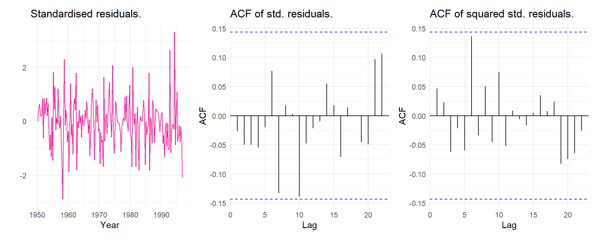
In Figure 21 the standardised residuals have a roughly constant spread across the whole period, unlike the model for Del.Tbill. None of the autocorrelations of the standardised residuals or of their squares lie outside the significance bounds. Thus, the AR(1)/GARCH(1,1) model with \(t\)-distributed errors captures the dependence in both the mean and the variance. The log difference is approximately the percentage change in the rate, so the size of the changes no longer depends on the level of the T-bill rate. The standardised residuals in Figure 21 have no remaining level-dependent variance.
Spectral Analysis
This is my work-through of Spectral Analysis in R. The tutorial’s helper functions are used throughout. The questions are answered in my own words, and I used Claude (Anthropic) to add the code for the figures that were not shown in the tutorial.
Setup and toolkit
Click to toggle source code
library(tidyverse)
library(patchwork)
col_obs = "deeppink" # observed series
col_ref = "purple" # true/reference line
col_bar = "grey50" # periodogram ordinates
# Note: element k + 1 of fft(y) is frequency k/n
# Function to calculate raw periodogram at Fourier frequencies j/n:
pgram = function(y, demean = TRUE) {
n = length(y)
if (demean) y = y - mean(y)
I = Mod(fft(y))^2 / n
j = 1:floor(n / 2)
tibble(freq = j / n, period = n / j, I = I[j + 1])
}
# Function to calculate theoretical ARMA spectral density (unit innovation variance):
arma_spec = function(f, ar = numeric(0), ma = numeric(0), sigma2 = 1) {
vapply(f, function(ff) {
num = if (length(ma))
Mod(1 + sum(ma * exp(-2i * pi * ff * seq_along(ma))))^2 else 1
den = if (length(ar))
Mod(1 - sum(ar * exp(-2i * pi * ff * seq_along(ar))))^2 else 1
sigma2 * num / den
}, numeric(1))
}
# g = max ordinate / sum of ordinates
# P(G > g) = sum_{k=1}^{floor(1/g)} (-1)^{k-1} choose(q, k) (1 - k g)^{q-1}
# Function for Fisher's g test (H0: white noise):
fisher_g_test = function(y) {
y = y - mean(y)
n = length(y)
I = Mod(fft(y))^2 / n
m = floor((n - 1) / 2) # ordinates exponential under H0
I = I[2:(m + 1)]
q = length(I)
g = max(I) / sum(I)
K = floor(1 / g)
k = 1:K
terms = (-1)^(k - 1) * exp(lchoose(q, k) + (q - 1) * log1p(-k * g))
p = min(max(sum(terms), 0), 1)
jmax = which.max(I)
list(g = g, p.value = p, freq = jmax / n, period = n / jmax)
}The question spectral analysis asks
The time domain asks how the past influences the present. The frequency domain asks which oscillations are present in the series and how much of the variance each of them explains. Both describe the same process but some features are much easier to see in the frequency domain.
Q: A monthly series has a strong annual pattern. What period and frequency represent this cycle?
A: The period is \(s = 12\) months, so the frequency is \(\omega = \frac{1}{12} \approx 0.083\) cycles per month.
Period, frequency and the ts() collision
A sinusoid with period \(m\) has frequency \(f = \frac{1}{m}\) cycles per observation and angular frequency \(\omega = 2\pi f = 2\pi/m\) radians per observation.
frequency in ts() is a period
In ts(y, frequency = 12) the frequency argument is the number of observations per cycle, which is the period \(m\), not the frequency \(f\). Passing frequency = \frac{1}{12} would tell R that the series is annual.
Click to toggle source code
monthly = ts(rnorm(60), frequency = 12)
quarterly = ts(rnorm(40), frequency = 4)
frequency(monthly) # 12 = period m[1] 12Click to toggle source code
frequency(quarterly) # 4[1] 4
Q: Complete the table
A:
| Data | Cycle | Period \(m\) | Frequency \(f = 1/m\) |
|---|---|---|---|
| Monthly | Annual | 12 | 0.0833 |
| Quarterly | Annual | 4 | 0.2500 |
| Hourly | Daily | 24 | 0.0417 |
| Daily | Weekly | 7 | 0.1429 |
The Nyquist frequency and aliasing
You need at least two observations per cycle (one near the peak and one near the trough). Thus, the fastest oscillation a sampled series can show has a period of 2 observations. This is the Nyquist frequency, \(f_N = \frac{1}{2}\) cycle per observation. Faster oscillations do not disappear. They are folded back into \([0, \frac{1}{2}]\) and appear at a lower frequency, which is known as aliasing.

A period of 1.5 is a frequency of \(\frac{2}{3}\), which is above the Nyquist frequency. It is folded to \(|\frac{2}{3} - 1| = \frac{1}{3}\), the frequency of the period-3 wave, which is why the two waves agree at every sampled point in Figure 22.
Q: A process oscillates at a true frequency of \(\frac{2}{3}\) cycles per observation. Can a series sampled once per observation resolve it, and can any later analysis recover it?
A: No. The true frequency is above the Nyquist frequency \(f_N = \frac{1}{2}\), so there are fewer than two observations per cycle. At the observed times, the true oscillation gives exactly the same values as a slower oscillation at the alias frequency \(|f - k|\). Since the sampled values are identical, no later analysis can recover the true frequency. The periodogram will show a peak at the alias instead. The only fix is to sample more often.
A series as a sum of waves
A sinusoid with amplitude \(A\), frequency \(f\) and phase \(\varphi\) can be written as
\[ A\cos(2\pi f t + \varphi) = a\cos(2\pi f t) + b\sin(2\pi f t), \qquad A = \sqrt{a^2 + b^2}. \]
The right-hand side is linear in \(a\) and \(b\), so for a known frequency it is just a regression with two columns. At the Fourier frequencies \(f_j = \frac{j}{n}\) the sine and cosine columns are orthogonal. Thus, the total sum of squares splits exactly across the frequencies, and the periodogram is an analysis of variance by frequency. The regression is fitted below at the frequency of a known cycle and compared with the periodogram ordinate.
The periodogram
The periodogram \(I(f)\) measures how much of the variation in a series comes from an oscillation at frequency \(f\). Its population version is the spectral density \(S(f)\), which spreads the variance of a stationary process over the frequencies. For example, a tall ordinate at \(f = \frac{1}{12}\) in monthly data means that a 12-month cycle explains a large share of the variance.
In R, spec.pgram() is used to estimate the periodogram. By default it removes a linear trend, tapers the ends of the series, pads the series and rescales by frequency(x). Thus, its values only match pgram() when these options are switched off.
Q: Monthly data show a large ordinate at \(f = 0.0833\). What do you report?
A: The period, with units: \(\frac{1}{0.0833} \approx 12\), which is an annual cycle.
Worked example: a known cycle
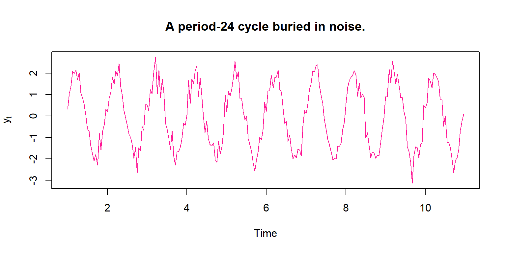
Figure 23 shows an obvious oscillation, but it is not easy to read off its exact length.
Q: Which frequency should dominate the periodogram?
A: \(f = \frac{1}{24}\), a 24-month period.
Click to toggle source code
pg_cyc = pgram(y_cyc)
pg_cyc |>
slice_max(I, n = 5) |>
mutate(period = 1 / freq) |>
kable(digits = 4)| freq | period | I |
|---|---|---|
| 0.0417 | 24.0000 | 234.5078 |
| 0.5000 | 2.0000 | 0.6709 |
| 0.1208 | 8.2759 | 0.6153 |
| 0.4042 | 2.4742 | 0.5132 |
| 0.3958 | 2.5263 | 0.4966 |

Q: What is the dominant frequency and period, and does it match the construction?
A: The largest ordinate is at \(f = 10/240 = 0.0417\), a period of 24 observations. This is exactly how the series was built. Since \(240/24 = 10\), the cycle lies exactly on a Fourier frequency, so all its power is in one ordinate. The other ordinates are tiny in comparison (Figure 24). The time plot showed an oscillation, but the periodogram tells us its length immediately.
The same analysis with spec.pgram()
Click to toggle source code
sp_cyc = spec.pgram(y_cyc, taper = 0, detrend = FALSE, fast = FALSE, plot = FALSE)
jmax = which.max(sp_cyc$spec)
c(peak_frequency = sp_cyc$freq[jmax],
peak_period = 1 / sp_cyc$freq[jmax])peak_frequency peak_period
0.04166667 24.00000000 With its defaults switched off, spec.pgram() finds the same peak. From here on I use spec.pgram(), because detrending, tapering and smoothing are exactly the steps a real analysis needs.
Reading a periodogram: five steps
Step 1: convert the peak to a period
Find the largest ordinate, invert its frequency and attach the units of the data.
Step 2: check for harmonics
A seasonal pattern that is not a pure sinusoid needs harmonics at \(2/m, 3/m, \dots\) to build its shape. The sharper the pattern, the more harmonics it needs.
Q: A monthly series has large peaks at 1/12, 2/12 and 3/12. Are these three cycles of 12, 6 and 4 months?
A: No, they are the fundamental (12 months) and the harmonics of one annual pattern that is not shaped like a sine wave. I would report a single twelve-month cycle and note that the 6- and 4-month peaks are its harmonics.
Step 3: do not trust a single tall ordinate
The raw periodogram is unbiased but not consistent. This means that each ordinate estimates \(S(f)\) correctly on average but its standard deviation is roughly as large as its mean and does not shrink as \(n\) grows.
Q: A raw periodogram has one very tall peak. Does that prove a real cycle?
A: No. There are many ordinates and each one is very noisy, so some will always look large by chance. To separate real cycles from noise you need to smooth the spectrum and test the largest peak.
Step 4: smooth, and keep what survives
Neighbouring ordinates estimate almost the same value of a smooth spectrum. Thus, averaging them reduces the noise. In spec.pgram() the spans argument sets how many neighbours are averaged.

Q: What goes wrong if the smoothing span is (1) too small, or (2) too large?
A: If the span is too small the spectrum will remain noisy but if it is too large true peaks are averaged out.
Step 5: test the largest peak
Fisher’s test compares the largest ordinate with the sum of all of them, \(g = \max_j I(f_j)/\sum_j I(f_j)\) and its null distribution accounts for having picked the maximum.
Click to toggle source code
set.seed(2026)
fisher_g_test(rnorm(240)) $g
[1] 0.04863759
$p.value
[1] 0.2936269
$freq
[1] 0.2166667
$period
[1] 4.615385Click to toggle source code
fisher_g_test(y_cyc) $g
[1] 0.9370008
$p.value
[1] 2.495038e-140
$freq
[1] 0.04166667
$period
[1] 24
Q: What is the null hypothesis, and what does rejecting it mean?
A: Null hypothesis is that the series is white noise. Rejecting the null hypothesis is because there is insignificant evidence that the series is white noise.
Preparing a series
The three routine steps are all spec.pgram() defaults. Remove the mean (and usually the trend), taper the ends and cosmetically pad the series.
Spectral signatures of familiar models

| Process | Shape of \(S(f)\) |
|---|---|
| White noise | Flat at every frequency |
| MA(1) | Monotone, sloping up or down |
| AR(1), \(\phi > 0\) | Power concentrated at low frequencies (“red”) |
| AR(1), \(\phi < 0\) | Power concentrated at high frequencies (“blue”) |
| AR(2), complex roots | A peak at an interior frequency |
| Seasonal | A narrow spike at \(1/m\) and its harmonics |
A cycle that is not seasonal
The AR(2) \(y_t = 1.5y_{t-1} - 0.75y_{t-2} + \varepsilon_t\) has complex roots and a spectral peak at about \(f \approx 0.08\), a period of about 12.4 observations:
Click to toggle source code
f_peak = f_grid[which.max(arma_spec(f_grid, ar = c(1.5, -0.75)))]
c(peak_frequency = f_peak, peak_period = 1 / f_peak)peak_frequency peak_period
0.08 12.50
Q: Would a periodogram peak near twelve months prove deterministic annual seasonality?
A: No. An AR(2) with complex roots can also give a peak near 12 months, but its cycles vary in length and are not tied to the calendar. The difference is the width of the peak. A stochastic cycle gives a broad peak, whereas deterministic seasonality gives a narrow spike at \(1/m\) and its harmonics.
What differencing does to a spectrum
Filtering a series multiplies its spectrum by a fixed curve. For the first difference \((1-L)\) the curve is \(|1 - e^{-2\pi i f}|^2 = 4\sin^2(\pi f)\), and for the seasonal difference \((1 - L^{12})\) it is \(4\sin^2(12\pi f)\).

The first difference multiplies the power at \(f = 0\) by zero (it removes the level and strongly damps a trend) but it multiplies the power at \(f = 1/2\) by four. The seasonal difference has zeros at \(f = 0, 1/12, 2/12, \dots, 6/12\), so it removes the level and every seasonal harmonic (Figure 27).
Q: Why is unnecessary differencing harmful rather than merely unhelpful?
A: Differencing removes low-frequency variation and amplifies high-frequency variation. If there is no trend, it removes a component that was not there and amplifies the fastest, least informative variation. Differencing white noise doubles the variance and creates a lag 1 autocorrelation of \(-0.5\), which is not invertible.
The frequency domain versus the ACF
| Task | Time domain | Frequency domain | Better suited |
|---|---|---|---|
| Detect dependence | Significant spikes in the ACF/PACF | The spectrum is not flat | Either |
| Find the length of a cycle | Read the lag of repeating ACF peaks (imprecise) | Period = 1 / frequency of the spectral peak | Frequency |
| Judge how regular a cycle is | Difficult: look at how slowly the ACF oscillation dies out | Narrow peak = regular cycle; broad peak = irregular cycle | Frequency |
| Separate several cycles | Very difficult: the cycles overlap in the ACF | Each cycle appears as its own peak | Frequency |
| Choose a model | Match ACF/PACF patterns to AR, MA or ARMA | Indirectly: the shape of the spectrum hints at AR or MA behaviour | Time |
| Forecast future values | Directly, from the fitted model | Not directly: found cycles can feed into a harmonic regression | Time |
| Handle non-stationarity | Difference or transform first, then model | Must be made stationary first, or the spectrum is misleading | Time |
The time and frequency domains contain the same information, since the spectral density is the Fourier transform of the autocovariance function. However, Table 10 shows that each domain makes different questions easy to answer. The frequency domain describes the series but does not forecast it, which is why ARIMA models are used for forecasting.
Q: A series appears to contain cycles of roughly 7, 30 and 365 observations. Which representation makes these simultaneous periodicities easier to see?
A: The frequency domain. The three cycles appear as three separate peaks at \(1/7\), \(1/30\) and \(1/365\). The overlapping patterns in an ACF would be difficult to distinguish.
Exercise

Task 1: predict, then read the periodogram.
Click to toggle source code
pg = pgram(y)
pg |> slice_max(I, n = 5)# A tibble: 5 × 3
freq period I
<dbl> <dbl> <dbl>
1 0.0333 30 203.
2 0.261 3.83 3.32
3 0.1 10 2.92
4 0.231 4.34 2.53
5 0.272 3.67 2.23
The largest ordinate is at \(f = 12/360 = 0.0333\), a period of 30 observations (Figure 29). Since \(360/30 = 12\), the cycle again lies exactly on a Fourier frequency. The next largest ordinates are about 60 times smaller. In the time plot (Figure 28) a cycle is visible but its exact length is not.
Task 2: smooth at two spans.
Click to toggle source code
sp9 = spec.pgram(y, spans = 9, taper = 0.1, detrend = TRUE, fast = FALSE, plot = FALSE)
sp15 = spec.pgram(y, spans = 15, taper = 0.1, detrend = TRUE, fast = FALSE, plot = FALSE)
par(mfrow = c(2, 1))
plot(sp9$freq, sp9$spec, type = "l", log = "y", col = col_obs,
main = "Smoothed (spans = 9)", xlab = "Frequency", ylab = "Spectral density")
abline(v = 1 / 30, lty = 2, col = col_ref)
plot(sp15$freq, sp15$spec, type = "l", log = "y", col = col_obs,
main = "More smoothing (spans = 15)", xlab = "Frequency", ylab = "Spectral density")
abline(v = 1 / 30, lty = 2, col = col_ref)
par(mfrow = c(1, 1))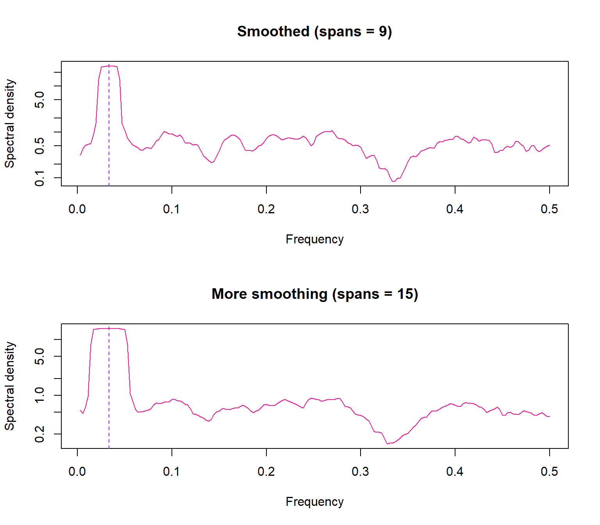
In Figure 30 the peak near \(1/30\) is still there after heavier smoothing. It becomes wider and slightly lower, but it is still well above the rest of the spectrum, which is roughly flat. This is why two spans are compared: a real cycle remains when the smoothing is increased, whereas a peak caused by noise tends to disappear.
Task 3: formal test.
Click to toggle source code
fisher_g_test(y)$g
[1] 0.6690766
$p.value
[1] 5.812113e-84
$freq
[1] 0.03333333
$period
[1] 30Fisher’s test rejects white noise (\(g = 0.669\), \(p < 0.001\)), and the largest ordinate is at a period of 30. Thus, the largest ordinate is too large to be a chance maximum under white noise. The smoothed spectrum adds information about where the cycle is and how broad it is.
Final interpretation.
The spectrum has one dominant peak at a frequency of about 0.033 cycles per observation, which is a cycle of about 30 observations. The peak remains after smoothing, so it is not just a single noisy ordinate, and Fisher’s test gives strong evidence against white noise (\(p < 0.001\)). The rest of the spectrum is roughly flat, so the noise around the cycle looks like white noise. Thus, the series does not need to be prewhitened before testing.
Section 2
Exponential Smoothing
Data statement
All data in this section are public data sets that come with R packages (marathon, oil, books and uschange from fpp2, and Nile and co2 from base R) or are simulated. None of them contain personal information, so no consent, anonymisation or POPIA steps were needed.
Overview of the methods
Exponential smoothing forecasts are weighted averages of past observations, with weights that decrease exponentially the further back we go. Each method in Table 11 adds a component, and each component has its own smoothing parameter.
| Method | Components | Forecast \(\hat{y}_{T+h \mid T}\) | Use when |
|---|---|---|---|
| Simple (SES) | level \(\ell_t\) (\(\alpha\)) | \(\ell_T\) | no trend, no seasonality |
| Holt’s linear | level, trend \(b_t\) (\(\alpha, \beta\)) | \(\ell_T + hb_T\) | a linear trend |
| Damped trend | level, damped trend (\(\alpha, \beta, \phi\)) | \(\ell_T + (\phi + \dots + \phi^h)b_T\) | a trend that is expected to flatten out |
| Holt-Winters additive | level, trend, season \(s_t\) (\(\alpha, \beta, \gamma\)) | \(\ell_T + hb_T + s_{T+h-m(k+1)}\) | seasonal swings of constant size |
| Holt-Winters multiplicative | level, trend, season (\(\alpha, \beta, \gamma\)) | \((\ell_T + hb_T)s_{T+h-m(k+1)}\) | seasonal swings proportional to the level |
Written in error-correction form, each method becomes a state-space model with a single source of error (the ETS models). This gives a likelihood (so parameters can be estimated by maximum likelihood and models compared by AICc) and prediction intervals. ets() chooses between the error, trend and seasonal types automatically. In Project 1 I implemented additive Holt-Winters with a damped trend from first principles on Eskom electricity demand.
Simple exponential smoothing
Simple exponential smoothing (SES) forecasts the next observation with a weighted average of past observations, where the weights decrease exponentially:
\[ \hat{y}_{t+1 \mid t} = \alpha y_t + \alpha(1-\alpha) y_{t-1} + \alpha(1-\alpha)^2 y_{t-2} + \cdots, \quad 0 < \alpha < 1. \]
The same forecast can be written as two updating equations:
\[ \begin{aligned} \text{Forecast:} \quad \hat{y}_{t+h \mid t} &= \ell_t \\ \text{Smoothing:} \quad \ell_t &= \alpha y_t + (1-\alpha)\ell_{t-1} \end{aligned} \]
Note
The level \(\ell_t\) is a local mean. Forecasts from SES are flat: there is no new information after time \(T\), so every forecast is \(\ell_T\).
To start the recursion we need \(\ell_0\), and in most cases we also need to estimate \(\alpha\). Both are found by minimising the sum of squared one-step-ahead errors:
\[ \text{SSE} = \sum_{t=1}^{T}(y_t - \hat{y}_{t \mid t-1})^2. \]
Question 1: Boston marathon
The marathon data are the winning times (in minutes) of the Boston marathon from 1897 to 2016.
Click to toggle source code
# Read in data:
data(marathon)
# View(marathon)
cat("Start:", start(marathon), " End:", end(marathon), " Frequency:", frequency(marathon), "\n")Start: 1897 1 End: 2016 1 Frequency: 1 Writing SES from first principles
Click to toggle source code
y = marathon
# Function to implement simple exponential smoothing:
# y: time series
# alpha: smoothing parameter
# level0: initial level
ses_fxn = function(y, alpha, level0) {
n = length(y)
y_hat = numeric(n) # store estimates
level = numeric(n) # store levels
l = level0
for (t in 1:n) {
y_hat[t] = l
l = alpha*y[t] + (1-alpha)*l
level[t] = l
}
res = y - y_hat
sse = sum(res^2)
list(
yhat = y_hat,
level = level,
residuals = res,
sse = sse,
forecast = l
)
}
# Function to return the one-step-ahead forecast:
ses_forecast_fxn = function(y, alpha, level0) {
ses_fxn(y ,alpha, level0)$forecast
}
# Function to optimise:
my_sse = function(par, y) {
ses_fxn(y, alpha = par[1], level0 = par[2])$sse
}
# Optimise:
opt = optim(par = c(0.5,y[1]),
fn = my_sse,
y = y,
method = 'L-BFGS-B',
lower = c(0.0001,-Inf),
upper = c(0.9999, Inf))
alpha_hat = opt$par[1]
l0_hat = opt$par[2]
my_fit = ses_fxn(y,alpha=alpha_hat,level0=l0_hat)
# my_fit$forecast
# Compare with ses():
fit = ses(y,h=1)
# fit$model$par
# fit$mean
rbind(
mine = c(alpha = alpha_hat, l0 = l0_hat,
sse = opt$value, forecast = my_fit$forecast),
ses = c(fit$model$par["alpha"], fit$model$par["l"],
sum(residuals(fit)^2), fit$mean[1])
) alpha l0 sse forecast
mine 0.3456464 167.1724 3594.147 130.3560
ses 0.3457325 167.1741 3594.147 130.3563Click to toggle source code
# Plug ses()'s parameters into my function:
check = ses_fxn(y, alpha = fit$model$par["alpha"],
level0 = fit$model$par["l"])
round(unname(check$forecast) - fit$mean[1], 10)[1] 0Using the ses() parameter estimates in my own function yields the same forecast. My estimates are very close to the ses() estimates (\(\hat{\alpha} = 0.3456\) vs 0.3457). The small difference is due to how each optimisation works. ses() maximises a likelihood rather than minimising the SSE directly.
Point forecast and prediction interval for 2017
Click to toggle source code
n = length(y)
z = qnorm(0.975)
s = sqrt(check$sse/(n-2))
fit95 = ses(y, h = 1, level = 95)
round(rbind(
mine = c(forecast = unname(check$forecast),
lower = unname(check$forecast) - z*s,
upper = unname(check$forecast) + z*s),
ses = c(fit95$mean[1], fit95$lower[1], fit95$upper[1])
), 4) forecast lower upper
mine 130.3563 119.5394 141.1733
ses 130.3563 119.5394 141.1733Both give the same point forecast and 95% interval: \(\hat{y}_{T+1|T} \pm 1.96\,\hat{\sigma}\), with \(\hat{\sigma} = \sqrt{SSE/(n-2)}\).
Plot with fitted values

Figure 31 shows that the fitted values follow the observations but lag one step behind them. SES has no trend term, so during the long downward trend (until about 1980) the fitted values almost always predicted a longer winning time than what is actually observed.
Estimate of \(\sigma\)
Click to toggle source code
c(mine = sqrt(check$sse / (n - 2)), ses = sqrt(fit$model$sigma2)) mine ses
5.518956 5.518956 A typical one-step-ahead forecast is off by about \(\hat{\sigma} \approx 5.52\) minutes. ses() divides the SSE by \(T-2\) to correct for the two estimated parameters.
Question 2: Saudi Arabian oil production
Click to toggle source code
# Read in data:
data(oil)
# View(oil)
# Fit SES and forecast four years ahead:
oil_fit = ses(oil, h = 4)
oil_fit$model$par alpha l
0.9999 110.8832 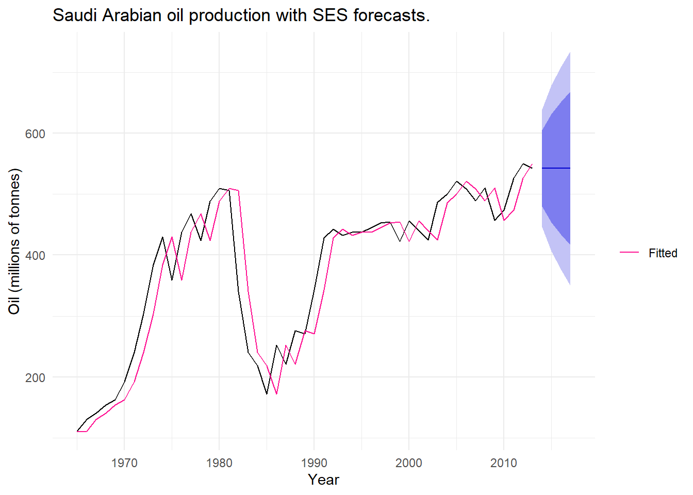
An \(\hat{\alpha} \approx 1\) value means the forecast relies mostly on the last observation. The four forecasts are all equal to 542.3. In Figure 32 the prediction intervals widen with the horizon.
Prediction interval with \(\hat{y} \pm 1.96s\)
Click to toggle source code
# Standard deviation of the residuals:
sd_oil = sd(residuals(oil_fit))
# Manual 95% prediction interval for first forecast:
PI_oil_upper = oil_fit$mean[1] + 1.96*sd_oil
PI_oil_lower = oil_fit$mean[1] - 1.96*sd_oil
# 95% prediction interval by R:
PI_oil_R = c(oil_fit$lower[1, "95%"], oil_fit$upper[1, "95%"])
kable(data.frame(
Method = c("$\\hat{y} \\pm 1.96\\,s$", "ses()"),
Lower = c(PI_oil_lower, PI_oil_R[1]),
Upper = c(PI_oil_upper, PI_oil_R[2]),
SD = c(paste0("$s$ = ", round(sd_oil, 2)),
paste0("$\\hat{\\sigma}$ = ", round(sqrt(oil_fit$model$sigma2), 2)))
), digits = 2, row.names = FALSE,
col.names = c("Method", "Lower", "Upper", "SD used"))| Method | Lower | Upper | SD used |
|---|---|---|---|
| \(\hat{y} \pm 1.96\,s\) | 448.82 | 635.86 | \(s\) = 47.71 |
| ses() | 446.20 | 638.48 | \(\hat{\sigma}\) = 49.05 |
The two intervals are similar but not identical. This is because they use different estimates of the standard deviation. sd() divides by \(T-1\) (1 degree of freedom for the estimated mean) and subtracts the mean of the residuals. R uses \(\hat{\sigma}^2 = \sum e_t^2/(T-2)\), which does not subtract the mean and divides by \(T-2\) (2 degrees of freedom for the estimated \(\alpha\) and \(\ell_0\)).
For \(h > 1\) we cannot just use \(s\), since the forecast variance grows with the horizon. For SES (the ETS(A,N,N) model) the \(h\)-step forecast variance is \(\sigma^2[1 + \alpha^2(h-1)]\).
Click to toggle source code
h = 1:4
alpha_oil = oil_fit$model$par["alpha"]
# Forecast variance for h = 1, ..., 4:
var_h = oil_fit$model$sigma2 * (1 + alpha_oil^2 * (h - 1))
upper_manual = oil_fit$mean + qnorm(0.975) * sqrt(var_h)
kable(data.frame(h = h,
Upper_manual = as.numeric(upper_manual),
Upper_R = as.numeric(oil_fit$upper[, "95%"])),
digits = 3,
col.names = c("h","Upper manual", "Upper R"))| h | Upper manual | Upper R |
|---|---|---|
| 1 | 638.479 | 638.479 |
| 2 | 678.293 | 678.293 |
| 3 | 708.845 | 708.845 |
| 4 | 734.602 | 734.602 |
The formula gives exactly the same upper limits as R. In the state-space form, \(\ell_t = \ell_{t-1} + \alpha e_t\), so each future innovation enters the level with weight \(\alpha\) and persists in all later levels. Writing \(y_{T+h} = \ell_T + \alpha \sum_{j=1}^{h-1} e_{T+j} + e_{T+h}\), with independent errors \(e_t \sim N(0, \sigma^2)\), gives \(\text{Var}(y_{T+h} \mid y_{1:T}) = \sigma^2[1 + \alpha^2(h-1)]\), which increases linearly in \(h\).
Question 3: optim() on oil 1996–2013
Click to toggle source code
oil_sub = window(oil, start = 1996, end = 2013)
opt_oil = optim(c(0.5, oil_sub[1]),
my_sse,
y = oil_sub,
method = "L-BFGS-B",
lower = c(1e-4, -Inf),
upper = c(0.9999, Inf))
round(rbind(
optim = setNames(opt_oil$par, c("alpha", "l")),
ses = ses(oil_sub)$model$par[c("alpha", "l")]
), 4) alpha l
optim 0.8338 446.5754
ses 0.8339 446.5868Question 4: Paperback and hardcover book sales
a) SES

Figure 33 shows that both series are very noisy from day to day and both have an upwards trend over the month. There is no clear seasonal pattern and 30 days of data is insufficient to estimate one reliably. The upwards trend suggests that a flat forecast (SES) will be inadequate.
Click to toggle source code
# SES:
ses_pb = ses(books[, "Paperback"], h = 4)
ses_hc = ses(books[, "Hardcover"], h = 4)
# Holt's linear method:
holt_pb = holt(books[, "Paperback"], h = 4)
holt_hc = holt(books[, "Hardcover"], h = 4)
# Training RMSE:
rmse = function(fc) {
accuracy(fc)["Training set", "RMSE"]
}
rmse_df = data.frame(
Series = c("Paperback", "Hardcover"),
SES = c(rmse(ses_pb), rmse(ses_hc)),
Holt = c(rmse(holt_pb), rmse(holt_hc))
)
kable(rmse_df, digits = 2, row.names = FALSE)| Series | SES | Holt |
|---|---|---|
| Paperback | 33.64 | 31.14 |
| Hardcover | 31.93 | 27.19 |
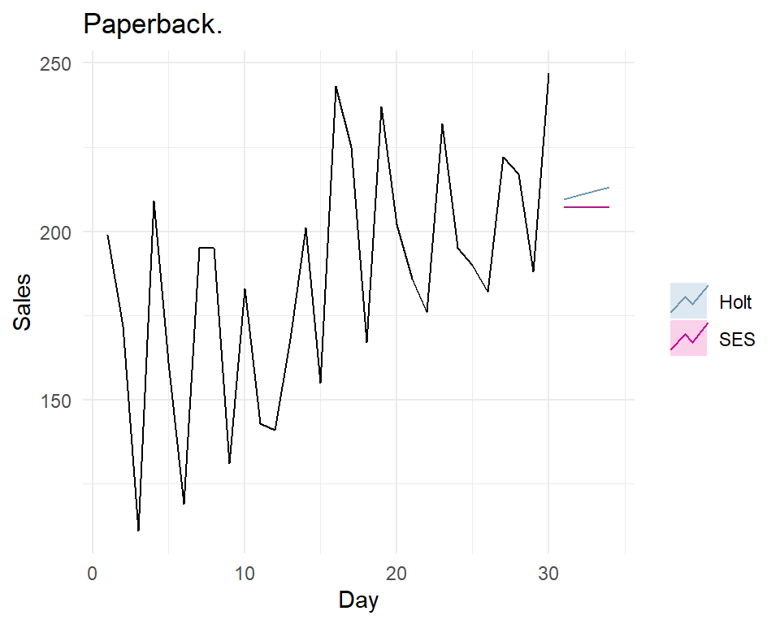
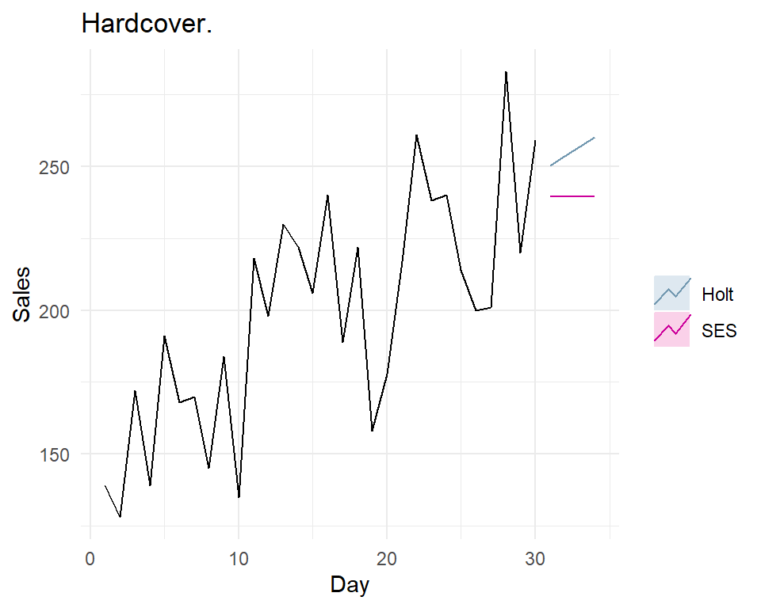
b) Holt’s linear method
\[ \begin{aligned} \hat{y}_{t+h \mid t} &= \ell_t + h b_t \\ \ell_t &= \alpha y_t + (1-\alpha)(\ell_{t-1} + b_{t-1}) \\ b_t &= \beta^*(\ell_t - \ell_{t-1}) + (1-\beta^*) b_{t-1} \end{aligned} \]
Holt’s method has a lower training RMSE than SES for both paperback and hardcover sales (paperback: 31.14 vs 33.64; hardcover: 27.19 vs 31.93). However, Holt’s linear method estimates two more parameters than SES, so it should always fit the training data at least as well. Training RMSE does not tell us how well a model will perform out-of-sample. Although SES is just an updating rule, ses() and holt() fit the corresponding state-space models (ETS(A,N,N) and ETS(A,A,N)) with normal errors, so both have a likelihood. This means the models can be compared using AICc, which penalises the additional parameters and is more informative about which model to choose.
Click to toggle source code
# AICc:
kable(data.frame(
Series = c("Paperback", "Hardcover"),
AIC_SES = c(ses_pb$model$aicc, ses_hc$model$aicc),
AIC_Holt = c(holt_pb$model$aicc, holt_hc$model$aicc)
), digits = 1,
row.names = FALSE,
col.names = c("Series", "SES", "Holt"))| Series | SES | Holt |
|---|---|---|
| Paperback | 319.9 | 320.8 |
| Hardcover | 316.8 | 312.7 |
c) Which forecasts are best?
Both series have an upward trend, but the AICc gives different answers for the two. For hardcover sales, Holt’s method has a clearly lower AICc than SES (312.7 vs 316.8), even after the penalty for its two extra parameters. The trend is strong enough that SES’s fitted values lag behind it, so its one-step-ahead errors are larger. For paperback sales, SES has a slightly lower AICc (319.9 vs 320.8). The paperback series is noisier, so the small improvement in fit from accounting for the trend in the data is not worth the two extra parameters. However, since the difference in AICc is less than 1, there is no real evidence that one method is better than the other for paperback sales. Overall, Holt’s method is preferred for the hardcover series and SES for paperback sales but with only 30 days of data it is not reliable for long-term forecasting.
d) Prediction intervals from the RMSE
Click to toggle source code
# Training RMSE for each fit:
rmse_ses_pb = rmse(ses_pb)
rmse_holt_pb = rmse(holt_pb)
rmse_ses_hc = rmse(ses_hc)
rmse_holt_hc = rmse(holt_hc)
# 95% interval using RMSE:
lower_rmse = c(ses_pb$mean[1]-1.96*rmse_ses_pb,
holt_pb$mean[1]-1.96*rmse_holt_pb,
ses_hc$mean[1]-1.96*rmse_ses_hc,
holt_hc$mean[1]-1.96*rmse_holt_hc)
upper_rmse = c(ses_pb$mean[1]+1.96*rmse_ses_pb,
holt_pb$mean[1]+1.96*rmse_holt_pb,
ses_hc$mean[1]+1.96*rmse_ses_hc,
holt_hc$mean[1]+1.96*rmse_holt_hc)
# 95% interval by R:
lower_R = c(ses_pb$lower[1, "95%"], holt_pb$lower[1, "95%"],
ses_hc$lower[1, "95%"], holt_hc$lower[1, "95%"])
upper_R = c(ses_pb$upper[1, "95%"], holt_pb$upper[1, "95%"],
ses_hc$upper[1, "95%"], holt_hc$upper[1, "95%"])
kable(data.frame(
Model = c("Paperback SES", "Paperback Holt", "Hardcover SES", "Hardcover Holt"),
Lower_RMSE = lower_rmse,
Upper_RMSE = upper_rmse,
Lower_R = lower_R,
Upper_R = upper_R
), digits = 1, row.names = FALSE,
col.names = c("Model", "Lower (RMSE)", "Upper (RMSE)", "Lower (R)", "Upper (R)"))| Model | Lower (RMSE) | Upper (RMSE) | Lower (R) | Upper (R) |
|---|---|---|---|---|
| Paperback SES | 141.2 | 273.0 | 138.9 | 275.4 |
| Paperback Holt | 148.4 | 270.5 | 143.9 | 275.0 |
| Hardcover SES | 177.0 | 302.1 | 174.8 | 304.3 |
| Hardcover Holt | 196.9 | 303.5 | 192.9 | 307.4 |
The intervals based on the RMSE are slightly narrower than the R intervals. RMSE divides the SSE by \(T\), whereas R divides by the degrees of freedom, \(T-k\), where \(k = 2\) for SES (\(\alpha, \ell_0\)) and \(k = 4\) for Holt (\(\alpha, \beta, \ell_0, b_0\)). Since the series has only 30 observations, this difference is noticeable, especially for Holt’s method. Neither interval accounts for the uncertainty in the parameter estimates, so both are likely too narrow.
Question 5: Simulating using the state-space model formulation
In error-correction form, SES and Holt’s method are state-space models with a single source of error:
\[ \begin{aligned} y_t &= \ell_{t-1} + b_{t-1} + e_t, \qquad e_t \sim N(0, \sigma^2) \\ \ell_t &= \ell_{t-1} + b_{t-1} + \alpha e_t \\ b_t &= b_{t-1} + \alpha\beta^* e_t \end{aligned} \]
For SES, \(b_t = 0\) and \(\beta^* = 0\).
Click to toggle source code
# Function to simulate from SES or Holt's method:
# n: no. observations
# par: parameters
sim_fxn = function(n, par) {
l = par$l0
b = par$b0
y = numeric(n)
level = numeric(n)
for (t in 1:n) {
e = rnorm(1, 0, par$sigma)
y[t] = l + b + e # observation equation
l = l + b + par$alpha * e # level
b = b + par$alpha * par$beta * e # trend
level[t] = l
}
list(y = ts(y), level = level)
}SES
Click to toggle source code
set.seed(2026)
# True parameters:
p_ses = list(alpha = 0.4, beta = 0, l0 = 3, b0 = 0, sigma = 0.5)
# Simulate:
sim_ses = sim_fxn(n = 100, par = p_ses)
y_ses = sim_ses$y
# Estimate with optim() and ses():
fit_sim = optim(par = c(0.5, y_ses[1]),
fn = my_sse,
y = y_ses,
method = "L-BFGS-B",
lower = c(0.0001, -Inf),
upper = c(0.9999, Inf))
ses_sim = ses(y_ses)
kable(data.frame(
Method = c("True value", "optim()", "ses()"),
alpha = c(p_ses$alpha, fit_sim$par[1], ses_sim$model$par["alpha"]),
l0 = c(p_ses$l0, fit_sim$par[2], ses_sim$model$par["l"]),
sigma = c(p_ses$sigma, sqrt(fit_sim$value / (100 - 2)), sqrt(ses_sim$model$sigma2))
), digits = 3, row.names = FALSE)| Method | alpha | l0 | sigma |
|---|---|---|---|
| True value | 0.40 | 3.000 | 0.500 |
| optim() | 0.41 | 2.868 | 0.506 |
| ses() | 0.41 | 2.868 | 0.506 |
The estimates from optim() and ses() are identical to 3 decimal places and both are close to the true parameter values. They do not match the true values exactly because they are based on a single simulated series, so some sampling variation is expected.
Holt
Click to toggle source code
set.seed(2026)
# True parameters:
p_holt = list(alpha = 0.5, beta = 0.2, l0 = 10, b0 = 0.5, sigma = 1)
y_holt = sim_fxn(n = 100, par = p_holt)$y
holt_sim = holt(y_holt)
kable(data.frame(
Method = c("True value", "holt()"),
alpha = c(p_holt$alpha, holt_sim$model$par["alpha"]),
beta = c(p_holt$alpha * p_holt$beta, holt_sim$model$par["beta"]),
l0 = c(p_holt$l0, holt_sim$model$par["l"]),
b0 = c(p_holt$b0, holt_sim$model$par["b"])
), digits = 3, row.names = FALSE)| Method | alpha | beta | l0 | b0 |
|---|---|---|---|---|
| True value | 0.500 | 0.100 | 10.00 | 0.500 |
| holt() | 0.416 | 0.122 | 11.23 | -0.061 |
holt() reports \(\beta\) on the error-correction scale, \(\beta = \alpha\beta^*\), so the true value is \(0.5 \times 0.2 = 0.1\). The estimates of \(\alpha\) and \(\beta\) are reasonably close to the true values. The initial states are poorly estimated because only the first few observations carry information about them, and a higher starting level combined with a lower starting trend fits those observations almost equally well. This has little effect on the forecasts, which depend on the final level and trend rather than the starting values.
Problem 1
Question: How do different prediction intervals differ and what are their sources of uncertainty?
I used the simulated SES series from Question 5, fitting each method to the first 80 observations and forecasting 10 steps ahead.
A Bayesian SES sampler
Under the ETS(A,N,N) model, \(y_t = \ell_{t-1} + e_t\) with \(e_t \sim N(0, \sigma^2)\) independent. Given \(\alpha\), \(\ell_0\) and \(y_{1:t-1}\), the level \(\ell_{t-1}\) is known, so \(y_t \mid y_{1:t-1} \sim N(\ell_{t-1}, \sigma^2)\). Writing the joint density as a product of these conditional densities gives the likelihood
\[ L(\alpha, \ell_0, \sigma; \boldsymbol{y}) = \prod_{t=1}^{T} \frac{1}{\sigma}\,\phi\!\left(\frac{e_t}{\sigma}\right), \qquad e_t = y_t - \ell_{t-1}, \]
where \(\phi\) is the standard normal density and \(e_t\) depends on \((\alpha, \ell_0)\) through the SES recursion. The priors are \(\alpha \sim \text{Uniform}(0, 1)\) and flat priors on \(\ell_0\) and \(\log\sigma\).
A random walk Metropolis-Hastings algorithm is used to sample from the posterior. The random walk steps are drawn from a multivariate normal distribution, which has support over the entire real line, whereas \(\alpha \in (0, 1)\) and \(\sigma > 0\). Therefore, the parameters are mapped to the real line using
\[ \phi_1 = \text{logit}(\alpha), \qquad \phi_2 = \ell_0, \qquad \phi_3 = \log\sigma, \]
and the random walk is performed over \(\boldsymbol{\phi} = (\phi_1, \phi_2, \phi_3)\), with proposals \(\boldsymbol{\phi}^* = \boldsymbol{\phi} + \boldsymbol{e}\). Since we sample \(\boldsymbol{\phi}\) rather than \(\boldsymbol{\theta} = (\alpha, \ell_0, \sigma)\), the Jacobian of the transformation must be included in the log posterior. The flat prior on \(\log\sigma\) is already defined on the transformed scale, so only \(\alpha\) needs a Jacobian:
\[ \log p(\boldsymbol{\phi}) = \log L(\alpha, \ell_0, \sigma; \boldsymbol{y}) + \log\{\alpha(1-\alpha)\} + \text{const}. \]
Since the proposal is symmetric, \(\boldsymbol{\phi}^*\) is accepted with probability \(\min\{1, \exp[\log p(\boldsymbol{\phi}^*) - \log p(\boldsymbol{\phi})]\}\). The steps are initially drawn from \(\boldsymbol{e} \sim N(\boldsymbol{0}, 0.5^2\,\mathbf{I}_3)\). The first 3 000 iterations are a burn-in, and the covariance matrix \(\Sigma\) of the transformed parameters is estimated from the last 1 500 of these. The retained draws then use \(\boldsymbol{e} \sim N\left(\boldsymbol{0}, \frac{2.38^2}{3}\Sigma\right)\) (Roberts et al., 1997). The chain starts at the ses() estimates.
Each retained draw \((\alpha^{(j)}, \ell_0^{(j)}, \sigma^{(j)})\) is then used to compute \(\ell_T^{(j)}\) and simulate one future path from the state-space model. This gives draws from the posterior predictive distribution of \(y_{T+1}, \ldots, y_{T+h}\).
Click to toggle source code
# 1. SES log-likelihood:
SES_Log_Likelihood = function(y, alpha, l0, sigma) {
e = ses_fxn(y, alpha, l0)$residuals
out = sum(dnorm(e, 0, sigma, log = TRUE))
if (!is.finite(out)) -Inf else out
}
# 2. Parameter transforms:
to_real = function(theta) {
c(qlogis(theta[1]), theta[2], log(theta[3]))
}
from_real = function(phi) {
c(plogis(phi[1]), phi[2], exp(phi[3]))
}
# 3. Log posterior on the transformed scale (priors + Jacobian):
log_target = function(phi, y) {
theta = from_real(phi)
ll = SES_Log_Likelihood(y, theta[1], theta[2], theta[3])
if (!is.finite(ll)) return(-Inf)
# Note: flat priors on l0 and log(sigma) only add a constant
# Uniform(0, 1) prior on alpha x logit Jacobian:
lp_alpha = plogis(phi[1], log.p = TRUE) + plogis(-phi[1], log.p = TRUE)
ll + lp_alpha
}
# 4. Metropolis-Hastings loop:
mh_run = function(phi, jitters, y) {
n = nrow(jitters)
cur = log_target(phi, y)
phi_draws = matrix(NA, n, 3)
accepted = logical(n)
for (i in seq_len(n)) {
prop = phi + jitters[i, ]
prop_val = log_target(prop, y)
log_alpha = if (is.finite(prop_val)) min(0, prop_val - cur) else -Inf
if (log(runif(1)) < log_alpha) {
phi = prop
cur = prop_val
accepted[i] = TRUE
}
phi_draws[i, ] = phi
}
list(phi_draws = phi_draws, last = phi, accept_rate = mean(accepted))
}
# 5. Two-phase sampler:
# Phase 1: burn-in with isotropic jitter, Sigma = covariance of later burn-in draws
# Phase 2: retained iterations with proposals ~ N(0, scale * Sigma)
MH_SES = function(y, init, iterations = 20000, burn = 3000, burn_sd = 0.5,
cov_frac = 0.5, scale = 2.38^2/3) {
phi0 = to_real(init)
# Phase 1:
burn_jit = rmvnorm(burn, mean = rep(0, 3), sigma = burn_sd^2 * diag(3))
b = mh_run(phi0, burn_jit, y)
keep = seq.int(floor(burn * (1 - cov_frac)) + 1, burn)
Sigma = cov(b$phi_draws[keep, , drop = FALSE])
# Phase 2:
main_jit = rmvnorm(iterations, mean = rep(0, 3), sigma = scale * Sigma)
m = mh_run(b$last, main_jit, y)
draws = t(apply(m$phi_draws, 1, from_real))
colnames(draws) = c("alpha", "l0", "sigma")
list(
draws = draws,
burn_accept = b$accept_rate,
accept_rate = m$accept_rate)
}As a check on my sample, I also fitted the same model in Stan (Carpenter et al., 2017) to sample from the posterior. Stan uses the No-U-Turn Sampler (NUTS), an adaptive form of Hamiltonian Monte Carlo that uses the gradient of the log posterior to propose new points. The parameters block restricts \(\alpha\) to \((0, 1)\) and \(\sigma\) to \((0, \infty)\), and Stan maps them to the real line and includes the Jacobian automatically. The model block runs the SES recursion, with \(y_t \sim N(\ell_{t-1}, \sigma^2)\) at each step. The generated quantities block computes \(\ell_T\) for each posterior draw and simulates one future path from the state-space model, which gives draws from the posterior predictive distribution of \(y_{T+1}, \ldots, y_{T+h}\).
Click to toggle source code
# SES model written in Stan:
modelString = "
data {
int<lower=1> N; // number of observations
vector[N] y; // time series
int<lower=1> N_new; // forecast horizon
}
parameters {
real<lower=0, upper=1> alpha; // smoothing parameter
real l0; // initial level
real<lower=0> sigma; // error standard deviation
}
model {
real level = l0;
// Priors (flat priors on l0 and sigma):
alpha ~ uniform(0, 1);
target += -log(sigma); // flat prior on log(sigma)
// Likelihood: one-step-ahead errors are iid N(0, sigma^2)
for (t in 1:N) {
y[t] ~ normal(level, sigma);
level = level + alpha * (y[t] - level);
}
}
generated quantities {
real level_T;
vector[N_new] y_new;
// Final level for this draw:
{
real level = l0;
for (t in 1:N) level = level + alpha * (y[t] - level);
level_T = level;
}
// One future path from the state-space model:
{
real lev = level_T;
for (h in 1:N_new) {
real e = normal_rng(0, sigma);
y_new[h] = lev + e;
lev = lev + alpha * e;
}
}
}
"Comparing prediction intervals
Click to toggle source code
n_tr = 80
h_max = 10
y_train = window(y_ses, end = n_tr)
y_test = window(y_ses, start = n_tr + 1, end = n_tr + h_max)
# 1. Normal intervals from ses():
fc_norm = ses(y_train, h = h_max, level = 95)
# 2. Manual normal intervals:
a_hat = fc_norm$model$par["alpha"]
res = as.numeric(residuals(fc_norm))
sig2_hat = sum(res^2)/(n_tr-2)
sd_h = sqrt(sig2_hat*(1+a_hat^2*(1:h_max-1)))
manual_lower = fc_norm$mean-qnorm(0.975)*sd_h
manual_upper = fc_norm$mean+qnorm(0.975)*sd_h
# 3. Bootstrapped residuals:
set.seed(2026)
B = 5000
lev = rep(fc_norm$mean[1], B)
y_boot = matrix(NA, B, h_max)
for (k in 1:h_max) {
e = sample(res, size = B, replace = TRUE)
y_boot[, k] = lev + e
lev = lev + a_hat * e
}
boot_pi = apply(y_boot, 2, quantile, probs = c(0.025, 0.975))
# 4. forecast():
fc_fboot = forecast(fc_norm$model, h = h_max, level = 95,
bootstrap = TRUE, simulate = TRUE, npaths = 5000)
# 5. Bayesian posterior predictive:
set.seed(2026)
init = c(fc_norm$model$par["alpha"], fc_norm$model$par["l"], sqrt(fc_norm$model$sigma2))
fit_mh = MH_SES(y_train, init = init)
alpha_d = fit_mh$draws[, "alpha"]
l0_d = fit_mh$draws[, "l0"]
sigma_d = fit_mh$draws[, "sigma"]
# One future path per posterior draw:
n_d = nrow(fit_mh$draws)
y_bayes = matrix(NA, n_d, h_max)
level_T = numeric(n_d)
for (j in 1:n_d) {
lev_j = ses_fxn(y_train, alpha_d[j], l0_d[j])$forecast
level_T[j] = lev_j
for (k in 1:h_max) {
e = rnorm(1, 0, sigma_d[j])
y_bayes[j, k] = lev_j + e
lev_j = lev_j + alpha_d[j] * e
}
}
bayes_pi = apply(y_bayes, 2, quantile, probs = c(0.025, 0.975))
# 6. Bayesian posterior predictive (Stan):
rstan_options(auto_write = TRUE)
stan_mod = stan_model(model_code = modelString)
stan_data = list(N = n_tr, y = as.numeric(y_train), N_new = h_max)
stanFit = sampling(stan_mod,
data = stan_data,
chains = 3,
iter = 6000,
warmup = 1000,
seed = 2026,
refresh = 0)
post_stan = rstan::extract(stanFit)
bayes_pi_stan = apply(post_stan$y_new, 2, quantile, probs = c(0.025, 0.975))
# True values (from simulation):
lev_true = sim_ses$level[n_tr]
sd_true = p_ses$sigma * sqrt(1 + p_ses$alpha^2 * (1:h_max - 1))Click to toggle source code
pi_all = rbind(
data.frame(method = "Normal: ses()", h = 1:h_max,
lower = as.numeric(fc_norm$lower),
upper = as.numeric(fc_norm$upper)),
data.frame(method = "Normal: by hand", h = 1:h_max,
lower = as.numeric(manual_lower),
upper = as.numeric(manual_upper)),
data.frame(method = "Bootstrap: own code", h = 1:h_max,
lower = boot_pi[1, ],
upper = boot_pi[2, ]),
data.frame(method = "Bootstrap: forecast()", h = 1:h_max,
lower = as.numeric(fc_fboot$lower),
upper = as.numeric(fc_fboot$upper)),
data.frame(method = "Bayesian: MH first principles", h = 1:h_max,
lower = bayes_pi[1, ],
upper = bayes_pi[2, ]),
data.frame(method = "Bayesian: Stan", h = 1:h_max,
lower = bayes_pi_stan[1, ],
upper = bayes_pi_stan[2, ]),
data.frame(method = "True parameters", h = 1:h_max,
lower = lev_true - qnorm(0.975) * sd_true,
upper = lev_true + qnorm(0.975) * sd_true)
)
pi_all$width = pi_all$upper-pi_all$lower
# Interval widths at h = 1, 5 and 10:
width_tab = reshape(pi_all[pi_all$h %in% c(1, 5, 10), c("method", "h", "width")],
idvar = "method", timevar = "h", direction = "wide")
names(width_tab) = c("Method", "Width h=1", "Width h=5", "Width h=10")
kable(width_tab, digits = 3, row.names = FALSE)| Method | Width h=1 | Width h=5 | Width h=10 |
|---|---|---|---|
| Normal: ses() | 1.868 | 2.548 | 3.200 |
| Normal: by hand | 1.868 | 2.548 | 3.200 |
| Bootstrap: own code | 1.672 | 2.500 | 3.187 |
| Bootstrap: forecast() | 2.171 | 2.535 | 3.121 |
| Bayesian: MH first principles | 1.902 | 2.658 | 3.359 |
| Bayesian: Stan | 1.885 | 2.657 | 3.379 |
| True parameters | 1.960 | 2.510 | 3.062 |

Click to toggle source code
# Posterior summaries (own sampler vs Stan):
stan_sum = summary(stanFit, pars = c("alpha", "l0", "sigma"),
probs = c(0.025, 0.975))$summary
mh_sum = t(apply(fit_mh$draws, 2, function(x) c(mean(x), quantile(x, c(0.025, 0.975)))))
kable(data.frame(
Parameter = c("alpha", "l0", "sigma"),
True = c(p_ses$alpha, p_ses$l0, p_ses$sigma),
MH_mean = mh_sum[, 1],
MH_lower = mh_sum[, 2],
MH_upper = mh_sum[, 3],
Stan_mean = stan_sum[, "mean"],
Stan_lower = stan_sum[, "2.5%"],
Stan_upper = stan_sum[, "97.5%"]
), digits = 3, row.names = FALSE,
col.names = c("Parameter", "True", "MH mean", "MH 2.5%", "MH 97.5%",
"Stan mean", "Stan 2.5%", "Stan 97.5%"))| Parameter | True | MH mean | MH 2.5% | MH 97.5% | Stan mean | Stan 2.5% | Stan 97.5% |
|---|---|---|---|---|---|---|---|
| alpha | 0.4 | 0.481 | 0.334 | 0.662 | 0.482 | 0.339 | 0.648 |
| l0 | 3.0 | 2.943 | 2.141 | 3.749 | 2.927 | 2.108 | 3.763 |
| sigma | 0.5 | 0.481 | 0.412 | 0.564 | 0.481 | 0.411 | 0.564 |
Click to toggle source code
cat("MH acceptance rate (burn-in):", round(fit_mh$burn_accept, 2),
" MH acceptance rate (retained):", round(fit_mh$accept_rate, 2),
" Stan max Rhat:", round(max(stan_sum[, "Rhat"]), 3), "\n")MH acceptance rate (burn-in): 0.11 MH acceptance rate (retained): 0.32 Stan max Rhat: 1 My Metropolis-Hastings sampler and Stan give almost identical posterior means and 95% credible intervals for all three parameters, which confirms that my sampler is correct. All three true values lie inside the credible intervals. The posterior for \(\alpha\) is wide (roughly 0.34 to 0.65), so even with 80 observations there is considerable uncertainty about the smoothing parameter. This is the uncertainty that the plug-in intervals ignore. The initial level \(\ell_0\) has the widest interval relative to its value, because only the first few observations carry information about it (as in Question 5).
Error variance estimates. Each method estimates \(\sigma^2\) slightly differently:
Click to toggle source code
kable(data.frame(
Estimate = c("$\\text{SSE}/(n-2)$ (`ses()`, normal intervals)",
"$\\text{SSE}/n$ (implied by bootstrapping the residuals)",
"$\\widehat{\\text{Var}}(e_t)$ (`var()`: divides by $n-1$, centres at $\\bar{e}$)",
"$E(\\sigma^2 \\mid \\boldsymbol{y})$ (my MH sampler)",
"$E(\\sigma^2 \\mid \\boldsymbol{y})$ (Stan)",
"True $\\sigma^2$"),
sigma2 = c(sig2_hat, sum(res^2) / n_tr, var(res),
mean(sigma_d^2), mean(post_stan$sigma^2), p_ses$sigma^2)
), digits = 4, row.names = FALSE, escape = FALSE,
col.names = c("Estimate", "$\\hat{\\sigma}^2$"))| Estimate | \(\hat{\sigma}^2\) |
|---|---|
\(\text{SSE}/(n-2)\) (ses(), normal intervals) |
0.2271 |
| \(\text{SSE}/n\) (implied by bootstrapping the residuals) | 0.2214 |
\(\widehat{\text{Var}}(e_t)\) (var(): divides by \(n-1\), centres at \(\bar{e}\)) |
0.2231 |
| \(E(\sigma^2 \mid \boldsymbol{y})\) (my MH sampler) | 0.2326 |
| \(E(\sigma^2 \mid \boldsymbol{y})\) (Stan) | 0.2327 |
| True \(\sigma^2\) | 0.2500 |
What I found:
- The normal interval by hand reproduces
ses()exactly, soses()uses \(\hat{\sigma}^2 = \text{SSE}/(n-2)\) and \(\text{Var}(y_{T+h}) = \sigma^2[1+\alpha^2(h-1)]\). - The two bootstrap intervals differ at \(h = 1\) (widths 1.67 and 2.17) but are close to the normal interval at \(h = 10\). At \(h = 1\) a bootstrap interval is just the 2.5% and 97.5% quantiles of the 80 residuals, so it depends on the few most extreme residuals and is very noisy. At longer horizons several resampled errors are added together, so this effect averages out. Bootstrapping only assumes independent errors, so it is safer when residuals are skewed or heavy-tailed, but it needs more data than the normal approach.
- Both Bayesian intervals are wider than the normal interval at every horizon, and the difference grows with \(h\) (from about 0.03 at \(h=1\) to about 0.17 at \(h=10\)), because every future path uses a different draw of \((\alpha, \ell_0, \sigma)\). They are the only methods that include parameter uncertainty. My Metropolis-Hastings sampler and Stan give almost identical widths, which confirms that my sampler is correct.
- Compared with the interval using the true parameters, the
ses()interval is too narrow at \(h=1\) but too wide at \(h=10\). In this realisation \(\hat{\sigma}\) is slightly too small and \(\hat{\alpha}\) slightly too large, which shows that the plug-in interval depends on how good the parameter estimates happen to be. - None of the approaches includes uncertainty about the choice of model or whether the process will keep behaving the same way. This is why prediction intervals in practice are usually too narrow.
Credible interval vs prediction interval
A credible interval describes uncertainty about an unknown quantity, here the current level \(\ell_T\). A prediction interval describes uncertainty about a future observation \(y_{T+h}\), so it also includes the future error \(e_{T+h}\).
Click to toggle source code
ci_level = quantile(level_T, c(0.025, 0.975))
pi_y1 = bayes_pi[, 1]
kable(data.frame(
Interval = c("Credible interval for $\\ell_T$",
"Prediction interval for $y_{T+1}$"),
Lower = as.numeric(c(ci_level[1], pi_y1[1])),
Upper = as.numeric(c(ci_level[2], pi_y1[2]))
), digits = 3, row.names = FALSE)| Interval | Lower | Upper |
|---|---|---|
| Credible interval for \(\ell_T\) | 1.588 | 1.739 |
| Prediction interval for \(y_{T+1}\) | 0.717 | 2.619 |
The interval for the level is much narrower than the prediction interval, because most of the uncertainty about a single future observation comes from the noise \(e_{T+1}\), not from estimating the level.
Coverage of the normal intervals
A 95% prediction interval should contain the future value 95% of the time. I simulated 300 series (\(n = 30\)), fitted ses() and checked how often the 95% interval contained the true \(y_{T+1}\) and \(y_{T+10}\).
Click to toggle source code
set.seed(4)
cover = t(replicate(300, {
sim = sim_fxn(n = 40, par = p_ses)$y
tr = window(sim, end = 30)
fc = ses(tr, h = 10, level = 95)
future = as.numeric(window(sim, start = 31))
c(h1 = future[1] >= fc$lower[1] & future[1] <= fc$upper[1],
h10 = future[10] >= fc$lower[10] & future[10] <= fc$upper[10])
}))
colMeans(cover) h1 h10
0.96 0.95 The coverage is 96% at \(h=1\) and 95% at \(h=10\). With 300 replicates the Monte Carlo standard error is about 1.3%, so both are consistent with the nominal 95%. Even though the plug-in intervals ignore the uncertainty in \(\hat{\alpha}\) and \(\hat{\sigma}\), this has little effect on coverage here. One reason is that dividing the SSE by \(n-2\) rather than \(n\) already widens the intervals slightly. Another is that the errors really are normal and the model is correct, which is the best case for these intervals. With real data, where the model is only an approximation, the coverage would usually be lower.
Time Series Regression
Time series regression models a response \(y_t\) as a function of explanatory variables \(\mathbf{x}_t\), combining the regression framework with the dependence structure of a time series. This lets us estimate and interpret the effect of \(\mathbf{x}_t\) on \(y_t\), and can improve forecasts beyond what the series’ own past provides. Errors are usually serially correlated, which violates the independence assumption underlying ordinary least squares inference.
Overview of the models
Why ordinary regression is a problem
With autocorrelated errors, OLS estimates are still unbiased (if \(x\) is exogenous) but no longer minimum variance, and the usual standard errors are wrong. Under positive autocorrelation they are typically too small, so OLS is overconfident: intervals are too narrow and variables can appear significant when they are not (spurious regression).
The models differ in where the time dependence enters: through lags of the response, lags of the explanatory variables, or the errors (Table 12).
| Model | Equation | Dependence through | Use when |
|---|---|---|---|
| ARMAX | \(y_t = \beta_0 + \beta_1 x_t + \phi_1 y_{t-1} + \dots + e_t + \theta_1 e_{t-1} + \dots\) | lagged response | \(y\) depends on its own past (e.g. a stock that accumulates) |
| Regression with ARMA errors | \(y_t = \beta_0 + \beta_1 x_t + \eta_t, \quad \phi(L)\eta_t = \theta(L)e_t\) | the errors | the effect of \(x\) on the mean of \(y\) is of interest |
| Distributed lag | \(y_t = \beta_0 + \beta_1 x_t + \beta_2 x_{t-1} + \dots + e_t\) | lagged explanatory variables | the effect of \(x\) takes time to work through |
| VAR(\(p\)) | \(\mathbf{y}_t = \mathbf{c} + A_1\mathbf{y}_{t-1} + \dots + A_p\mathbf{y}_{t-p} + \boldsymbol{\varepsilon}_t\) | lags of all variables | the variables influence each other (feedback) |
| GARMA | see below | the errors, on the link scale | non-normal responses (counts, proportions) |
In the ARMAX model \(\beta_1\) is only the immediate effect of \(x\), because \(y_{t-1}\) carries part of its past effect. With ARMA errors, \(\beta_1\) keeps its usual meaning as the effect of \(x\) on the mean of \(y\). This model is fitted with arima(..., xreg = ) (maximum likelihood via the state-space form) or gls(). Each VAR equation can be fitted by OLS, and the model is used for Granger causality and impulse responses. GARMA extends ARMA errors to non-normal responses in the same way that GLMs extend linear regression:
\[ g(\mu_t) = \mathbf{x}_t'\boldsymbol{\beta} + \sum_{j=1}^{p} \phi_j\left[g(y_{t-j}) - \mathbf{x}_{t-j}'\boldsymbol{\beta}\right] + \sum_{j=1}^{q} \theta_j\left[g(y_{t-j}) - g(\mu_{t-j})\right]. \]
In Project 2 I used regression with SARIMA errors for dam levels with lagged sea surface temperature as a predictor. Lagged SST looked significant under OLS, but not once the errors were modelled.
Example 4.1: Regression with autocorrelated errors
I reproduced the example in Section 4.1 of the regression chapter. The data are simulated from
\[ y_t = 1 - 4x_t + \eta_t, \qquad \eta_t = \phi\eta_{t-1} + e_t, \qquad e_t \sim N(0, 1), \quad \phi = 0.95, \]
so the true slope is \(-4\) and the errors are a very persistent AR(1).
Click to toggle source code
library(dynlm) # ARMAX models with L()
library(nlme) # gls()
set.seed(12)
eta = numeric(100)
eta[1] = 10
x = rnorm(100, 5, 1)
phi = 0.95
# Auto-correlated errors:
for (i in 2:100) {
eta[i] = phi*eta[i-1]+rnorm(1,0,1)
}
# Response, linear relationship + auto-correlated errors:
y = 1-4*x+eta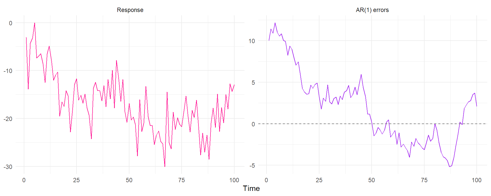
The errors start at \(\eta_1 = 10\) and drift slowly back towards zero (Figure 36). With \(\phi = 0.95\) they behave almost like a random walk, so the response wanders, even though it is a linear function of \(x\) plus noise.
Ordinary least squares
Click to toggle source code
a1 = lm(y ~ x)
summary(a1)
Call:
lm(formula = y ~ x)
Residuals:
Min 1Q Median 3Q Max
-8.4110 -3.2916 0.0579 2.6931 11.2852
Coefficients:
Estimate Std. Error t value Pr(>|t|)
(Intercept) 8.637 2.497 3.46 0.000803 ***
x -5.140 0.495 -10.38 < 2e-16 ***
---
Signif. codes: 0 '***' 0.001 '**' 0.01 '*' 0.05 '.' 0.1 ' ' 1
Residual standard error: 4.261 on 98 degrees of freedom
Multiple R-squared: 0.5238, Adjusted R-squared: 0.5189
F-statistic: 107.8 on 1 and 98 DF, p-value: < 2.2e-16Click to toggle source code
confint(a1) 2.5 % 97.5 %
(Intercept) 3.682495 13.59077
x -6.121981 -4.15716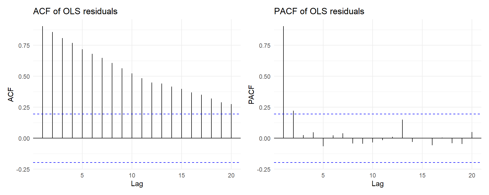
OLS gives a slope of -5.14 instead of \(-4\), and the 95% confidence interval (-6.12 to -4.16) misses the true value completely. OLS is unbiased on average but with errors this persistent one sample can land far from the truth. The standard error is calculated as if the errors were independent, so it is too small and OLS is overconfident. The residual ACF decays slowly and the PACF has a single large spike at lag 1 (Figure 37). This is indicative of AR(1) errors.
ARMAX: adding the lagged response
\[ y_t = \beta_0 + \beta_1 x_t + \phi y_{t-1} + e_t. \]
Click to toggle source code
y_ts = ts(y)
x_ts = ts(x)
arx1 = dynlm(y_ts ~ x_ts + L(y_ts, 1))
summary(arx1)
Time series regression with "ts" data:
Start = 2, End = 100
Call:
dynlm(formula = y_ts ~ x_ts + L(y_ts, 1))
Residuals:
Min 1Q Median 3Q Max
-5.8881 -1.7148 0.1317 1.5929 6.8288
Coefficients:
Estimate Std. Error t value Pr(>|t|)
(Intercept) 14.87839 1.56945 9.48 1.95e-15 ***
x_ts -4.50627 0.29577 -15.24 < 2e-16 ***
L(y_ts, 1) 0.55852 0.04114 13.58 < 2e-16 ***
---
Signif. codes: 0 '***' 0.001 '**' 0.01 '*' 0.05 '.' 0.1 ' ' 1
Residual standard error: 2.489 on 96 degrees of freedom
Multiple R-squared: 0.8321, Adjusted R-squared: 0.8286
F-statistic: 237.9 on 2 and 96 DF, p-value: < 2.2e-16Click to toggle source code
# Lagged response:
y_lag = c(NA, y[-length(y)])
The residual autocorrelation is much smaller but still present (Figure 38). The coefficient of \(x\) (-4.506) is closer to \(-4\), but it only measures the immediate effect of \(x\), since \(y_{t-1}\) carries part of the past effect of \(x\). If \(x\) increased by one unit permanently, the long-run effect would be \(\hat{\beta}_1/(1-\hat{\phi}) = -10.21\), which is far from the true \(-4\). Thus, the ARMAX model is misspecified. The data were generated with AR(1) errors, which also require the term \(-\phi\beta_1 x_{t-1}\).
Click to toggle source code
# Autoregressive distributed lag model (x_{t-1} included):
x_lag = c(NA, x[-length(x)])
adl = lm(y ~ y_lag + x + x_lag)
coef(adl)(Intercept) y_lag x x_lag
-0.1922132 0.9576004 -3.9691383 3.8473506 Click to toggle source code
c(coef_x_lag = unname(coef(adl)["x_lag"]),
minus_phi_times_beta = unname(-coef(adl)["y_lag"] * coef(adl)["x"])) coef_x_lag minus_phi_times_beta
3.847351 3.800848 The inclusion of \(x_{t-1}\) results in the autoregressive distributed lag model. Its coefficients approximately satisfy the “common factor” restriction \(\gamma = -\phi\beta_1\), where \(\gamma\) is the coefficient of \(x_{t-1}\). This is what the regression with AR(1) errors implies. Thus, the regression model with AR(1) errors is an ARMAX model that includes \(x_{t-1}\) with its coefficient restricted to \(-\phi \beta_1\).
Regression with AR(1) errors
Click to toggle source code
a2 = arima(y, order = c(1, 0, 0), xreg = x)
a2
Call:
arima(x = y, order = c(1, 0, 0), xreg = x)
Coefficients:
ar1 intercept x
0.9762 4.7905 -3.9967
s.e. 0.0188 3.2704 0.0830
sigma^2 estimated as 1.021: log likelihood = -144.46, aic = 296.92When we model the errors as an AR(1) process we obtain a slope of -3.997 with a standard error of 0.083. This is very close to the true value of \(-4\), and the standard error is much smaller when compared to OLS (0.495). The intercept is poorly estimated (4.79 instead of 1). Since \(\hat{\phi}\) is close to 1 the errors behave almost as a random walk. Therefore, the intercept and the level of the error process are difficult to separate. In this simulation the errors did not start at their mean of 0 but at \(\eta_1 = 10\). arima() estimates the model by maximum likelihood using the state-space form and the Kalman filter.
Transforming the variables
Equation 1 in the notes motivates a transformation that removes the serial correlation. Defining \(y_t^* = y_t - \phi y_{t-1}\) and \(x_t^* = x_t - \phi x_{t-1}\) gives
\[ y_t^* = \beta_0(1-\phi) + \beta_1 x_t^* + e_t, \]
where \(e_t\) is white noise, so the OLS assumptions hold for the transformed model. Since \(\phi\) is unknown, it is replaced by \(\hat{\phi}\), the lag 1 autocorrelation of the OLS residuals, which makes this a feasible two-step estimator.
Click to toggle source code
phi_hat = acf(resid(a1), plot = FALSE)$acf[2]
phi_hat[1] 0.9037115Click to toggle source code
y_star = y-phi_hat*y_lag
x_star = x-phi_hat*x_lag
a_star = lm(y_star ~ x_star)
summary(a_star)$coefficients Estimate Std. Error t value Pr(>|t|)
(Intercept) 0.202568 0.11196307 1.80924 7.351125e-02
x_star -3.992501 0.08782497 -45.45975 3.308591e-67The estimated slope (-3.993) is close to the true value of \(-4\), even though \(\hat{\phi} = 0.9\) underestimates \(\phi = 0.95\). However, the response is now \(y_t^*\) as opposed to \(y_t\), so \(\beta_1\) describes how \(y\) responds to \(x\) after removing the carried-over error. When \(\phi\) is close to 1 this is approximately the change in \(y\) for a change in \(x\). The intercept estimates \(\beta_0(1-\phi)\), not \(\beta_0\). Since the response differs, the AIC of this model cannot be compared with those of the other models.
Generalised least squares
Click to toggle source code
m_gls = gls(y ~ x, correlation = corAR1(), method = "ML")
summary(m_gls)$tTable Value Std.Error t-value p-value
(Intercept) 4.789836 3.2008467 1.496428 1.377559e-01
x -3.996669 0.0838432 -47.668376 1.315676e-69Click to toggle source code
coef(m_gls$modelStruct$corStruct, unconstrained = FALSE) # estimated phi Phi
0.9762058 gls() estimates the regression coefficients and the AR(1) parameter jointly by maximum likelihood. For a given \(\phi\), the coefficients are the GLS estimator from the notes,
\[ \hat{\boldsymbol{\beta}} = (Z'V^{-1}Z)^{-1}Z'V^{-1}\mathbf{y}, \qquad V_{ij} \propto \phi^{|i-j|}, \]
where \(Z\) is the design matrix and \(V\) is the correlation structure implied by AR(1) errors. Iterating between estimating \(\phi\) from the residuals and refitting with the updated \(V\) (feasible GLS) gives very similar estimates. The estimates match those from arima() because both fit the same model by maximum likelihood.
Minimising the independent SSE from first principles
For a regression with AR(1) errors, the independent errors are \(e_t = (y_t - \beta_0 - \beta_1 x_t) - \phi(y_{t-1} - \beta_0 - \beta_1 x_{t-1})\), so the parameters can be estimated by minimising \(\sum_{t=2}^{n} e_t^2\).
Click to toggle source code
# Sum of squared errors:
sse_ar1_err = function(par, y, x) {
b0 = par[1]
b1 = par[2]
phi = par[3]
eta = y-b0-b1*x # regression errors
e = eta[-1]-phi*eta[-length(eta)] # independent errors
sum(e^2)
}
fit_sse = optim(par = c(coef(a1), 0.5), fn = sse_ar1_err, y = y, x = x,
method = "BFGS", control = list(maxit = 1000))
# Fitting arima() for comparison:
a2_css = arima(y, order = c(1, 0, 0), xreg = x, method = "CSS")
kable(data.frame(
Method = c("My SSE + optim()", "arima(), CSS", "arima(), ML", "gls(), ML", "True value"),
Intercept = c(fit_sse$par[1], coef(a2_css)["intercept"], coef(a2)["intercept"],
coef(m_gls)[1], 1),
Slope = c(fit_sse$par[2], coef(a2_css)[3], coef(a2)[3], coef(m_gls)[2], -4),
phi = c(fit_sse$par[3], coef(a2_css)["ar1"], coef(a2)["ar1"],
coef(m_gls$modelStruct$corStruct, unconstrained = FALSE), 0.95)
), digits = 3, row.names = FALSE)| Method | Intercept | Slope | phi |
|---|---|---|---|
| My SSE + optim() | 1.134 | -3.993 | 0.956 |
| arima(), CSS | 1.134 | -3.993 | 0.956 |
| arima(), ML | 4.790 | -3.997 | 0.976 |
| gls(), ML | 4.790 | -3.997 | 0.976 |
| True value | 1.000 | -4.000 | 0.950 |
Minimising the sum of squared independent errors with optim() reproduces arima(method = "CSS") exactly, since both use the same conditional sum of squares criterion. All four methods agree closely on the slope and \(\phi\), but differ on the intercept. CSS conditions on the first observation, so the starting value \(\eta_1 = 10\) has no influence, and the intercept (1.134) is close to the true value of 1. Maximum likelihood (arima() and gls()) treats \(\eta_1\) as a draw from the stationary distribution with mean 0, so the intercept is pushed up to 4.790 to account for the high starting value.
Model comparison
Click to toggle source code
kable(data.frame(
Model = c("a1: OLS", "arx1: ARMAX", "a2: AR(1) errors"),
df = c(3, 4, 4),
AIC = c(AIC(a1), AIC(arx1), AIC(a2))
), digits = 1, row.names = FALSE)| Model | df | AIC |
|---|---|---|
| a1: OLS | 3 | 577.7 |
| arx1: ARMAX | 4 | 466.5 |
| a2: AR(1) errors | 4 | 296.9 |
The regression with AR(1) errors has the lowest AIC (296.9, compared with 466.5 for the ARMAX model and 577.7 for OLS). This is expected, since it matches the data-generating process. The differences in AIC are large so the rankings hold even though the comparison is only approximate. The ARMAX model is fitted to 99 observations, whereas OLS and the exact maximum likelihood fit from arima() use all 100. In addition, arima() evaluates the likelihood through the state-space representation, which is not identical to the Gaussian likelihood lm() computes for independent errors.
Forecasting with a regression with AR(1) errors
Forecasting \(y_{T+h}\) requires values of \(x_{T+h}\), which are not observed. Here \(x\) is assumed to remain at its sample mean for the next 10 periods. The \(h\)-step forecast is then
\[ \hat{y}_{T+h} = \hat{\beta}_0 + \hat{\beta}_1 x_{T+h} + \hat{\phi}^h \hat{\eta}_T, \]
so the error component decays geometrically from its last estimated value \(\hat{\eta}_T\) towards zero, and the forecasts converge to the regression line \(\hat{\beta}_0 + \hat{\beta}_1 \bar{x}\).
Click to toggle source code
x_future = rep(mean(x), 10)
fc_a2 = predict(a2, n.ahead = 10, newxreg = x_future)
fc_ex41 = data.frame(
t = 101:110,
fc = as.numeric(fc_a2$pred),
lower = as.numeric(fc_a2$pred - 1.96 * fc_a2$se),
upper = as.numeric(fc_a2$pred + 1.96 * fc_a2$se)
)
kable(fc_ex41, digits = 2)| t | fc | lower | upper |
|---|---|---|---|
| 101 | -16.76 | -18.74 | -14.78 |
| 102 | -16.72 | -19.49 | -13.95 |
| 103 | -16.68 | -20.03 | -13.33 |
| 104 | -16.64 | -20.47 | -12.82 |
| 105 | -16.61 | -20.83 | -12.38 |
| 106 | -16.57 | -21.14 | -11.99 |
| 107 | -16.53 | -21.42 | -11.65 |
| 108 | -16.50 | -21.66 | -11.33 |
| 109 | -16.46 | -21.88 | -11.05 |
| 110 | -16.43 | -22.08 | -10.78 |
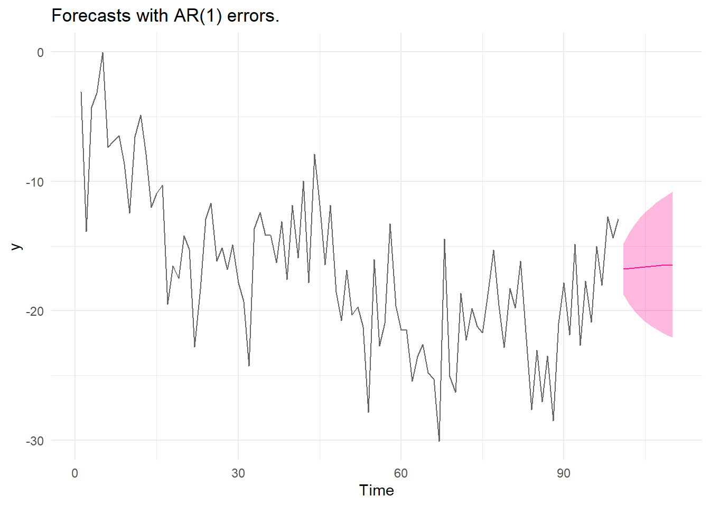
The prediction intervals widen quickly with the horizon (Figure 39). This is due to \(\hat{\phi}\) being close to 1, so the error process has long memory. The forecast variance \(\sigma^2(1 + \phi^2 + \dots + \phi^{2(h-1)})\) keeps growing. These intervals are conditional on the future values of \(x\) (assumed known). If \(x\) was forecast as well, they would underestimate the uncertainty.
State-Space Models
A state-space model has two equations: an observation equation that links what we observe to an unobserved state, and a state equation that describes how the state changes over time.
\[ \begin{aligned} \text{Observation:} \quad y_t &= F_t\theta_t + v_t, \qquad v_t \sim N(0, V) \\ \text{State:} \quad \theta_t &= G_t\theta_{t-1} + w_t, \qquad w_t \sim N(0, W) \\ \text{Prior:} \quad \theta_0 &\sim N(m_0, C_0) \end{aligned} \]
Writing other models in state-space form
| Model | State \(\theta_t\) | \(F_t\) | \(G_t\) | Noise |
|---|---|---|---|---|
| Local level (random walk plus noise) | \(\mu_t\) | \(1\) | \(1\) | \(V\), \(W\) |
| Local linear trend | \((\mu_t, \beta_t)'\) | \((1, 0)\) | \(\begin{pmatrix} 1 & 1 \\ 0 & 1 \end{pmatrix}\) | \(V\), \(W = \text{diag}(\sigma^2_\mu, \sigma^2_\beta)\) |
| AR(2) | \((y_t, y_{t-1})'\) | \((1, 0)\) | \(\begin{pmatrix} \phi_1 & \phi_2 \\ 1 & 0 \end{pmatrix}\) | \(V = 0\), \(W = \text{diag}(\sigma^2, 0)\) |
| ARMA(1,1) | \((y_t, \theta e_t)'\) | \((1, 0)\) | \(\begin{pmatrix} \phi & 1 \\ 0 & 0 \end{pmatrix}\) | \(V = 0\), \(w_t = (e_t, \theta e_t)'\) |
| SES / ETS(A,N,N) | \(\ell_t\) | \(1\) | \(1\) | one error: \(y_t = \ell_{t-1} + e_t\), \(\ell_t = \ell_{t-1} + \alpha e_t\) |
| Time-varying regression | \((a_t, b_t)'\) | \((1, z_t)\) | \(I_2\) | \(V\), \(W = \text{diag}(\sigma^2_a, \sigma^2_b)\) |
Table 13 shows that very different models fit into the same two equations. An ARMA model is a state-space model with no observation noise (\(V = 0\)), where the state stores the recent values that the model needs to remember, while the structural models have noise in both equations.
Exponential smoothing models (ETS) are state-space models with a single source of error (the same \(e_t\) drives the observation and the state), while the structural models in dlm have two independent sources of error (\(v_t\) and \(w_t\)).
State-space models vs ARIMA models
- Stationarity. ARIMA models need a stationary series (after differencing). State-space models do not: trend and seasonality are modelled directly as states that are allowed to change (random walks), so no differencing is needed.
- Modelling approach. ARIMA models describe how \(y_t\) depends on its own past and past shocks (a “black box” for the autocorrelation). Structural state-space models describe the components we believe generate the series (level, slope, season, regression effects), and each component can be estimated and plotted.
- Equivalence. Every ARIMA model can be written in state-space form (this is how
arima()computes the likelihood), and every linear structural model implies an ARIMA model for its differences. For example, the local level model implies \(\Delta y_t = w_t + v_t - v_{t-1}\), an MA(1), so it is an ARIMA(0,1,1). The linear growth model gives an ARIMA(0,2,2). - Practical advantages. Missing observations, time-varying coefficients and filtered/smoothed estimates of the components all come out of the Kalman filter naturally.
Dynamic linear models with dlm
A dynamic linear model (DLM) is a linear, Gaussian state-space model. “Dynamic” means that the state \(\theta_t\) (level, slope, seasonal effects, regression coefficients) is allowed to change over time.
Random walk plus noise
The local level model has \(F = G = 1\): the level follows a random walk and we observe it with noise.
Click to toggle source code
# Simulate from a random walk plus noise model:
rwpn = function(V = 0.8, W = 0.2, m0 = 0, C0 = 100, n = 100) {
y = numeric(n)
mu = numeric(n)
for (i in 1:n) {
if (i == 1) {
mu[i] = rnorm(1, m0, sqrt(C0)) # initial state from the prior
} else {
mu[i] = rnorm(1, mu[i - 1], sqrt(W)) # state equation
}
y[i] = rnorm(1, mu[i], sqrt(V)) # observation equation
}
return(list(y = y, mu = mu))
}
set.seed(10)
sim_rw = rwpn()
y_rw = sim_rw$yrnorm() takes a standard deviation
In the original prac code rnorm(1, m0, C0) uses \(C_0 = 100\) as a standard deviation, while the model treats \(V\), \(W\) and \(C_0\) as variances. This is why the original simulated series started around \(-11\). I used sqrt() so that the simulation matches the model that is fitted below.
Defining the model
Click to toggle source code
# Define the model through its matrices:
mod_rwpn = dlm(FF = 1, V = 0.8, GG = 1, W = 0.2, m0 = 0, C0 = 100)
mod_rwpn$FF
[,1]
[1,] 1
$V
[,1]
[1,] 0.8
$GG
[,1]
[1,] 1
$W
[,1]
[1,] 0.2
$m0
[1] 0
$C0
[,1]
[1,] 100Click to toggle source code
# Equivalent shortcut (dV and dW are the diagonal elements of V and W):
dlmModPoly(order = 1, dV = 0.8, dW = 0.2, C0 = 100)$FF
[,1]
[1,] 1
$V
[,1]
[1,] 0.8
$GG
[,1]
[1,] 1
$W
[,1]
[1,] 0.2
$m0
[1] 0
$C0
[,1]
[1,] 100order = 1 gives a random walk for the state (local level model) and order = 2 gives a random walk plus drift for the level (local linear trend). Individual matrices can be changed with the replacement functions:
Click to toggle source code
mod_copy = mod_rwpn
C0(mod_copy) = 80
C0(mod_copy) [,1]
[1,] 80Kalman filter and smoother
Click to toggle source code
filt_rw = dlmFilter(y_rw, mod_rwpn)
names(filt_rw)[1] "y" "mod" "m" "U.C" "D.C" "a" "U.R" "D.R" "f" Click to toggle source code
# Note: m has one more element than y (first element is m0)
length(filt_rw$m)[1] 101Click to toggle source code
# Filtered variances C_t (from SVD stored by dlm):
C_rw = unlist(dlmSvd2var(filt_rw$U.C, filt_rw$D.C))
# Kalman smoother:
smooth_rw = dlmSmooth(filt_rw)
S_rw = unlist(dlmSvd2var(smooth_rw$U.S, smooth_rw$D.S))dlmFilter() returns the filtered states m (\(\theta_t \mid y_{1:t} \sim N(m_t, C_t)\)), the one-step-ahead state predictions a (\(\theta_t \mid y_{1:t-1} \sim N(a_t, R_t)\)), the one-step-ahead forecasts of the observations f, and the variances in SVD form (U.C, D.C, U.R, D.R). dlmSvd2var() turns these back into variance matrices.
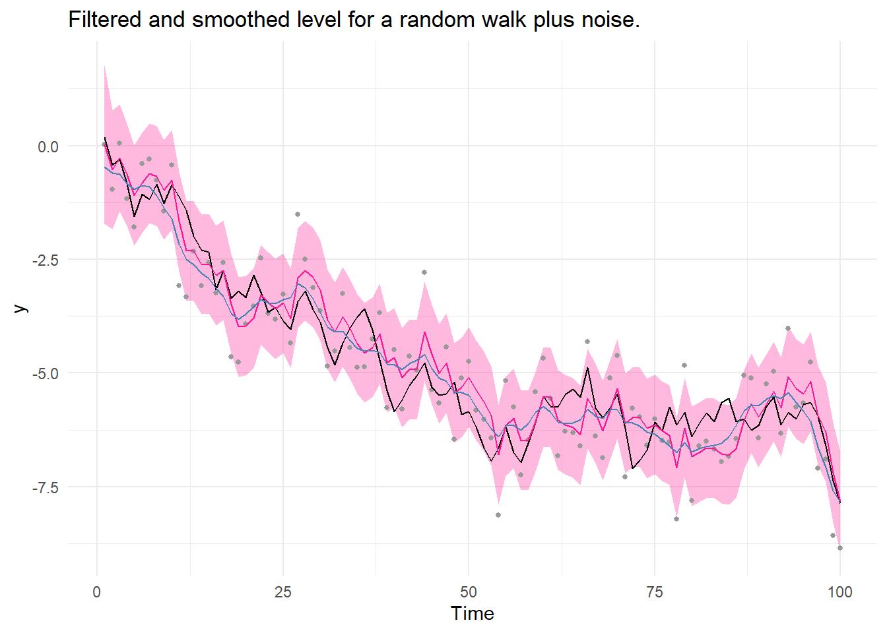
The filtered level (pink) only uses observations up to time \(t\), so it reacts to changes with a delay. The smoothed level (blue) also uses later observations, so it is smoother and closer to the true level (black) (Figure 40). The smoothed variances are smaller than the filtered ones (average 0.198 vs 0.319), except at the end of the series where they are the same: at \(t = T\) there is no future information to add.
Maximum likelihood
If \(V\) and \(W\) are unknown, the Kalman filter gives the likelihood through the one-step-ahead prediction errors, and dlmMLE() passes it to optim(). The variances are estimated on the log scale so they stay positive.
Click to toggle source code
# Function to build model from log parameters:
build_rw = function(par) {
dlmModPoly(order = 1, dV = exp(par[1]), dW = exp(par[2]))
}
# Maximise the likelihood:
fit_rw = dlmMLE(y_rw, parm = c(0, 0), build = build_rw, hessian = TRUE)
fit_rw$convergence # 0 = converged[1] 0Click to toggle source code
# Estimates with 95% CIs (log scale, then back-transformed):
se_log = sqrt(diag(solve(fit_rw$hessian)))
kable(data.frame(
Parameter = c("V", "W"),
True = c(0.8, 0.2),
Estimate = exp(fit_rw$par),
Lower = exp(fit_rw$par - 1.96 * se_log),
Upper = exp(fit_rw$par + 1.96 * se_log)
), digits = 3, row.names = FALSE)| Parameter | True | Estimate | Lower | Upper |
|---|---|---|---|---|
| V | 0.8 | 0.724 | 0.505 | 1.038 |
| W | 0.2 | 0.147 | 0.061 | 0.351 |
The confidence intervals are wide, especially for \(W\). With 100 observations it is hard to separate “the level moved” from “the observation was noisy”, because both create variation in \(y_t\). The signal-to-noise ratio \(W/V\) is what matters for the filter.
Forecasting
For a random walk plus noise model, the forecast is flat at the last filtered level (just like SES), and the uncertainty grows linearly with the horizon.
Click to toggle source code
mod_rw_fit = build_rw(fit_rw$par)
filt_rw_fit = dlmFilter(y_rw, mod_rw_fit)
fc_rw = dlmForecast(filt_rw_fit, nAhead = 10)
str(fc_rw, max.level = 1)List of 4
$ a: num [1:10, 1] -7.72 -7.72 -7.72 -7.72 -7.72 ...
$ R:List of 10
$ f: num [1:10, 1] -7.72 -7.72 -7.72 -7.72 -7.72 ...
$ Q:List of 10dlmForecast() returns forecasts of the state (a, with variances R) and of the observations (f, with variances Q). Note that \(Q_t = R_t + V\).

State interval vs prediction interval
The original prac plotted \(a_t \pm 1.96\sqrt{R_t}\). That is an interval for the future level, not for future observations. A prediction interval for \(y_{T+h}\) must use \(Q_t = R_t + V\), which also includes the observation noise. In Figure 41 the prediction interval is much wider.
Nile data: local level model
Click to toggle source code
# Read in data:
data(Nile)
# View(Nile)
# Local level model with unknown variances:
build_nile = function(par) {
dlmModPoly(order = 1, dV = exp(par[1]), dW = exp(par[2]))
}
fit_nile = dlmMLE(Nile, parm = c(log(10000), log(1000)), build = build_nile)
var_nile = exp(fit_nile$par)
names(var_nile) = c("V", "W")
var_nile V W
15099.795 1468.429 Click to toggle source code
mod_nile = build_nile(fit_nile$par)
filt_nile = dlmFilter(Nile, mod_nile)
smooth_nile = dlmSmooth(filt_nile)
fc_nile = dlmForecast(filt_nile, nAhead = 10)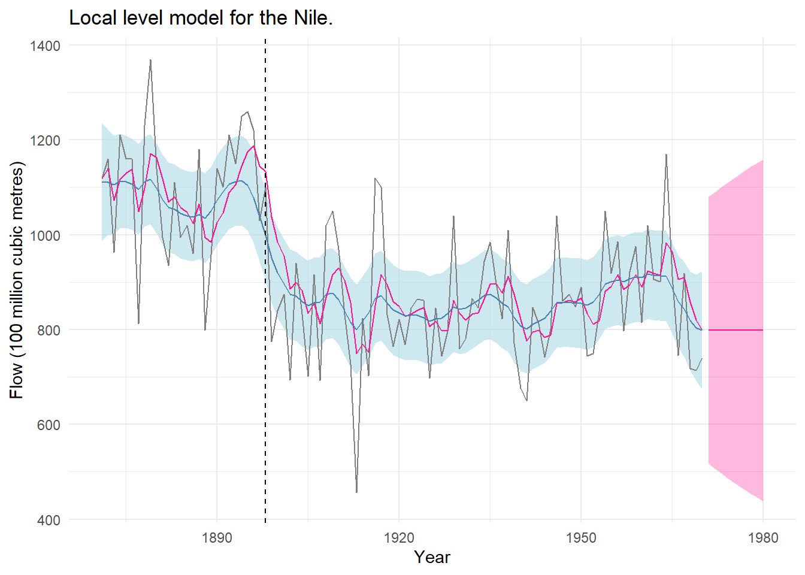
The estimated observation variance (\(\hat{V} = 1.51\times 10^{4}\)) is about \(10\) times larger than the level variance (\(\hat{W} = 1468\)), so the filter changes the level slowly and treats most year-to-year variation as noise. The smoothed level (Figure 42) shows the drop in flow around 1898 very clearly. Because the smoother uses future observations, it starts dropping before 1898, while the filtered level only reacts afterwards.

Click to toggle source code
Box.test(res_nile, lag = 10, type = "Ljung-Box", fitdf = 2)
Box-Ljung test
data: res_nile
X-squared = 13.643, df = 8, p-value = 0.09154The standardised prediction errors are the model’s residuals. If the model is adequate they should look like independent \(N(0,1)\) values. Here the ACF and the Ljung-Box test (p = 0.092) are used to check for leftover autocorrelation (Figure 43).
Nile data: local linear trend model
dlmModPoly() with its default order = 2 gives the local linear trend (linear growth) model, which adds a slope that can also change over time.
Click to toggle source code
build_llt = function(par) {
dlmModPoly(order = 2, dV = exp(par[1]), dW = exp(par[2:3]))
}
fit_llt = dlmMLE(Nile, parm = c(log(15000), log(1000), log(10)), build = build_llt)
var_llt = exp(fit_llt$par)
names(var_llt) = c("V", "W_level", "W_slope")
var_llt V W_level W_slope
1.467938e+04 1.751855e+03 7.364238e-06 Click to toggle source code
# Compare with local level model (dlmMLE returns -logL):
kable(data.frame(
Model = c("Local level", "Local linear trend"),
Parameters = c(2, 3),
neg_loglik = c(fit_nile$value, fit_llt$value),
AIC = c(2 * fit_nile$value + 2 * 2, 2 * fit_llt$value + 2 * 3)
), digits = 2, row.names = FALSE)| Model | Parameters | neg_loglik | AIC |
|---|---|---|---|
| Local level | 2 | 549.69 | 1103.38 |
| Local linear trend | 3 | 556.00 | 1118.00 |
The estimated slope variance is very small, so the slope hardly changes, and adding it does not improve the fit enough to justify the extra parameter. This makes sense, since the Nile has a level shift, not a trend. (The comparison is only approximate, because the two models have a different number of diffuse initial states, which affects the first few likelihood terms.)
Missing observations
Click to toggle source code
# Remove 1910-1915:
nile_na = Nile
nile_na[40:45] = NA
fit_na = dlmMLE(nile_na, parm = c(log(10000), log(1000)), build = build_nile)
filt_na = dlmFilter(nile_na, build_nile(fit_na$par))
C_na = unlist(dlmSvd2var(filt_na$U.C, filt_na$D.C))
C_full = unlist(dlmSvd2var(filt_nile$U.C, filt_nile$D.C))
When an observation is missing there is nothing to update with: the Kalman gain is zero, so \(m_t = a_t\) and \(C_t = R_t = C_{t-1} + W\). The filtered level stays flat through the gap and the interval widens by \(W\) every year (Figure 44). As soon as observations return, the interval shrinks back.
Seasonality: basic structural model for CO\(_2\)
The basic structural model adds 11 seasonal states (12 monthly effects that sum to zero) to the local linear trend:
\[ \begin{aligned} y_t &= \mu_t + s_t + v_t, & v_t \sim N(0, V) \\ \mu_t &= \mu_{t-1} + \beta_{t-1} + w_t, & w_t \sim N(0, \sigma^2_w) \\ \beta_t &= \beta_{t-1} + \gamma_t, & \gamma_t \sim N(0, \sigma^2_\gamma) \\ s_t &= -\sum_{j=1}^{S-1} s_{t-j} + \delta_t, & \delta_t \sim N(0, \sigma^2_\delta) \end{aligned} \]

Figure 45 shows a steady upward trend and a regular yearly cycle with a constant amplitude (additive seasonality).
Click to toggle source code
# Structure: 2 trend states + 11 seasonal states = 13 states:
m_s1 = dlmModPoly() + dlmModSeas(12)
dim(m_s1$GG)[1] 13 13Click to toggle source code
diag(W(m_s1)) # default: level var 0, slope var 1, one seasonal var 1 [1] 0 1 1 0 0 0 0 0 0 0 0 0 0Only three states get noise: the level, the slope and the current seasonal effect. The other seasonal states are just the previous effects shifted along.
Click to toggle source code
# Function to build model from log variances:
lik_s1 = function(p) {
mod = dlmModPoly() + dlmModSeas(12)
Wm = W(mod)
diag(Wm)[1:3] = exp(p[1:3]) # level, slope and seasonal variances
W(mod) = Wm
V(mod) = exp(p[4]) # observation variance
return(mod)
}
mle_s1 = dlmMLE(co2, parm = c(0, 0, 0, 0), build = lik_s1)Click to toggle source code
mle_s1$convergence[1] 0Click to toggle source code
var_s1 = exp(mle_s1$par)
names(var_s1) = c("level", "slope", "seasonal", "observation")
signif(var_s1, 3) level slope seasonal observation
4.68e-02 3.94e-06 2.25e-05 2.07e-02 Click to toggle source code
fit_s1 = lik_s1(mle_s1$par)
filt_s1 = dlmFilter(co2, fit_s1)The slope and seasonal variances are tiny compared to the level and observation variances. The trend and the seasonal pattern change very slowly, while the level absorbs the short-term movements.
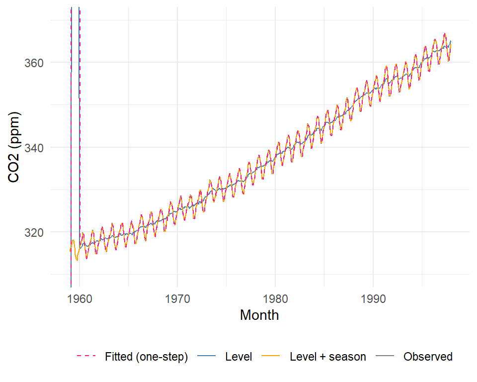
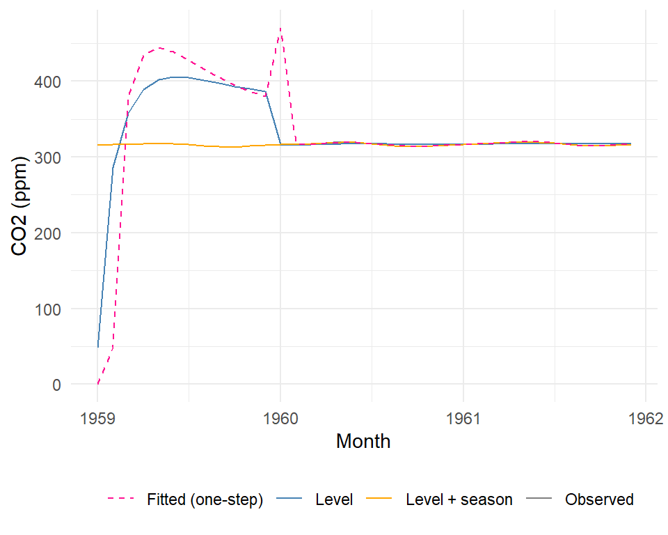
The prior is very vague (\(m_0 = 0\), \(C_0 = 10^7 I\) for all 13 states). After the first observation the filter knows that level + season ≈ 315, but it cannot tell how much of that is level and how much is the January effect. Until it has seen roughly a year of data, the seasonal effects are not identified, so the filtered level and seasonal states jump around wildly (right panel of Figure 46). After about a year the filter has learned the seasonal pattern and the level settles down.
The one-step-ahead forecasts filt_s1$f are the fitted values. After the first year they lie almost on top of the observations.
Forecasts for the next five years
Click to toggle source code
fc_s1 = dlmForecast(filt_s1, nAhead = 60)
co2_fc_df = data.frame(
month = as.numeric(tail(time(co2), 1)) + (1:60) / 12,
f = as.numeric(fc_s1$f),
lo = as.numeric(fc_s1$f) - 1.96 * sqrt(unlist(fc_s1$Q)),
hi = as.numeric(fc_s1$f) + 1.96 * sqrt(unlist(fc_s1$Q))
)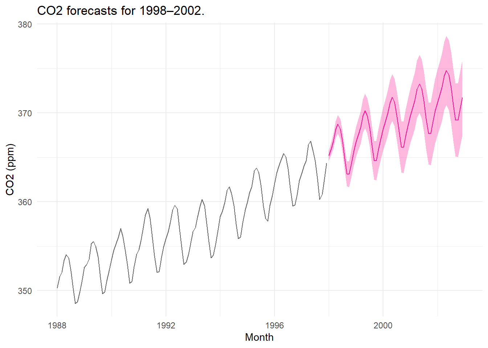
The forecasts in Figure 47 continue the upward trend and repeat the seasonal pattern, with intervals that widen over the five years. This can be explained by the uncertainty about the level and slope accumulating.
Seasonality with trigonometric terms
Instead of 11 seasonal states, the seasonal pattern can be built from sine and cosine waves (harmonics). The \(j\)th harmonic has frequency \(\omega_j = 2\pi j / s\) and needs two states. With \(q\) harmonics there are \(2q\) seasonal states, so \(q = 1\) gives a pure sine-shaped season with only 2 states. This links directly to the harmonics in Spectral Analysis in Section 1.
Click to toggle source code
# Check the structure for q = 1:
m_trig = dlmModPoly() + dlmModTrig(s = 12, q = 1)
m_trig$GG [,1] [,2] [,3] [,4]
[1,] 1 1 0.0000000 0.0000000
[2,] 0 1 0.0000000 0.0000000
[3,] 0 0 0.8660254 0.5000000
[4,] 0 0 -0.5000000 0.8660254The \(2 \times 2\) block in GG rotates the harmonic by \(\omega_1 = 2\pi/12\) each month (\(\cos(\pi/6) = 0.866\), \(\sin(\pi/6) = 0.5\)).
Click to toggle source code
# Function to build model with q harmonics (seasonal states share one variance):
build_trig = function(q) {
function(p) {
mod = dlmModPoly() + dlmModTrig(s = 12, q = q)
k = nrow(mod$GG)
Wm = W(mod)
diag(Wm) = c(exp(p[1]), exp(p[2]), rep(exp(p[3]), k - 2))
W(mod) = Wm
V(mod) = exp(p[4])
return(mod)
}
}
# Fit q = 1, 2, 3:
fits_trig = lapply(1:3, function(q) dlmMLE(co2, parm = c(0, 0, 0, 0), build = build_trig(q)))Click to toggle source code
trig_tab = data.frame(
Model = c("dlmModSeas (11 seasonal states)", paste0("Trigonometric, q = ", 1:3)),
Seasonal_states = c(11, 2 * (1:3)),
neg_loglik = c(mle_s1$value, sapply(fits_trig, function(f) f$value))
)
trig_tab$AIC = 2 * trig_tab$neg_loglik + 2 * 4 # 4 variance parameters in each model
kable(trig_tab, digits = 1, row.names = FALSE)| Model | Seasonal_states | neg_loglik | AIC |
|---|---|---|---|
| dlmModSeas (11 seasonal states) | 11 | -204.3 | -400.5 |
| Trigonometric, q = 1 | 2 | 64.5 | 136.9 |
| Trigonometric, q = 2 | 4 | -253.1 | -498.1 |
| Trigonometric, q = 3 | 6 | -252.1 | -496.1 |
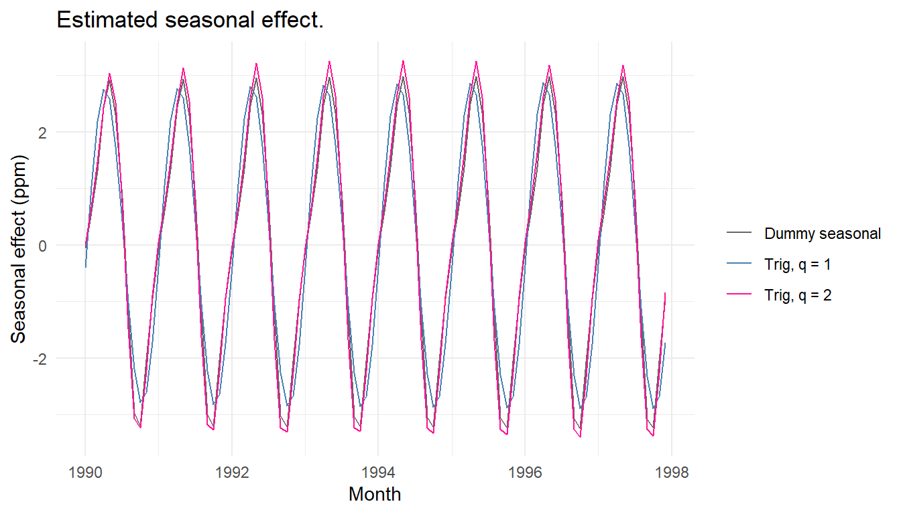
The CO\(_2\) seasonal cycle is not a perfect sine wave: concentrations rise slowly over the northern winter and fall quickly during the growing season. One harmonic forces a symmetric shape, while the second harmonic lets the peak and trough be asymmetric (Figure 48). The table shows by how much the likelihood improves when harmonics are added. Every model has the same four variance parameters, so the AIC comparison here is effectively a likelihood comparison (with the same caveat about diffuse initial states as before).
Constant seasonal effect, and the link to harmonic regression
Setting the seasonal variance to zero makes the seasonal pattern constant over time (the harmonics still rotate, but their amplitudes no longer change).
Click to toggle source code
build_trig_const = function(q) {
function(p) {
mod = dlmModPoly() + dlmModTrig(s = 12, q = q)
k = nrow(mod$GG)
Wm = W(mod)
diag(Wm) = c(exp(p[1]), exp(p[2]), rep(0, k - 2)) # no noise in the seasonal states
W(mod) = Wm
V(mod) = exp(p[3])
return(mod)
}
}
fit_const = dlmMLE(co2, parm = c(0, 0, 0), build = build_trig_const(2))
c(neg_loglik_constant = fit_const$value, neg_loglik_changing = fits_trig[[2]]$value)neg_loglik_constant neg_loglik_changing
-231.4977 -253.0683 If the level and slope variances are also zero, every state is deterministic and the model becomes a linear regression with a linear trend and harmonic terms:
\[ y_t = \beta_0 + \beta_1 t + \sum_{j=1}^{2}\left[a_j \cos(\omega_j t) + b_j \sin(\omega_j t)\right] + v_t. \]
Click to toggle source code
tt = 1:length(co2)
# Harmonic regression:
lm_harm = lm(co2 ~ tt + sin(2 * pi * tt / 12) + cos(2 * pi * tt / 12) +
sin(4 * pi * tt / 12) + cos(4 * pi * tt / 12))
# Same model as a DLM with all state variances = 0:
mod_det = dlmModPoly(order = 2, dV = 1, dW = c(0, 0)) + dlmModTrig(s = 12, q = 2, dV = 0, dW = 0)
filt_det = dlmFilter(co2, mod_det)
m_T = filt_det$m[length(co2) + 1, ]
kable(data.frame(
Quantity = c("Slope", "Fitted value at the last month"),
lm = c(coef(lm_harm)["tt"], fitted(lm_harm)[length(co2)]),
dlm = c(m_T[2], sum(mod_det$FF * m_T)),
row.names = NULL
), digits = 5, row.names = FALSE)| Quantity | lm | dlm |
|---|---|---|
| Slope | 0.10921 | 0.10921 |
| Fitted value at the last month | 361.59873 | 361.59873 |
The Kalman filter with a vague prior and no state noise gives the same slope and the same fitted value as lm(): the filter is just computing least squares recursively.

The residuals of the harmonic regression are strongly autocorrelated (Figure 49): a straight line and a fixed seasonal pattern do not describe 39 years of CO\(_2\) well. This is the main argument for the dynamic (state-space) version, where the level, slope and seasonal pattern can drift.
The Kalman Filter
The Kalman filter from first principles
The function below implements the three steps for a univariate observation and a state of any dimension. \(F_t\) and \(G_t\) can be given either as fixed matrices or as functions of \(t\) (for time-varying models), and missing values (NA) are handled by skipping the update. The output is stored the same way as in dlmFilter(): row 1 of m (and element 1 of C) is the prior at time 0.
Click to toggle source code
# Function to code the Kalman filter from first principles:
kalman_filter = function(y, FF, GG, V, W, m0, C0) {
n = length(y)
p = length(m0)
# Define F_t and G_t:
get_F = if (is.function(FF)) FF else function(t) FF
get_G = if (is.function(GG)) GG else function(t) GG
a = matrix(NA, n, p) # prior means
R = vector("list", n)
m = matrix(NA, n + 1, p) # posterior means
C = vector("list", n + 1)
f = Q = e = rep(NA, n) # forecasts
m[1, ] = m0
C[[1]] = as.matrix(C0)
loglik = 0
for (t in 1:n) {
Ft = matrix(get_F(t), nrow = 1)
Gt = as.matrix(get_G(t))
# 1. Predict the state:
a[t, ] = Gt %*% m[t, ]
R[[t]] = Gt %*% C[[t]] %*% t(Gt) + W
# 2. Predict the observation:
f[t] = drop(Ft %*% a[t, ])
Q[t] = drop(Ft %*% R[[t]] %*% t(Ft)) + V
# 3. Update with y_t:
if (is.na(y[t])) {
# No observation = no update
m[t + 1, ] = a[t, ]
C[[t + 1]] = R[[t]]
} else {
e[t] = y[t] - f[t] # one-step-ahead prediction error
K = R[[t]] %*% t(Ft) / Q[t] # Kalman gain
m[t + 1, ] = a[t, ] + drop(K) * e[t]
C[[t + 1]] = R[[t]] - K %*% Ft %*% R[[t]]
loglik = loglik + dnorm(y[t], f[t], sqrt(Q[t]), log = TRUE)
}
}
list(m = m, C = C, a = a, R = R, f = f, Q = Q, e = e, loglik = loglik)
}Click to toggle source code
# Function to code the Kalman smoother from first principles:
kalman_smoother = function(kf, GG) {
n = nrow(kf$a)
p = ncol(kf$a)
get_G = if (is.function(GG)) GG else function(t) GG
s = matrix(NA, n + 1, p) # smoothed means
S = vector("list", n + 1)
# At last time point smoothed:
s[n + 1, ] = kf$m[n + 1, ]
S[[n + 1]] = kf$C[[n + 1]]
# Backwards recursion:
for (t in n:1) {
Gt = as.matrix(get_G(t))
J = kf$C[[t]] %*% t(Gt) %*% solve(kf$R[[t]]) # smoother gain
s[t, ] = kf$m[t, ] + J %*% (s[t + 1, ] - kf$a[t, ])
S[[t]] = kf$C[[t]] + J %*% (S[[t + 1]] - kf$R[[t]]) %*% t(J)
}
list(s = s, S = S)
}
Indexing
\(G_t\) is used in the prediction step for \(\theta_t\) (moving from \(t-1\) to \(t\)), and \(F_t\) is used to predict \(y_t\) from \(\theta_t\). Using \(G_{t-1}\) or \(F_{t-1}\) by mistake is easy and gives wrong results that still look reasonable. The extra row for time 0 in m is another place where off-by-one errors happen.
Checking my filter against dlm: the Nile data
I maximise my log-likelihood over \(\log V\) and \(\log W\) with optim(), using the same vague prior as dlmModPoly() (\(m_0 = 0\), \(C_0 = 10^7\)).
Click to toggle source code
# Function to calculate negative log-likelihood of local level model:
nile_nll = function(par) {
-kalman_filter(Nile, FF = 1, GG = 1, V = exp(par[1]), W = exp(par[2]),
m0 = 0, C0 = 1e7)$loglik
}
fit_own_nile = optim(par = c(log(10000), log(1000)), fn = nile_nll,
method = "BFGS", hessian = TRUE)
V_own = exp(fit_own_nile$par[1])
W_own = exp(fit_own_nile$par[2])
# 95% CIs from Hessian:
se_own = sqrt(diag(solve(fit_own_nile$hessian)))
kable(data.frame(
Parameter = c("V", "W"),
`My filter + optim()` = c(V_own, W_own),
Lower = exp(fit_own_nile$par - 1.96 * se_own),
Upper = exp(fit_own_nile$par + 1.96 * se_own),
`dlmMLE()` = var_nile,
check.names = FALSE
), digits = 1, row.names = FALSE)| Parameter | My filter + optim() | Lower | Upper | dlmMLE() |
|---|---|---|---|---|
| V | 15100.0 | 10037.6 | 22715.6 | 15099.8 |
| W | 1468.4 | 265.9 | 8108.2 | 1468.4 |
My filter and dlmMLE() give the same estimates (\(\hat{V} \approx 1.51\times 10^{4}\), \(\hat{W} \approx 1468\)), which are also the values reported for the Nile local level model by Durbin and Koopman (2012).
Click to toggle source code
# Own filter and smoother at own estimates:
kf_nile = kalman_filter(Nile, FF = 1, GG = 1, V = V_own, W = W_own, m0 = 0, C0 = 1e7)
ks_nile = kalman_smoother(kf_nile, GG = 1)
# dlm with the same parameters:
mod_check = dlmModPoly(order = 1, dV = V_own, dW = W_own)
filt_check = dlmFilter(Nile, mod_check)
smooth_check = dlmSmooth(filt_check)
# Forecasts: append 10 NAs to series and run own filter again:
kf_fc = kalman_filter(c(Nile, rep(NA, 10)), FF = 1, GG = 1, V = V_own, W = W_own,
m0 = 0, C0 = 1e7)
fc_check = dlmForecast(filt_check, nAhead = 10)
# Missing values (1910-1915 removed, as above):
kf_na = kalman_filter(nile_na, FF = 1, GG = 1, V = V_own, W = W_own, m0 = 0, C0 = 1e7)
filt_na_check = dlmFilter(nile_na, mod_check)
diffs = c(
max(abs(kf_nile$m[, 1] - as.numeric(filt_check$m))),
max(abs(unlist(kf_nile$C) - unlist(dlmSvd2var(filt_check$U.C, filt_check$D.C)))),
max(abs(ks_nile$s[, 1] - as.numeric(smooth_check$s))),
max(abs(unlist(ks_nile$S) - unlist(dlmSvd2var(smooth_check$U.S, smooth_check$D.S)))),
max(abs(kf_fc$f[101:110] - as.numeric(fc_check$f))),
max(abs(kf_fc$Q[101:110] - unlist(fc_check$Q))),
max(abs(kf_na$m[, 1] - as.numeric(filt_na_check$m))))
kable(data.frame(
Check = c("Filtered means $m_t$",
"Filtered variances $C_t$",
"Smoothed means $s_t$",
"Smoothed variances $S_t$",
"Forecasts $f_{T+h}$, $h = 1, \\dots, 10$",
"Forecast variances $Q_{T+h}$, $h = 1, \\dots, 10$",
"Filtered means $m_t$ with missing values"),
`Largest absolute difference` = formatC(diffs, format = "e", digits = 2),
check.names = FALSE
), row.names = FALSE, escape = FALSE, align = "lr")| Check | Largest absolute difference |
|---|---|
| Filtered means \(m_t\) | 4.55e-13 |
| Filtered variances \(C_t\) | 1.86e-09 |
| Smoothed means \(s_t\) | 4.55e-13 |
| Smoothed variances \(S_t\) | 1.86e-09 |
| Forecasts \(f_{T+h}\), \(h = 1, \dots, 10\) | 0.00e+00 |
| Forecast variances \(Q_{T+h}\), \(h = 1, \dots, 10\) | 3.64e-12 |
| Filtered means \(m_t\) with missing values | 4.55e-13 |
Click to toggle source code
# dlmLL() returns -log L without the constant -(n/2) log(2*pi):
ll_dlm = -dlmLL(Nile, mod_check)
kable(data.frame(
Quantity = c("$\\log L$ (own filter)",
"$-\\texttt{dlmLL()}$",
"Difference",
"$-\\frac{n}{2}\\log(2\\pi)$"),
Value = c(kf_nile$loglik, ll_dlm, kf_nile$loglik - ll_dlm,
-length(Nile) / 2 * log(2 * pi))
), digits = 4, row.names = FALSE, escape = FALSE)| Quantity | Value |
|---|---|
| \(\log L\) (own filter) | -641.5856 |
| \(-\texttt{dlmLL()}\) | -549.6918 |
| Difference | -91.8939 |
| \(-\frac{n}{2}\log(2\pi)\) | -91.8939 |
All differences in Table 14 are at the level of floating-point rounding error, so my filter and smoother reproduce dlmFilter(), dlmSmooth() and dlmForecast() to numerical precision, including the filtered means with missing values and the forecasts obtained by appending NAs. The two log-likelihoods in Table 15 differ only by the constant \(-\frac{n}{2}\log(2\pi)\), which does not depend on the parameters, so both are maximised at the same values of \(V\) and \(W\).
The local level checks are all scalar, so they cannot detect matrix mistakes such as using \(G_t' C_{t-1} G_t\) instead of \(G_t C_{t-1} G_t'\). I therefore repeated the check for the local linear trend model, where \(\theta_t = (\mu_t, \beta_t)'\) and \(G = \begin{pmatrix} 1 & 1 \\ 0 & 1 \end{pmatrix}\) is not symmetric, using the variances estimated earlier:
Click to toggle source code
G_llt = matrix(c(1, 0, 1, 1), 2, 2) # [1 1; 0 1]
kf_llt = kalman_filter(Nile, FF = c(1, 0), GG = G_llt,
V = var_llt["V"], W = diag(var_llt[c("W_level", "W_slope")]),
m0 = c(0, 0), C0 = diag(1e7, 2))
filt_llt = dlmFilter(Nile, build_llt(fit_llt$par))
# Largest difference between own and dlm filtered states:
diff_llt = max(abs(kf_llt$m - filt_llt$m))
diff_llt[1] 2.285105e-11The largest difference in the filtered states is 2.3e-11, so the matrix version of the filter also matches dlmFilter().
Topic exploration: exponential smoothing is a Kalman filter
Question: how is simple exponential smoothing related to the Kalman filter for the local level model?
For the local level model (\(F = G = 1\)), the update step is
\[ m_t = m_{t-1} + K_t(y_t - m_{t-1}), \]
which is exactly the error-correction form of SES, \(\ell_t = \ell_{t-1} + \alpha(y_t - \ell_{t-1})\), with a time-varying \(\alpha = K_t\). The recursions for \(R_t\), \(C_t\) and \(K_t\) do not involve \(y_t\), so \(K_t\) is a fixed sequence that can be computed before seeing any data, and for the local level model it converges to a steady state. Setting \(C_t = C_{t-1} = C\) in \(R_t = C_{t-1} + W\), \(K_t = R_t/(R_t + V)\) and \(C_t = (1 - K_t)R_t\) and solving gives
\[ K_\infty = \frac{-q + \sqrt{q^2 + 4q}}{2}, \qquad q = \frac{W}{V} \ (\text{the signal-to-noise ratio}). \]
\(K_\infty\) increases from 0 to 1 as \(q\) increases. So, after a few observations, the Kalman filter for the local level model is SES with \(\alpha = K_\infty\). The local level model also implies an ARIMA(0,1,1) for \(y_t\) (with \(\theta = K_\infty - 1 \in (-1, 0)\)), and the ARIMA(0,1,1) forecast is SES with \(\alpha = 1 + \theta\). Table 16 compares the steady-state gain with the gain from my filter, the ARIMA(0,1,1) estimate and the ses() estimate for the Nile data:
Click to toggle source code
q_nile = W_own / V_own
K_inf = (-q_nile + sqrt(q_nile^2 + 4 * q_nile)) / 2
# Kalman gain at each time point from own filter (F = 1, so K_t = R_t / Q_t):
K_t = unlist(kf_nile$R) / kf_nile$Q
# SES and ARIMA(0,1,1) fitted to the same data:
ses_nile = ses(Nile)
arima_nile = Arima(Nile, order = c(0, 1, 1))
kable(data.frame(
Quantity = c("Steady-state Kalman gain $K_\\infty$ (from $\\hat{V}$ and $\\hat{W}$)",
"Kalman gain $K_{100}$ from my filter",
"$1 + \\hat{\\theta}$ from ARIMA(0,1,1)",
"$\\hat{\\alpha}$ from `ses()`"),
Value = c(K_inf, K_t[100], 1 + coef(arima_nile)["ma1"], ses_nile$model$par["alpha"])
), digits = 4, row.names = FALSE, escape = FALSE)| Quantity | Value |
|---|---|
| Steady-state Kalman gain \(K_\infty\) (from \(\hat{V}\) and \(\hat{W}\)) | 0.2670 |
| Kalman gain \(K_{100}\) from my filter | 0.2670 |
| \(1 + \hat{\theta}\) from ARIMA(0,1,1) | 0.2671 |
\(\hat{\alpha}\) from ses() |
0.2457 |
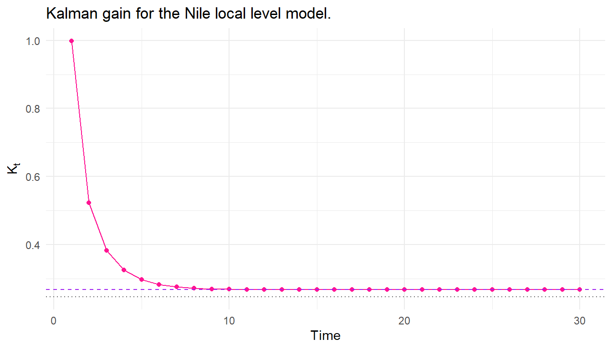
ses().The Kalman gain starts close to 1 (the vague prior means the first observation gets almost all the weight) and settles at \(K_\infty \approx 0.267\) within about ten years (Figure 50). \(1 + \hat{\theta} = 0.267\) from the ARIMA(0,1,1) is almost identical, because the local level model is an ARIMA(0,1,1) with \(\theta\) restricted to \((-1, 0)\), and both are fitted by maximum likelihood. The SES estimate is close but smaller (\(\hat{\alpha} = 0.246\)). The difference comes from how the parameters are estimated: ses() fits the single-source-of-error model ETS(A,N,N) and estimates \(\ell_0\) as a parameter, while the local level model has two independent errors and a vague prior on the initial level. With the same \(\alpha\) the three approaches would give identical forecasts once the filter has reached its steady state. With the estimated values the forecasts differ only slightly.
This gives the smoothing parameter \(\alpha\) a clear meaning: it is determined by the signal-to-noise ratio \(q = W/V\). A noisy series with a slowly moving level (small \(q\), like the Nile) gives a small \(\alpha\), so the forecast averages over many years. A series whose level moves a lot compared to the noise (like the oil data in Question 2) gives \(\alpha\) close to 1, so the forecast is essentially the last observation.
Tutorial: State-space models and the Kalman filter
Question 1: Simulation and a Kalman filter from first principles
\[ \begin{aligned} y_t &= F_t\theta_t + v_t, \qquad v_t \sim N(0, V = 2) \\ \theta_t &= G_t\theta_{t-1} + w_t, \qquad w_t \sim N(0, W = 1) \\ \theta_0 &\sim N(0, 1) \end{aligned} \]
with \(G_t = \frac{1}{2}\sin\left(\frac{\pi}{2}[2t+1]\right) = \frac{(-1)^t}{2}\) (since \(\sin(\pi t + \pi/2) = \cos(\pi t) = (-1)^t\)), and \(F_t \sim N(1, 0.2^2)\) rounded to one decimal, playing the role of an explanatory variable.
Because \(G_t\) alternates in sign, half of the previous state carries over with a flipped sign every step. This creates the cyclical (zig-zag) behaviour in \(\theta_t\).
Click to toggle source code
set.seed(42)
n_kf = 100
h_kf = 5
N_kf = n_kf + h_kf
V_true = 2
W_true = 1
# Time-varying system matrices (F_t also needed for forecast period):
FF_t = round(rnorm(N_kf, 1, 0.2), 1)
GG_t = (-1)^(1:N_kf) / 2
# Simulate the states and observations:
theta_kf = numeric(N_kf)
y_kf = numeric(N_kf)
theta_prev = rnorm(1, 0, 1) # theta_0
for (t in 1:N_kf) {
theta_kf[t] = GG_t[t] * theta_prev + rnorm(1, 0, sqrt(W_true)) # state equation
y_kf[t] = FF_t[t] * theta_kf[t] + rnorm(1, 0, sqrt(V_true)) # observation equation
theta_prev = theta_kf[t]
}
# Observed series (last 5 values held out to check forecasts):
y_obs = c(y_kf[1:n_kf], rep(NA, h_kf))Parameter estimation
I use my kalman_filter() from above, with \(F_t\) and \(G_t\) passed as functions of \(t\). The likelihood is maximised over \(\log V\) and \(\log W\). The 5 NAs at the end do not contribute to the likelihood.
Click to toggle source code
# Function to calculate negative log-likelihood from log variances:
negll = function(parm, y, FF, GG) {
-kalman_filter(y, FF = function(t) FF[t], GG = function(t) GG[t],
V = exp(parm[1]), W = exp(parm[2]), m0 = 0, C0 = 1)$loglik
}
fit_kf = optim(par = c(0, 0), fn = negll, y = y_obs, FF = FF_t, GG = GG_t,
method = "BFGS", hessian = TRUE)
se_kf = sqrt(diag(solve(fit_kf$hessian)))
kable(data.frame(
Parameter = c("V", "W"),
True = c(V_true, W_true),
Estimate = exp(fit_kf$par),
Lower = exp(fit_kf$par - 1.96 * se_kf),
Upper = exp(fit_kf$par + 1.96 * se_kf)
), digits = 3, row.names = FALSE)| Parameter | True | Estimate | Lower | Upper |
|---|---|---|---|---|
| V | 2 | 2.105 | 1.334 | 3.321 |
| W | 1 | 0.459 | 0.111 | 1.902 |
Click to toggle source code
V_hat = exp(fit_kf$par[1])
W_hat = exp(fit_kf$par[2])
kf_out = kalman_filter(y_obs, FF = function(t) FF_t[t], GG = function(t) GG_t[t],
V = V_hat, W = W_hat, m0 = 0, C0 = 1)
# Filtered states and variances (without time-0 row):
m_kf = kf_out$m[-1, 1]
C_kf = unlist(kf_out$C[-1])Both true values lie inside their 95% intervals (\(\hat{V} = 2.1\) and \(\hat{W} = 0.46\)), but the intervals are wide, especially for \(W\), whose upper limit is more than ten times its lower limit. The two variances are not easy to separate. Since \(|G_t| = 1/2\), the state forgets its past quickly, so \(\theta_t\) is close to white noise and \(y_t\) looks like noise with variance \(F_t^2\,\text{Var}(\theta_t) + V\). The changing \(F_t\) helps a little, because it scales the state part but not the observation noise, but the confidence intervals are still wide.
Check against dlm. dlm allows time-varying matrices through JFF, JGG and X: the entries of JFF/JGG say which column of X holds the value at each time.
Click to toggle source code
mod_tv = dlm(FF = matrix(1), V = matrix(V_hat), GG = matrix(1), W = matrix(W_hat),
m0 = 0, C0 = matrix(1),
JFF = matrix(1), JGG = matrix(2), X = cbind(FF_t, GG_t))
filt_tv = dlmFilter(y_obs, mod_tv)
# Largest difference between own and dlm filtered states:
max(abs(as.numeric(dropFirst(filt_tv$m)) - m_kf))[1] 3.885781e-16My Kalman filter gives the same filtered states as dlmFilter(), including the 5 missing values at the end.
Forecasts for \(h = 1, \ldots, 5\)
Adding NAs to the end of \(y\) makes the filter skip the update step, so \(m_t = a_t\), \(C_t = R_t\), and \(f_t, Q_t\) are the forecasts and their variances.
Click to toggle source code
fc_idx = (n_kf + 1):N_kf
kable(data.frame(
h = 1:h_kf,
Forecast = kf_out$f[fc_idx],
Lower = kf_out$f[fc_idx] - 1.96 * sqrt(kf_out$Q[fc_idx]),
Upper = kf_out$f[fc_idx] + 1.96 * sqrt(kf_out$Q[fc_idx]),
True_y = y_kf[fc_idx]
), digits = 2, escape = FALSE,
col.names = c("$h$", "Forecast", "Lower", "Upper", "True $y_{100+h}$"))| \(h\) | Forecast | Lower | Upper | True \(y_{100+h}\) |
|---|---|---|---|---|
| 1 | -0.02 | -3.37 | 3.33 | 2.07 |
| 2 | -0.01 | -3.39 | 3.37 | -1.21 |
| 3 | 0.00 | -3.09 | 3.10 | -0.74 |
| 4 | 0.00 | -3.56 | 3.57 | -2.05 |
| 5 | 0.00 | -3.16 | 3.16 | 0.31 |
The forecasts shrink towards zero almost immediately: after one step only half of the last state survives (with a sign flip), after two steps a quarter, and so on. The prediction intervals quickly reach their long-run width, \(\pm 1.96\sqrt{F_t^2 \text{Var}(\theta) + V}\) with \(\text{Var}(\theta) = W/(1 - 1/4)\).


Residuals

Click to toggle source code
lb_kf = Box.test(std_res, lag = 10, type = "Ljung-Box", fitdf = 2)
lb_kf
Box-Ljung test
data: std_res
X-squared = 10.646, df = 8, p-value = 0.2226The standardised prediction errors \(e_t/\sqrt{Q_t}\) should be independent \(N(0,1)\) if the model is correct, which it is here (we simulated from it). The ACF (Figure 52) and the Ljung–Box test (\(p = 0.223\)) are consistent with this.
Discussion. The filtered state follows the zig-zag pattern of the true state, but with wide intervals: with \(V = 2\) and a state variance of only about \(1.33\), a single observation carries limited information about \(\theta_t\) (Figure 51). The filter gives the most weight to the observation when \(F_t\) is large, because then the state part of \(y_t\) is larger relative to the noise.
Question 2: A noisy AR(2) process
\[ x_t = -0.9x_{t-2} + w_t, \qquad y_t = x_t + v_t. \]
a) State-space form
Let \(\theta_t = (x_t, x_{t-1})'\). Then
\[ \theta_t = \begin{pmatrix} x_t \\ x_{t-1} \end{pmatrix} = \underbrace{\begin{pmatrix} 0 & -0.9 \\ 1 & 0 \end{pmatrix}}_{G} \begin{pmatrix} x_{t-1} \\ x_{t-2} \end{pmatrix} + \begin{pmatrix} w_t \\ 0 \end{pmatrix}, \qquad W = \begin{pmatrix} \sigma^2_w & 0 \\ 0 & 0 \end{pmatrix}, \]
\[ y_t = \underbrace{\begin{pmatrix} 1 & 0 \end{pmatrix}}_{F}\theta_t + v_t, \qquad V = \sigma^2_v, \qquad \theta_0 = (x_0, x_{-1})'. \]
b) Initial variances for stationarity
\(x_t\) only depends on \(x_{t-2}\), so the even and odd time points form two independent AR(1) processes (in steps of two) with coefficient \(-0.9\). For \(x_t\) (and hence \(y_t\)) to be stationary from the start, \(x_0\) and \(x_{-1}\) must come from the stationary distribution:
\[ \sigma^2_0 = \sigma^2_1 = \frac{\sigma^2_w}{1 - 0.9^2} = \frac{\sigma^2_w}{0.19}, \]
and \(x_0\) and \(x_{-1}\) are uncorrelated, since \(\text{Cov}(x_t, x_{t-1}) = 0\) for this process. With \(\sigma_w = 1\) this gives \(\sigma^2_0 = \sigma^2_1 = 5.263\). Then \(\text{Var}(y_t) = \sigma^2_w/0.19 + \sigma^2_v\) for every \(t\).
c) and d) Simulation with \(\sigma_v = 1\) and \(\sigma_v = 10\)
Click to toggle source code
# Simulate x and y:
sim_q2 = function(n, sigma_w, sigma_v) {
s2_0 = sigma_w^2 / (1 - 0.9^2) # stationary variance
x_all = numeric(n + 2)
x_all[1:2] = rnorm(2, 0, sqrt(s2_0)) # x_{-1}, x_0
for (t in 3:(n + 2)) {
x_all[t] = -0.9 * x_all[t - 2] + rnorm(1, 0, sigma_w)
}
x = x_all[-(1:2)]
y = x + rnorm(n, 0, sigma_v) # observation noise
return(list(x = ts(x), y = ts(y)))
}
# Same seed so both cases share the same x:
set.seed(8)
q2_v1 = sim_q2(100, sigma_w = 1, sigma_v = 1)
set.seed(8)
q2_v10 = sim_q2(100, sigma_w = 1, sigma_v = 10)

Click to toggle source code
# Theoretical ACF of x:
round(ARMAacf(ar = c(0, -0.9), lag.max = 8), 3) 0 1 2 3 4 5 6 7 8
1.000 0.000 -0.900 0.000 0.810 0.000 -0.729 0.000 0.656 Click to toggle source code
# Factor by which observation noise shrinks autocorrelations of y:
var_x = 1 / 0.19
c(sigma_v_1 = var_x / (var_x + 1), sigma_v_10 = var_x / (var_x + 100)) sigma_v_1 sigma_v_10
0.8403361 0.0500000 - \(x_t\): the theoretical ACF is zero at odd lags and \((-0.9)^{k}\) at lag \(2k\), so it alternates in sign at even lags and decays slowly. The PACF has a single large spike of about \(-0.9\) at lag 2, as expected for an AR(2) with \(\phi_1 = 0\). The time plot (Figure 53) shows a regular cycle with a period of about 4 time steps.
- \(y_t\) with \(\sigma_v = 1\): the autocorrelations of \(y\) are those of \(x\) multiplied by \(\text{Var}(x)/(\text{Var}(x) + \sigma^2_v) = 0.84\), so the pattern is still clearly visible. The PACF no longer cuts off exactly after lag 2: adding white noise to an AR(2) gives an ARMA(2, 2), so smaller partial autocorrelations appear at later lags.
- \(y_t\) with \(\sigma_v = 10\): the shrinkage factor is only 0.05. The signal is buried in the noise: the ACF and PACF of \(y\) look like white noise even though \(x\) is strongly autocorrelated (Figure 54).
This is exactly the situation where a state-space model helps: we model \(x\) directly and treat \(v\) as measurement error. As an extra check I ran my Kalman filter and smoother with the true parameters to recover \(x\) from \(y\):
Click to toggle source code
G_q2 = matrix(c(0, 1, -0.9, 0), 2, 2) # [0 -0.9; 1 0]
# Function to compute smoothed estimate of x_t (first state) with own filter and smoother:
smooth_x = function(y, sigma_v) {
kf = kalman_filter(as.numeric(y), FF = c(1, 0), GG = G_q2, V = sigma_v^2,
W = diag(c(1, 0)), m0 = c(0, 0), C0 = diag(1 / 0.19, 2))
kalman_smoother(kf, GG = G_q2)$s[-1, 1]
}
x_hat_v1 = smooth_x(q2_v1$y, sigma_v = 1)
x_hat_v10 = smooth_x(q2_v10$y, sigma_v = 10)
# Correlation between true x and its smoothed estimate:
c(sigma_v_1 = cor(q2_v1$x, x_hat_v1), sigma_v_10 = cor(q2_v10$x, x_hat_v10)) sigma_v_1 sigma_v_10
0.9790651 0.8772303 With \(\sigma_v = 1\) the smoothed estimate of \(x\) is very close to the truth (correlation 0.98). With \(\sigma_v = 10\) the correlation drops to 0.88, which is still surprisingly high given that the ACF and PACF of \(y\) looked like white noise. The smoother can recover so much because it is given the true model. It knows that \(x\) follows a strong cycle with period 4, so it can average over many noisy observations that carry information about the same cycle. In practice the parameters would have to be estimated, and with this much noise that would be challenging
Question 3: Second differences of the linear growth model
The linear growth model is
\[ Y_t = \mu_t + v_t, \qquad \mu_t = \mu_{t-1} + \beta_{t-1} + w_t, \qquad \beta_t = \beta_{t-1} + \gamma_t, \]
with \(v_t\), \(w_t\), \(\gamma_t\) independent white noise with variances \(\sigma^2_v, \sigma^2_w, \sigma^2_\gamma\).
First difference of the level: \(\Delta\mu_t = \mu_t - \mu_{t-1} = \beta_{t-1} + w_t\).
Second difference of the level: \(\Delta^2\mu_t = (\beta_{t-1} - \beta_{t-2}) + (w_t - w_{t-1}) = \gamma_{t-1} + w_t - w_{t-1}\).
Second difference of the noise: \(\Delta^2 v_t = v_t - 2v_{t-1} + v_{t-2}\).
So
\[ Z_t = \Delta^2 Y_t = \gamma_{t-1} + w_t - w_{t-1} + v_t - 2v_{t-1} + v_{t-2}. \]
\(Z_t\) is a finite linear combination of white noise terms at lags 0, 1 and 2, so its mean (0) and autocovariances do not depend on \(t\) (it is stationary). Using the independence of all the noise terms, the autocovariances are
\[ \begin{aligned} \gamma_Z(0) &= \sigma^2_\gamma + 2\sigma^2_w + (1 + 4 + 1)\sigma^2_v = \sigma^2_\gamma + 2\sigma^2_w + 6\sigma^2_v \\ \gamma_Z(1) &= \text{Cov}(Z_t, Z_{t-1}) = -\sigma^2_w + (-2)(1)\sigma^2_v + (1)(-2)\sigma^2_v = -\sigma^2_w - 4\sigma^2_v \\ \gamma_Z(2) &= \text{Cov}(Z_t, Z_{t-2}) = (1)(1)\sigma^2_v = \sigma^2_v \\ \gamma_Z(k) &= 0, \quad k \geq 3 \end{aligned} \]
An autocovariance function that is non-zero up to lag 2 and zero afterwards is exactly the ACF of an MA(2) process. (Any stationary process whose autocovariances cut off after lag \(q\) can be written as an MA(\(q\)).) So the linear growth model is an ARIMA(0,2,2) model.
Simulation check:
Click to toggle source code
set.seed(9)
n_lg = 10000
sig_v = 1
sig_w = 0.5
sig_g = 0.2
# Simulate the linear growth model:
beta_lg = cumsum(rnorm(n_lg, 0, sig_g))
mu_lg = numeric(n_lg)
for (t in 2:n_lg) mu_lg[t] = mu_lg[t - 1] + beta_lg[t - 1] + rnorm(1, 0, sig_w)
y_lg = mu_lg + rnorm(n_lg, 0, sig_v)
# Second differences:
z_lg = diff(y_lg, differences = 2)
# Theoretical ACF:
g0 = sig_g^2 + 2 * sig_w^2 + 6 * sig_v^2
rho_theory = c(1, (-sig_w^2 - 4 * sig_v^2) / g0, sig_v^2 / g0, 0, 0)
# Sample ACF and ACF of fitted MA(2):
ma2 = arima(z_lg, order = c(0, 0, 2), include.mean = FALSE)
kable(data.frame(
Lag = 0:4,
Theory = rho_theory,
Sample = as.numeric(acf(z_lg, lag.max = 4, plot = FALSE)$acf),
Fitted_MA2 = as.numeric(ARMAacf(ma = coef(ma2), lag.max = 4))
), digits = 3, col.names = c("Lag", "Theory", "Sample", "Fitted MA(2)"))| Lag | Theory | Sample | Fitted MA(2) |
|---|---|---|---|
| 0 | 1.000 | 1.000 | 1.000 |
| 1 | -0.650 | -0.643 | -0.648 |
| 2 | 0.153 | 0.139 | 0.151 |
| 3 | 0.000 | 0.008 | 0.000 |
| 4 | 0.000 | 0.002 | 0.000 |
The sample ACF of the second differences matches the theoretical values, and is zero beyond lag 2. A fitted MA(2) reproduces the same ACF.
Question 4: Regression coefficients with a Kalman filter
The tutorial uses usconsumption from the (older) fpp package. The same quarterly growth rates for US personal consumption and disposable income are in uschange in fpp2 (with more recent data, 1970–2016), so I used those.
Click to toggle source code
# Read in data:
data(uschange)
# View(uschange)
y_us = uschange[, "Consumption"]
z_us = uschange[, "Income"]

Figure 55 shows that consumption and income growth move together, but income growth is much more volatile, and the scatter plot shows a positive but noisy relationship.
Click to toggle source code
# Ordinary least squares:
lm_us = lm(y_us ~ z_us)
summary(lm_us)$coefficients Estimate Std. Error t value Pr(>|t|)
(Intercept) 0.5451038 0.05568668 9.788765 1.700914e-18
z_us 0.2806012 0.04744194 5.914624 1.577409e-08The Kalman filter for regression
As a state-space model, \(\theta_t = (a_t, b_t)'\), \(G = I\), \(W = 0\) (the coefficients do not change), \(F_t = (1, z_t)\) and \(V = \sigma^2\). This is my kalman_filter() with \(F_t\) given as a function of \(t\):
Click to toggle source code
n_us = length(y_us)
z_vec = as.numeric(z_us)
kf_reg = function(sigma2) {
kalman_filter(as.numeric(y_us), FF = function(t) c(1, z_vec[t]), GG = diag(2),
V = sigma2, W = matrix(0, 2, 2), m0 = c(0, 0), C0 = diag(1e7, 2))
}
kf_us_1 = kf_reg(sigma2 = 1)
kf_us_100 = kf_reg(sigma2 = 100)
# Filtered coefficients and diagonal of C_t (without time-0 row):
coef_path = kf_us_1$m[-1, ]
C_diag = t(sapply(kf_us_1$C[-1], diag))
kable(data.frame(
Coefficient = c("a (intercept)", "b (slope)"),
OLS = coef(lm_us),
KF_sigma2_1 = kf_us_1$m[n_us + 1, ],
KF_sigma2_100 = kf_us_100$m[n_us + 1, ]
), digits = 5, row.names = FALSE, escape = FALSE,
col.names = c("Coefficient", "OLS", "Kalman filter ($\\sigma^2 = 1$)", "Kalman filter ($\\sigma^2 = 100$)"))| Coefficient | OLS | Kalman filter (\(\sigma^2 = 1\)) | Kalman filter (\(\sigma^2 = 100\)) |
|---|---|---|---|
| a (intercept) | 0.5451 | 0.5451 | 0.5451 |
| b (slope) | 0.2806 | 0.2806 | 0.2806 |
The final filtered estimates \(m_T\) are identical to the OLS estimates (up to the effect of the very vague prior), whatever value of \(\sigma^2\) is used.
Why \(\sigma^2\) does not matter
With \(W = 0\) and a prior variance proportional to \(\sigma^2\) (\(C_0 = \sigma^2 C_0^*\)), every variance in the filter (\(R_t\), \(C_t\) and \(Q_t\)) is proportional to \(\sigma^2\). The Kalman gain \(K_t = R_tF_t'/Q_t\) is a ratio of these, so \(\sigma^2\) cancels and the filtered means \(m_t\) do not depend on it. Only the variances \(C_t\) do. Here \(C_0 = 10^7 I\) is fixed rather than scaled by \(\sigma^2\), but it is so vague that its effect on \(m_t\) is negligible for both \(\sigma^2 = 1\) and \(\sigma^2 = 100\).
Estimating \(\sigma^2\)
Run the filter with \(\sigma^2 = 1\). The standardised prediction errors \(e_t/\sqrt{Q_t}\) then have variance \(\sigma^2\). The first two have (almost) zero weight because the prior is vague and two coefficients have to be learned first, so
\[ \hat{\sigma}^2 = \frac{1}{T-2}\sum_{t=3}^{T} \frac{e_t^2}{Q_t}. \]
Click to toggle source code
sigma2_kf = sum(kf_us_1$e[-(1:2)]^2 / kf_us_1$Q[-(1:2)]) / (n_us - 2)
c(kalman_filter = sigma2_kf, lm = summary(lm_us)$sigma^2)kalman_filter lm
0.3631358 0.3631358 These are the same: the sum of squared standardised one-step-ahead errors (the recursive residuals) equals the OLS residual sum of squares.
Recursive coefficient estimates

\(m_t\) is (up to the vague prior) the OLS estimate using only the data up to quarter \(t\) (Figure 56). If the relationship were constant, these estimates should settle down and then only fluctuate within their intervals. Systematic drift (for example a slope that keeps decreasing) suggests that the coefficients change over time.
Here the estimates do not settle down smoothly. After the noisy start, the slope stays around 0.4 to 0.5 until the early 1980s and then drifts down to the full-sample value of about 0.28, with sudden jumps around 1980, 2001 and 2013. Even after 100 or more quarters a single quarter can move the recursive slope noticeably, which suggests that a few quarters with unusually large income changes are influential, or that the relationship has changed over time.
Recursive estimates are a weak test, though, because every new estimate still uses all the earlier data. A more direct approach is to let the coefficients follow random walks (\(W > 0\)) and compare the likelihoods.
Click to toggle source code
# Static (W = 0) vs time-varying (W estimated) coefficients:
build_static = function(p) dlmModReg(z_us, dV = exp(p[1]), dW = c(0, 0))
build_tvp = function(p) dlmModReg(z_us, dV = exp(p[1]), dW = exp(p[2:3]))
fit_static = dlmMLE(y_us, parm = log(var(y_us)), build = build_static, method = "BFGS")
fit_tvp = dlmMLE(y_us, parm = c(log(var(y_us)), -5, -5), build = build_tvp)
kable(data.frame(
Model = c("Static coefficients", "Time-varying coefficients"),
Parameters = c(1, 3),
neg_loglik = c(fit_static$value, fit_tvp$value),
AIC = c(2 * fit_static$value + 2 * 1, 2 * fit_tvp$value + 2 * 3)
), digits = 2, row.names = FALSE, escape = FALSE,
col.names = c("Model", "Parameters", "$-\\log L$", "AIC"))| Model | Parameters | \(-\log L\) | AIC |
|---|---|---|---|
| Static coefficients | 1 | 20.07 | 42.15 |
| Time-varying coefficients | 3 | 9.56 | 25.13 |
Click to toggle source code
signif(exp(fit_tvp$par), 3) # V, W_a, W_b[1] 0.19500 0.03280 0.00647The time-varying coefficient model has a much lower AIC (25.1 vs 42.1), and neither coefficient variance is close to zero (\(\hat{W}_a = 0.033\), \(\hat{W}_b =0.0065\)). The observation variance drops from about 0.36 to 0.2. So the data favour coefficients that change over time. (Because \(W = 0\) lies on the boundary of the parameter space, the usual \(\chi^2\) reference distribution for a likelihood ratio test does not apply, but the AIC difference is large enough for this not to matter.) The smoothed coefficients (Figure 57) show how the relationship evolved. The slope is highest (about 0.5 to 0.6) in the 1970s and falls to around 0.1 after 2000, so consumption growth has become less sensitive to income growth. The intercept moves a lot and drops sharply in the 2008–2009 recession, so the random-walk intercept also picks up slow movements in consumption growth that income does not explain:
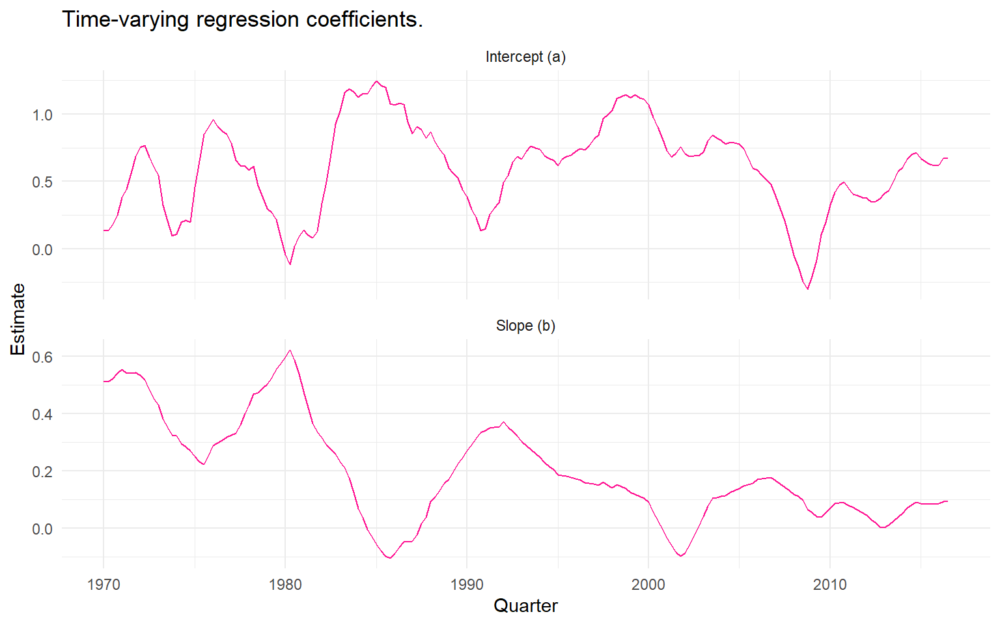
The same filter with dlm
Click to toggle source code
mod_us = dlmModReg(z_us, dV = 1, dW = c(0, 0)) # default prior: m0 = 0, C0 = 1e7 I
filt_us = dlmFilter(y_us, mod_us)
# Largest difference between own and dlm filtered coefficients:
max(abs(filt_us$m[-1, ] - coef_path))[1] 1.337001e-09dlmModReg() uses the same vague prior, so dlmFilter() gives the same sequence of coefficient estimates as my own filter.

Projects
Projects
This section contains four substantial projects, two from each section of the course. Between them they cover model comparison (all four), computational programming from first principles (Projects 1, 3 and 4) and real-world data (all four).
Project 1 · Section 2 · Exponential smoothing
Forecasting South African electricity demand
Holt-Winters coded from first principles and compared with ETS models and naive benchmarks, forecasting daily Eskom demand 1 to 14 days ahead.
First principles Model comparison Real-world data
Project 2 · Section 1 · Seasonal ARIMA
Predicting drought in the Western Cape
Seasonal ARIMA and dynamic regression: does lagged Pacific sea surface temperature improve forecasts of Theewaterskloof Dam levels?
Model comparison Real-world data
Project 3 · Section 1 · ARCH and GARCH
ARCH, GARCH and GJR-GARCH compared out of sample on daily All Share Index returns, with the GARCH(1,1) likelihood coded by hand.
First principles Model comparison Real-world data
Project 4 · Section 2 · Hidden Markov models
HMM algorithms built from first principles, then used to find market regimes in All Share Index returns and compared with GJR-GARCH.
First principles Model comparison Real-world data Shiny app
Project 1
Forecasting South African daily electricity demand with exponential smoothing
Section and topic: Section 2 - Exponential smoothing (Holt-Winters and ETS state-space models).
Type of project: Implementation and model comparison on real-world data. Additive Holt-Winters (ETS(A,N,A)) coded from first principles, including its prediction intervals.
Aim: To forecast daily South African electricity demand 1 to 14 days ahead with exponential smoothing. To determine which exponential smoothing model forecasts best compared to the naive and seasonal naive benchmarks, whether its prediction intervals are reliable, and whether removing the annual cycle improves the forecasts.
Data used:
- Hourly RSA contracted demand (MW), 1 April 2019 to 13 September 2023. Source: Eskom (2024), Eskom Data Portal, https://www.eskom.co.za/dataportal/. The data are aggregated system totals with no personal information.
The hourly data were averaged to daily mean demand. The models use 1 March 2021 to 13 September 2023, which leaves out the 2020 lockdown period. The training set ends on 19 July 2023 (871 days). Its last 8 weeks are a validation window for modelling choices. The last 8 weeks of the data (20 July 2023 to 13 September 2023) are the test set. Download instructions are in the detailed analysis.
Methods used: A Bai-Perron structural break test (with a sensitivity check on the minimum segment length) to choose the start date. Time plots, day-of-week boxplots, the ACF and an MSTL decomposition into weekly and annual components. SES, additive Holt-Winters with and without a damped trend and multiplicative Holt-Winters were fitted as ETS state-space models with forecast::ets() and compared by AICc. ETS(A,N,A) was also implemented from first principles: the error-correction filter, estimation by minimising the SSE with optim(), and the analytic forecast variance. Residual diagnostics included the Ljung-Box test and an analysis of the largest residuals against public holidays. The forecasts were evaluated against the naive and seasonal naive benchmarks with a rolling forecast origin (horizons 1 to 14 days, RMSE, MAE, MAPE and the Diebold-Mariano test). The coverage of the model-based prediction intervals was compared with empirical intervals built from in-sample multi-step errors. As an extension, a deterministic annual cycle (Fourier terms) was removed before smoothing, and this choice was made on the validation window rather than the test set.
Key findings:
- The end of the lockdown disruption falls between 14 September 2020 and 22 March 2021 depending on the minimum segment length, so the modelling period starts on 1 March 2021, the move to alert level 1.
- Daily demand has a strong and stable weekly pattern (Sunday demand is about 1,300 MW below the level and Tuesday to Thursday about 500 to 600 MW above it), a winter peak and no long-term trend. ETS(A,N,A) had the lowest AICc, which agrees with automatic selection (ETS(A,N,A)).
- The estimates are \(\hat{\alpha} \approx\) 0.92 and \(\hat{\gamma} \approx 0\): the weekly pattern is fixed while the level moves almost like a random walk. My filter reproduces the
ets()residuals exactly (maximum difference 3.6^{-12} MW). Estimated independently, my optimiser reached the boundary (\(\hat{\alpha} \approx\) 1) with a marginally lower SSE, which shows how flat the likelihood is in \(\alpha\). - Out of sample, ETS(A,N,A) had an RMSE of 674 MW (MAPE 2.1%), compared with 786 MW for the seasonal naive and 1,185 MW for the naive benchmark. My own code gave 675 MW. One day ahead it roughly halved the seasonal naive error (326 vs 658 MW, Diebold-Mariano p-value <0.001), but at 7 and 14 days ahead the two were equally accurate (p-values 0.8 and 0.86).
- 10 of the 10 largest residuals fall on a public holiday or the day after one. The residuals are autocorrelated and heavy-tailed (excess kurtosis 3.7).
- The model-based prediction intervals were too wide (the 80% intervals covered 94% of the test values), because \(\hat{\alpha} \approx 1\) implies that uncertainty grows like a random walk and holidays inflate \(\hat{\sigma}\). Empirical intervals gave 83% coverage at the 80% level.
- Removing the annual cycle gave opposite results in the two periods: worse on the validation window (RMSE 713 to 788 MW) and better on the test set (674 to 595 MW). The 2023 winter peak was much lower than in earlier years (mean June demand 27,200 MW in 2022 and 26,500 MW in 2023), so a fixed annual cycle is not reliable. It was left out of the final model.
- The final forecast carries the high demand at the end of the series (27,588 MW, against 26,447 MW on the same day a week earlier) into every forecast for the next two weeks. This is the main practical weakness of a level with \(\hat{\alpha}\) close to 1.
What I would do differently next time:
- Make modelling choices on a validation window from the start. I first judged the annual adjustment on the test set, where it looked like a clear improvement. On the validation window it made the forecasts worse.
- Model public holidays explicitly, for example with holiday indicators in a regression with ETS errors, since they cause the largest errors and inflate the prediction intervals.
- Use a method designed for multiple seasonal patterns (TBATS or double seasonal Holt-Winters), with temperature and load shedding as predictors, instead of a fixed annual adjustment.
- Evaluate over several rolling windows covering a full year, including the Christmas period, and model unconstrained demand (adding back the load that was shed) rather than the demand that was actually supplied.
Link to the detailed analysis: Detailed analysis and code
Project 2
Predicting drought in the Western Cape
Section and topic: Section 1 - Linear models for the conditional mean (seasonal ARIMA and dynamic regression).
Type of project: Implementation and model comparison on real-world data. Includes a prewhitened cross-correlation analysis and a composition adjustment for incomplete buoy data.
Aim: To determine whether Theewaterskloof Dam capacity and eastern Pacific sea surface temperature (SST) can be forecast with seasonal ARIMA models, and whether lagged SST, as a leading indicator of El Niño, improves dam capacity forecasts.
Data used:
- Daily Theewaterskloof Dam levels (% of capacity), January 2000 to January 2026. Source: City of Cape Town Open Data Portal, Dam levels from 2000, https://odp-cctegis.opendata.arcgis.com/.
- Daily SST (°C) from the seven TAO/TRITON buoys along 95°W, January 2000 to April 2026 (models fitted to January 2000 to October 2021 because of long gaps in the record). Source: NOAA Pacific Marine Environmental Laboratory, https://www.pmel.noaa.gov/tao/drupal/disdel/.
Both series were aggregated to monthly means. Neither dataset contains personal information. Download instructions are in the detailed analysis and the code and data appendix.
Methods used: STL decomposition, ACF/PACF and unit root tests to choose the differencing and candidate orders. Seven seasonal ARIMA candidates selected by rolling-origin cross-validation (with AICc as a check) on the training data only, then evaluated once on a held-out test set against Mean, Naive, Seasonal naive, Drift and ETS(A,N,A). A prewhitened cross-correlation to choose the SST lag, a time series linear model, and a dynamic regression (SARIMAX). Accuracy measured with RMSE, MAE, MAPE and CRPS; residuals checked with Ljung-Box tests.
Key findings:
- The selected dam capacity model is ARIMA(1,0,0)(0,1,1)[12] (test CRPS = 4.828, ranked 1 of 6 models, against 9.164 for Seasonal naive). Most of the predictability comes from the dam’s own persistence and seasonality.
- The selected SST model is ARIMA(2,0,0)(0,1,1)[12] (test CRPS = 0.585, ranked 2 of 6). It performed very similarly to the Seasonal naive model on the short SST test set, with a slightly higher CRPS but lower RMSE, MAE and MAPE.
- The two-year dam capacity forecast keeps the seasonal cycle (monthly means between 43.1% and 77.6%), but the 95% prediction interval widens to about 66 percentage points by the end of the horizon and exceeds 100% capacity. The dam model’s residuals are not fully white noise (Ljung-Box \(p\) = 0.001), so these intervals are probably too narrow.
- The raw cross-correlation between dam levels and SST is dominated by their five-to-six-month seasonal offset, not by El Niño. After prewhitening, the strongest lead is at 10 months (CCF = -0.091), with 0 of 12 lead lags outside the 95% bounds.
- A time series linear model finds a significant negative relationship between lagged SST and dam levels (\(\hat\beta\) = -2.779, \(p\) = 0.012), as hypothesised, but its residuals are strongly autocorrelated. With ARIMA errors, the SST coefficient is -0.341 (\(p\) = 0.663), and the dynamic regression’s forecasts (CRPS = 18.852) are no better than the univariate model’s (18.700).
- There is no statistically significant evidence that SST at 95°W is a useful monthly leading indicator of Theewaterskloof Dam levels.
- Forecast rankings depend on the test window: the Naive model beat the ARIMA model during the 2019–2021 post-drought recovery. This is why selection used cross-validation rather than a single test set.
- Gaps in the buoy record from November 2021 meant that no model could forecast into the 2026/2027 El Niño period.
- Model logit-transformed capacity so that prediction intervals stay within 0-100%.
What I would do differently next time:
- Use catchment rainfall and water-use data as predictors, since they drive dam inflow and outflow directly.
- Use a gap-free ENSO index, such as the Oceanic Niño Index, instead of a single buoy line, so that forecasts could reach 2027.
- Fit a regime-switching model that allows the SST–dam relationship to differ between El Niño, La Niña and neutral phases.
- Model logit-transformed capacity so that prediction intervals stay within 0–100%.
Link to the detailed analysis: Detailed analysis and code
Project 3
Journal
Learning Journal
This journal documents my learning progress throughout the course, one entry per lecture: what I did, what I learned, and the questions I still had. My use of AI tools is recorded separately in the AI Use Log.
Lecture 1
Date: 27 July 2026
Topic covered: Foundations
What I Did:
Plotted time series plots for discrete and continuous time series data: Section 1
What I Learned:
A time series is an ordered sequence of observations collected over time. The ordering matters since observations are often dependent on previous observations (sequential correlation).
Assumption
Equally spaced measurements.
Assumption
Autocorrelation across time.
A time series is a single measurement taken at multiple points through time to give a series of measurements through time.
Noise (stochastic) in data introduces different realisations. An observed time series is only one realisation of an underlying stochastic process. This is important as we are not just trying to model the observations but the process that generated them.
Questions:
Q: How does noise introduce different realisations?
A: In normal regression the pattern is fixed and the noise sits on top of it:
\[ y_i = \beta_0 + \beta_1 x_i + e_i, \] where each error term is independent.
In an AR process the noise actually builds the pattern. This means that every apparent trend is made of past shocks that haven’t died away yet. A different set of shocks will give a different shape because the shape of the path comes from noise. It isn’t that time series errors are correlated but that each observation is a weighted sum of every past shock making observations correlated.
Click to toggle source code
set.seed(1)
par(mfrow = c(2, 3))
for (i in 1:6) plot(arima.sim(list(ar = 0.9), n = 100), main = paste("Realisation", i), ylab = "y")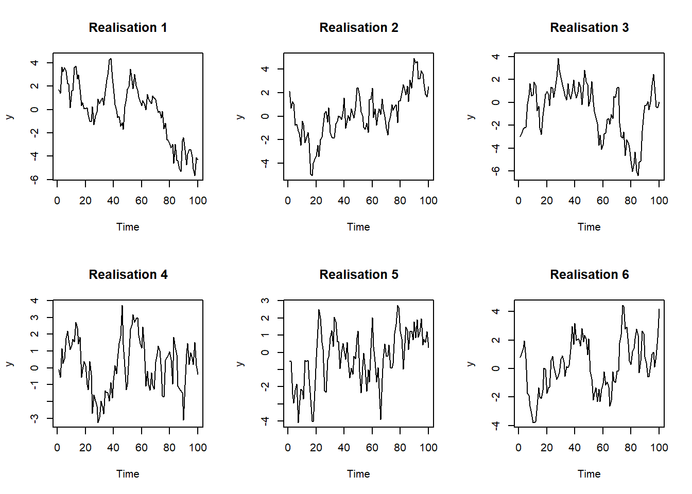
What to Do Next:
The Forecasting Problem
Links: AI Log
Lecture 2
Date: 3 August 2026
Topic covered: The Forecasting Problem
What I Did:
Looked at stationary AR processes: Section 1
What I Learned:
A forecast horizon is how far into the future you try to predict values. When looking at time series data we are looking for stable, informative patterns (not just a lot of data).
Forecasting vs Goal setting vs Planning
A forecast is a prediction about what will happen in the future based on evidence that we have (with some uncertainty). Goal setting is what we want to happen in the future and planning is how we reach our goal.
The uncertainty associated with forecasting gives rise to forecast intervals (not just point estimates).
A random walk is a process where memory is permanent. Every future shock accumulates endlessly resulting in forecast variance growing linearly. A stationary AR is a process where memory decays geometrically. Shocks die out, forcing the forecast back to the process mean.
Questions:
Q: If a process changes over time, at what point can we discard previous observations when forecasting?
A: This is decided by the model and is called the model’s memory. A mean benchmark will use every observation and just forecast the mean, the naive benchmark will use the most recent observation, exponential smoothing uses all observations but weights them differently (older observations are given less weight). You would also discard observations if a structural break occurs.
Note
When determining the number of observations to estimate the model (training set) more is usually better, unless the process has changed.
What to Do Next:
Exploring a Series
Links: AI Log
Lecture 3
Date: 17 August 2026
Topics covered: Exploring a Series, Benchmarks and Forecast Accuracy
What I Did:
Worked through Time Series Analysis in R using the AirPassengers dataset: Section 1
What I Learned:
Time domain looks at previous observations whereas the frequency domain looks at cycles at different frequencies. Often you will need to look at both of these domains.
Trend vs Seasonality vs Cycles
A trend is the long-run direction of movement in a time series. Seasonality models a pattern that repeats itself at a fixed AND known interval. A cycle is a long oscillation where the length is NOT fixed.
When dealing with time series data you may encounter changing variability. Here you need to transform the data to stabilise variance and difference to remove trend and seasonality. When structural breaks are present in the data you can either use an indicator variable at the break or you can fit separate models on either side of the break.
There are 4 benchmark forecasting models: Mean, Naive, Seasonal naive and Drift.
Residuals are not forecast errors
Residuals are for diagnostics; forecast errors are for evaluation!
You cannot run normal cross-validation on time series data since the ordering of observations matters. Future observations must never be used when estimating a forecasting model.
Questions:
Q: How do you identify a significant structural break?
A: This can be done using formal tests, dependent on whether the date of the break is known prior to looking at the data. If the date is known in advance (e.g. a policy change), you can use Chow’s test. Chow’s test fits the model before and after the date of the break and uses an F-test to check if there is a statistically significant difference in model parameters. If the date is unknown you can run a Chow test at every possible date and take the largest F, compared against adjusted critical values. This is a sup-F test and accounts for having searched over every date, making it harder to declare a break.
What to Do Next:
Operators, Stationarity and White Noise
Links: AI Log
Lecture 4
Date: 19 August 2026
Topic covered: Three Validation Strategies, Linear Models for the Conditional Mean
What I Did:
Continued working through Time Series Analysis in R using the AirPassengers dataset: Section 1
What I Learned:
Since you can’t perform regular cross-validation on time series data you use a different approach. Walk-forward validation advances the forecast origin one step at a time and re-estimates the model at each step. Expanding window validation keeps every historical observation while moving the forecast origin forward. Sliding window validation keeps the training window length fixed while moving the forecast origin forward.
Expanding window is good for stable processes whereas sliding window is good for rapidly changing processes.
We want our data to be stationary and for the residuals to be white noise. To restore stationarity you can transform the data to stabilise the variance and take linear/seasonal differences to remove trend and seasonality. Log-transformations reduce a multiplicative model to an additive model.
Weak white noise requires uncorrelated observations with zero mean and constant variance but strict white noise requires iid observations.
Questions:
Q: What is the difference between walk-forward and expanding window?
A: In the notes they are the same procedure: the training set always starts at \(y_1\) and grows by one observation each time the forecast origin moves forward. “Walk-forward” describes how the origin moves and “expanding window” describes what is kept. The slides list them as separate strategies, but note that they use the same growth rule. The difference is that walk-forward re-estimates the model at every step, so it has a higher computational cost. The real contrast is with the sliding window, which drops the oldest observation at each step.
What to Do Next:
Conditional Variance Models
Links: AI Log
Lecture 5
Date: 24 August 2026
Topic covered: Linear Models for the Conditional Mean
What I Did:
Fit both ARIMA and SARIMA to the AirPassengers dataset: Section 1
What I Learned:
The moving average, MA(\(q\)), model is driven by lagged shocks. The dependence is based on errors not actual observations. The model has short memory. An MA(\(q\)) is always stationary and is restricted to be invertible.
The autoregressive, AR(\(p\)), model regresses a series on its own path.
ARMA combines both MA and AR models and is fitted by maximum likelihood, not OLS, since the past shocks are never observed.
Note
ACF and PACF graphs are used to determine which ARMA model to fit. An AR(\(p\)) has a PACF that cuts off after lag \(p\). An MA(\(q\)) has an ACF that cuts off after lag \(q\).
The ARIMA(\(p,d,q\)) model allows for differencing and the SARIMA model includes seasonality.
Questions:
Q: How can you determine if there is additional seasonality in a dataset after differencing or if it is just noise? For example in Section 1, there were still spikes at some lags in the PACF after log-transforming and differencing the AirPassengers dataset.
A: You can check if the residuals look like white noise by using a Ljung-Box test. A non-significant test means that there is no evidence of remaining autocorrelation (even if there are still a few lags that spike in the ACF/PACF). At the 5% level about 1 in 20 lags will spike by chance.
What to Do Next:
Conditional Variance Models
Links: AI Log
Lecture 6
Date: 31 August 2026
Topic covered: Time Series Analysis Revision
What I Did:
Finished working through Time Series Analysis in R: Section 1
What I Learned:
Sulaiman revised Time Series Analysis in R. We covered reading in a .csv file and converting it to a tsibble(), time series plots, seasonal and subseries plots, lag plots, autocorrelation functions, time series models, stationarity, differencing and unit root tests.
Questions:
No new questions :)
What to Do Next:
Conditional Variance Models, Spectral Analysis
Links: AI Log
Additional Lecture with Sulaiman
Date: 16 September 2026
Topic covered: Conditional Variance Models (ARCH and GARCH)
What I Did:
Worked through the provided Lab: Section 1
What I Learned:
All previous models have simply modelled the conditional mean and assumed constant variance. This fails for financial return data as it understates risk during periods where risk is highest and overstates risk when it is lowest. We now have both a mean (predictable component of the series) and a variance (conditional variance) equation.
Note
A series can be uncorrelated and still highly predictable in magnitude.
The ARCH model specifies conditional variance as a function of past squared innovations. The simplest case being \(\sigma^2_t = \alpha_0 + \alpha_1 \varepsilon_{t-1}^2\).
Volatility clustering
Large changes tend to follow large changes and small changes tend to follow small changes. Returns are often uncorrelated, hence why the ACF of returns indicates very little, however squared returns can be strongly autocorrelated.
The GARCH model adds the previous conditional variance to the ARCH equation. This makes it equivalent to an ARCH model with infinite memory. A GARCH(1,1) model is usually sufficient in practice.
\[ \sigma_t^2 = \alpha_0 + \alpha_1 \varepsilon_{t-1}^2 + \beta_1 \sigma_{t-1}^2, \] where \(\alpha_1\) measures how strongly volatility reacts to a new shock, \(\beta_1\) measures how long that reaction lasts, \(\alpha_1 + \beta_1\) is the persistence.
Questions:
Q: Why must \(\alpha_1 + \beta_1 < 1\)?
A: When \(\alpha_1 + \beta_1 < 1\) this ensures that the long-run variance is \(\bar{\sigma}^2 = \frac{\alpha_0}{1- \alpha_1 - \beta_1}\) and that the process has a benchmark variance for the volatility to return to. When \(\alpha_1 + \beta_1 = 1\) (IGARCH) the shocks to volatility are permanent. This means that all the weight is on the past and none is on the long-run level. This is the variance equivalent of a random walk.
What to Do Next:
Spectral Analysis
Links: AI Log
Lecture 7
Date: 14 September 2026
Topic covered: Exponential Smoothing
What I Did:
Worked through Exponential Smoothing Exercises: Section 2
What I Learned:
Exponential smoothing forecasts are weighted averages of past observations. Weights decrease exponentially the further back in time you go. The smoothing parameter \(\alpha\) adjusts the weight put on past observations. A large \(\alpha\) puts a lot of weight on the most recent observation, similar to the Naive forecast. A small \(\alpha\) averages over a long history, similar to the Mean forecast. This is similar to GARCH but applied to observations instead of squared shocks.
SES vs Holt vs Holt-Winters
Simple exponential smoothing (SES) only updates a level resulting in flat forecasts. Holt’s method adds a trend equation, that describes the slope, so forecasts follow a straight line. Holt-Winters adds a seasonal equation. Each component gets its own smoothing parameter (\(\alpha\), \(\beta\), \(\gamma\)).
The smoothing parameters and initial states (\(\ell_0\), \(b_0\)) are estimated by minimising the sum of squared one-step-ahead errors. Fitted values are one-step-ahead forecasts, so residuals are always one-step-ahead errors.
To turn the exponential smoothing algorithm into a state-space model we can write it in error-correction form: \(y_t = \ell_{t-1} + e_t\), \(\ell_t = \ell_{t-1} + \alpha e_t\). This allows us to estimate \(\sigma\) and build prediction intervals.
This is what ets() does.
Prediction intervals are usually too narrow
Standard prediction intervals only capture the random error and ignore the uncertainty in parameter estimates and choice of model.
Questions:
Q: How do we get variances of SES forecasts (\(\sigma^2[1+\alpha^2(h-1)]\)) if the point forecasts are flat?
A: The point forecast stays at \(\ell_T\), but every future error also moves the level by \(\alpha e_t\). These shifts add up, so uncertainty grows linearly with \(h\) even though the mean does not change.
What to Do Next:
Time Series Regression Models
Links: AI Log
Lecture 8
Date: 21 September 2026
Topic covered: Time Series Regression Models
What I Did:
Worked through Chapter 2: Time Series Regression Models and the provided slides, rerunning the R code that had been included. Used a Kalman filter to estimate regression coefficients in the US consumption example: Section 2
What I Learned:
Time Series Regression includes explanatory variables in time series models. This allows one to include trend and seasonality covariates in the model instead of just differencing the series to make it stationary.
ARMAX vs regression with ARMA errors
ARMAX includes lagged values of the response as predictors, \(y_t = \beta x_t + \phi y_{t-1} + \dots\). This means that \(\beta\) can no longer be interpreted as the effect of \(x\) on the mean of \(y\). Regression with ARMA errors keeps the normal regression equation and lets the errors follow an ARMA process, \(y_t = \beta_0 + \beta_1 x_t + \eta_t\), where \(\eta_t\) follows an ARMA process. This means that \(\beta_1\) can still be interpreted in the usual way.
Harmonic regression assumes that the seasonal pattern stays the same over time.
Autocorrelated errors
When errors are autocorrelated, OLS still gives unbiased estimates but they are no longer efficient. The usual standard errors are also wrong, so tests and intervals are too optimistic.
Questions:
Q: When should I add a lagged response instead of modelling the errors as ARMA?
A: It depends on whether the dependence is part of the process or a nuisance. If \(y\) depends on its own past (e.g. a stock that accumulates), a lagged response makes sense, but then \(\beta_1\) is only the immediate effect of \(x\) and the long-run effect is \(\beta_1/(1-\phi)\). If the goal is the effect of \(x\) on the mean of \(y\), the errors should be modelled as ARMA. In Example 4.1 in Section 2, the data were generated with AR(1) errors, so the model with a lagged response was misspecified unless \(x_{t-1}\) was also included. Regression with AR(1) errors is the same as this model with the coefficient of \(x_{t-1}\) restricted to \(-\phi\beta_1\).
What to Do Next:
State-Space Models
Links: AI Log
Lecture 9
Date: 28 September 2026
Topic covered: State-Space Models
What I Did:
Worked through the dlm practical and the State Space and Kalman Filter tutorial: Section 2
What I Learned:
A state-space model has both an observation equation and a state equation.
The observation equation \(y_t = F\theta_t + v_t\) links what we observe to an unobserved state whereas the state equation \(\theta_t = G\theta_{t-1} + w_t\) describes how the state changes over time.
Note
Regression, ARIMA and exponential smoothing models can all be written in state-space form. State-space models don’t need stationarity since trend and seasonality are modelled directly and allowed to change over time.
The Kalman filter is a recursive algorithm that first predicts and then updates. First the state, \(a_t, R_t\), and the next observation, \(f_t, Q_t\), are predicted. Then the state estimate, \(m_t, C_t\), is updated. The updated estimate is a weighted average of the prediction and the new observation where the Kalman gain decides how much weight is assigned to the observation.
Bayesian Framework
The Kalman filter works in a Bayesian way where, \(\text{posterior} \propto \text{prior} \times \text{likelihood}\). The posterior becomes the prior of the next step.
Questions:
Q: How do I decide which variances in \(W\) should be allowed to be non-zero?
A: A non-zero variance lets that state change over time and a zero variance keeps it fixed. The structure of the model decides which states can have noise. In the CO\(_2\) model in Section 2 only the level, slope and current seasonal effect get noise, because the other seasonal states are just the previous effects shifted along. The size of the variances can then be estimated by maximum likelihood. If an estimated variance is essentially zero, that state can be fixed, and models can be compared with the likelihood or AIC, e.g. static (\(W = 0\)) vs time-varying coefficients in the US consumption example.
What to Do Next:
Kalman Filter
Links: AI Log
Lecture 10
Date: 5 October 2026
Topic covered: Kalman Filter
What I Did:
Continued working through the dlm practical and the State Space and Kalman Filter tutorial: Section 2
What I Learned:
The Kalman filter is used to filter and forecast in dynamic linear Gaussian systems. This filter is recursive so we can process new observations as they arrive. The Kalman smoother starts at the end of a series and works backwards. This is better for looking backwards (not prediction).
Filtering vs Smoothing vs Forecasting
If we estimate the state at time \(t\) using data up to time \(s\):
- \(s < t\) = forecasting
- \(s = t\) = filtering
- \(s > t\) = smoothing
Forecasting and filtering are done using the Kalman filter. Smoothing is done using the Kalman smoother.
The likelihood is the product of one-step-ahead predictive densities, \(y_t \mid y_{1:t-1} \sim N(f_t, Q_t)\). The unknown variances, \(V\) and \(W\), can be estimated by maximum likelihood.
Prediction intervals use \(Q_t = FR_tF' + V\). They are prediction intervals (not confidence intervals) because they are for a future observation and include the observation noise, \(V\), as well as the uncertainty about the state.
If there are missing observations present in the data, there is nothing to update with and the Kalman gain will be zero. Consecutive missing observations increase uncertainty.
Method
- The prior predicts the next state from the previous estimate of the state, with some uncertainty (state equation).
- The likelihood asks how likely the new observation is given all possible states (observation equation).
- The new posterior, for the current state, is given by combining the likelihood and the prior.
Questions:
Q: Why does the Kalman filter only work for linear Gaussian state-space models?
A: The Kalman filter does a linear transformation of a Gaussian which gives another Gaussian.
\[ \text{Gaussian prior} \times \text{Gaussian likelihood} \propto \text{Gaussian posterior} \] The Kalman filter only keeps track of the mean and variance. When we have a non-linear or non-Gaussian distribution we either end up with a skewed distribution or a posterior with no closed form.
What to Do Next:
Hidden Markov Models
Links: AI Log
Lecture 11
Date: 12 October 2026
Topic covered: Hidden Markov Models 1
What I Did:
Worked through Questions 1, 3, 4 and 7 of the HMM tutorial and wrote the forward algorithm from first principles: Section 2
What I Learned:
A hidden Markov model (HMM) has an unobserved state process, \(C_t\), that follows a Markov chain and an observed process, \(X_t\), whose distribution depends only on the current state. Each state has its own state-dependent distribution (e.g. Poisson or Gaussian).
Assumption
The next state only depends on the current state (Markov property).
The Markov chain is described by the transition probability matrix \(\Gamma\), where \(\gamma_{ij} = P(C_{t+1} = j \mid C_t = i)\), and the initial distribution \(\boldsymbol{\delta}\). A large diagonal in \(\Gamma\) means that the states are persistent.
Independent mixture vs HMM
An independent mixture draws a new state at every time point, independently of the last one. An HMM lets the state depend on the previous state, which creates autocorrelation in the observations.
The likelihood, \(L_T = \boldsymbol{\delta}\mathbf{P}(x_1)\Gamma\mathbf{P}(x_2)\cdots\Gamma\mathbf{P}(x_T)\mathbf{1}'\), is calculated with the forward algorithm and maximised numerically. The forward probabilities are scaled at every step to avoid underflow.
Questions:
Q: Why does an HMM produce autocorrelated observations if the observations are conditionally independent given the states?
A: The observations are only independent once we know the states. A large observation makes a high-mean state more likely and, since the states are persistent, the next observation is likely to come from that same state.
What to Do Next:
Hidden Markov Models 2
Links: AI Log
Lecture 12
Date: 19 October 2026
Topic covered: Hidden Markov Models 2
What I Did:
Worked through Questions 2, 5 and 6 of the HMM tutorial, wrote the backward algorithm, local decoding and the Viterbi algorithm from first principles, and fitted Poisson HMMs to the earthquake counts: Section 2, Project 4
What I Learned:
Once an HMM has been fitted we usually want to know which state the process was in. This is called decoding.
Local vs global decoding
Local decoding finds the most likely state at each time point separately, using the forward and backward probabilities. Global decoding finds the most likely sequence of states using the Viterbi algorithm. The two can disagree.
The number of states is chosen with AIC or BIC. The likelihood of an HMM often has several local maxima, so the model should be fitted from several different starting values.
Questions:
Q: Why can’t short visits to a state be recovered by decoding?
A: A single visit to a state needs two unlikely transitions, there and back, and if the state-dependent distributions overlap, the observation is often also likely under the surrounding state. In the Viterbi exercise in Section 2, the single visit to state C at time 2 was decoded as A.
What to Do Next:
Project 4
Links: AI Log
Appendix
GitHub Repository
All the code, data and Quarto source files for this portfolio are on GitHub: https://github.com/IsabellaLethbridge/Time_Series.
To reproduce any page, clone the repository, open Time_Series.Rproj in RStudio and render the page (or run quarto render for the whole site). The data files are in _data/ and projects/_data/.
R Code and Scripts
The code for each project is embedded in its detailed analysis (see Computational Notebooks and Reports). The standalone scripts below are shared between pages or run outside the portfolio. Click a script name to show the code.
HMM toolkit
scripts/hmm-toolkit.R: my hidden Markov model functions (scaled forward and backward algorithms, local decoding, the Viterbi algorithm, the stationary distribution, the working-parameter transformation and matrix powers for forecasting). Used by Project 4 and the Hidden Markov Models part of Section 2.
hmm-toolkit.R
# =============================================================================
# HMM toolkit, written from first principles (Time Series Analysis portfolio)
#
# Used by projects/project-04-analysis.qmd and section-2/section-2.qmd.
# Every function works with the matrix of state-dependent densities
# dens[t, i] = p_i(x_t), so the same code handles Poisson, Gaussian and
# categorical observations.
# =============================================================================
# Log-likelihood only (fast version, used inside optim()):
hmm_loglik = function(dens, delta, Gamma) {
T_len = nrow(dens)
v = delta * dens[1, ]
ll = log(sum(v))
phi = v / sum(v)
if (T_len > 1) {
for (t in 2:T_len) {
v = as.numeric(phi %*% Gamma) * dens[t, ]
u = sum(v)
ll = ll + log(u)
phi = v / u
}
}
ll
}
# Scaled forward algorithm: log-likelihood, log u_t, filtered probabilities and log alpha:
hmm_forward = function(dens, delta, Gamma) {
T_len = nrow(dens)
m = ncol(dens)
phi_mat = matrix(NA, T_len, m)
lu = numeric(T_len)
for (t in 1:T_len) {
v = if (t == 1) delta * dens[1, ] else as.numeric(phi %*% Gamma) * dens[t, ]
u = sum(v)
lu[t] = log(u) # log p(x_t | x_{1:t-1})
phi = v / u # P(C_t = i | x_{1:t})
phi_mat[t, ] = phi
}
list(loglik = sum(lu), lu = lu, phi = phi_mat,
lalpha = cumsum(lu) + log(phi_mat)) # log alpha_t(i)
}
# Scaled backward algorithm: log beta (Zucchini et al., 2016):
hmm_backward = function(dens, Gamma) {
T_len = nrow(dens)
m = ncol(dens)
lbeta = matrix(0, T_len, m) # log beta_T = 0
phi = rep(1 / m, m)
lscale = log(m)
if (T_len > 1) {
for (t in (T_len - 1):1) {
v = as.numeric(Gamma %*% (dens[t + 1, ] * phi))
lbeta[t, ] = log(v) + lscale
phi = v / sum(v)
lscale = lscale + log(sum(v))
}
}
lbeta
}
# Local decoding: P(C_t = i | x_{1:T}) = alpha_t(i) beta_t(i) / L_T:
hmm_local = function(dens, delta, Gamma) {
fwd = hmm_forward(dens, delta, Gamma)
lbeta = hmm_backward(dens, Gamma)
exp(fwd$lalpha + lbeta - fwd$loglik)
}
# Global decoding with the Viterbi algorithm (log scale):
hmm_viterbi = function(dens, delta, Gamma) {
T_len = nrow(dens)
m = ncol(dens)
lG = log(Gamma)
ld = log(dens)
xi = matrix(NA, T_len, m)
xi[1, ] = log(delta) + ld[1, ]
if (T_len > 1) {
for (t in 2:T_len) {
for (j in 1:m) {
xi[t, j] = max(xi[t - 1, ] + lG[, j]) + ld[t, j]
}
}
}
# Back-tracing:
states = numeric(T_len)
states[T_len] = which.max(xi[T_len, ])
if (T_len > 1) {
for (t in (T_len - 1):1) {
states[t] = which.max(xi[t, ] + lG[, states[t + 1]])
}
}
list(states = states, xi = xi)
}
# Stationary distribution: solve delta (I - Gamma + U) = 1:
stat_dist = function(Gamma) {
m = nrow(Gamma)
solve(t(diag(m) - Gamma + 1), rep(1, m))
}
# Working (unconstrained) parameters -> transition probability matrix:
gamma_w2n = function(w, m) {
G = diag(m)
G[!G] = exp(w) # off-diagonal elements, relative to the diagonal
G / rowSums(G)
}
# h-step transition matrix Gamma^h:
mat_pow = function(M, h) {
R = diag(nrow(M))
for (i in seq_len(h)) R = R %*% M
R
}JSE regime explorer (Shiny app)
scripts/shiny-app/: the interactive companion to Project 4. It is online at https://isabellalethbridge.shinyapps.io/shiny-app/. To run it locally, run precompute.R first, then shiny::runApp("scripts/shiny-app") from the portfolio root.
precompute.R: fits the Gaussian HMMs (1 to 4 states) and GJR-GARCH, saves app_data.rds
# =============================================================================
# JSE regime explorer: precompute the model fits used by app.R
#
# Run once from the root of the portfolio project (the folder with _quarto.yml):
# source("scripts/shiny-app/precompute.R")
#
# It fits Gaussian HMMs with 1-4 states and GJR-GARCH(1,1)-t on the training
# set (Jul 1995 - Dec 2012), exactly as in the Project 4 analysis, runs every
# model through the whole series with the parameters fixed, and saves the
# results to scripts/shiny-app/app_data.rds. The app only reads that file, so
# it starts instantly and does not need rugarch or readxl when deployed.
# =============================================================================
library(readxl)
library(rugarch)
set.seed(2026)
data_path = "_data/PT-DATA-ALBI-JIBAR-JSEIND-Daily-1994-2017.xlsx"
out_path = "scripts/shiny-app/app_data.rds"
sheet_name = "JSE Various Indices"
train_end = as.Date("2012-12-31")
if (!file.exists(data_path)) {
stop("Could not find ", data_path, ". Run this script from the portfolio root folder.")
}
# -----------------------------------------------------------------------------
# HMM toolkit (same functions as in project-04-analysis.qmd)
# -----------------------------------------------------------------------------
hmm_loglik = function(dens, delta, Gamma) {
T_len = nrow(dens)
v = delta * dens[1, ]
ll = log(sum(v))
phi = v / sum(v)
if (T_len > 1) {
for (t in 2:T_len) {
v = as.numeric(phi %*% Gamma) * dens[t, ]
u = sum(v)
ll = ll + log(u)
phi = v / u
}
}
ll
}
hmm_forward = function(dens, delta, Gamma) {
T_len = nrow(dens)
m = ncol(dens)
phi_mat = matrix(NA, T_len, m)
lu = numeric(T_len)
for (t in 1:T_len) {
v = if (t == 1) delta * dens[1, ] else as.numeric(phi %*% Gamma) * dens[t, ]
u = sum(v)
lu[t] = log(u)
phi = v / u
phi_mat[t, ] = phi
}
list(loglik = sum(lu), lu = lu, phi = phi_mat,
lalpha = cumsum(lu) + log(phi_mat))
}
hmm_backward = function(dens, Gamma) {
T_len = nrow(dens)
m = ncol(dens)
lbeta = matrix(0, T_len, m)
phi = rep(1 / m, m)
lscale = log(m)
if (T_len > 1) {
for (t in (T_len - 1):1) {
v = as.numeric(Gamma %*% (dens[t + 1, ] * phi))
lbeta[t, ] = log(v) + lscale
phi = v / sum(v)
lscale = lscale + log(sum(v))
}
}
lbeta
}
hmm_local = function(dens, delta, Gamma) {
fwd = hmm_forward(dens, delta, Gamma)
lbeta = hmm_backward(dens, Gamma)
exp(fwd$lalpha + lbeta - fwd$loglik)
}
hmm_viterbi = function(dens, delta, Gamma) {
T_len = nrow(dens)
m = ncol(dens)
lG = log(Gamma)
ld = log(dens)
xi = matrix(NA, T_len, m)
xi[1, ] = log(delta) + ld[1, ]
for (t in 2:T_len) {
for (j in 1:m) xi[t, j] = max(xi[t - 1, ] + lG[, j]) + ld[t, j]
}
states = numeric(T_len)
states[T_len] = which.max(xi[T_len, ])
for (t in (T_len - 1):1) states[t] = which.max(xi[t, ] + lG[, states[t + 1]])
states
}
stat_dist = function(Gamma) {
m = nrow(Gamma)
solve(t(diag(m) - Gamma + 1), rep(1, m))
}
gamma_w2n = function(w, m) {
G = diag(m)
G[!G] = exp(w)
G / rowSums(G)
}
norm_hmm_nll = function(w, x, m) {
mu = w[1:m]
sigma = exp(w[(m + 1):(2 * m)])
Gamma = if (m == 1) matrix(1) else gamma_w2n(w[(2 * m + 1):(2 * m + m * (m - 1))], m)
delta = if (m == 1) 1 else stat_dist(Gamma)
dens = sapply(1:m, function(j) dnorm(x, mu[j], sigma[j]))
-hmm_loglik(matrix(dens, ncol = m), delta, Gamma)
}
norm_hmm_unpack = function(w, m) {
mu = w[1:m]
sigma = exp(w[(m + 1):(2 * m)])
Gamma = if (m == 1) matrix(1) else gamma_w2n(w[(2 * m + 1):(2 * m + m * (m - 1))], m)
ord = order(sigma)
Gamma = Gamma[ord, ord, drop = FALSE]
list(m = m, mu = mu[ord], sigma = sigma[ord], Gamma = Gamma,
delta = if (m == 1) 1 else stat_dist(Gamma))
}
norm_dens = function(x, pars) {
matrix(sapply(1:pars$m, function(j) dnorm(x, pars$mu[j], pars$sigma[j])), ncol = pars$m)
}
norm_pseudo = function(x, pars) {
fwd = hmm_forward(norm_dens(x, pars), pars$delta, pars$Gamma)
T_len = length(x)
pred = rbind(pars$delta, fwd$phi[-T_len, , drop = FALSE] %*% pars$Gamma)
cdf = matrix(sapply(1:pars$m, function(j) pnorm(x, pars$mu[j], pars$sigma[j])), ncol = pars$m)
qnorm(pmin(pmax(rowSums(pred * cdf), 1e-10), 1 - 1e-10))
}
# Newey-West standard error of a mean (Bartlett kernel):
nw_se = function(d, L = 6) {
n = length(d)
u = d - mean(d)
s = sum(u^2) / n
for (l in 1:L) s = s + 2 * (1 - l / (L + 1)) * sum(u[-(1:l)] * u[1:(n - l)]) / n
sqrt(s / n)
}
# -----------------------------------------------------------------------------
# Data (same cleaning as Projects 3 and 4)
# -----------------------------------------------------------------------------
find_col = function(hdr, code, field) {
idx = which(unlist(hdr[1, ]) == code & unlist(hdr[2, ]) == field)
if (length(idx) != 1) stop(paste("Could not uniquely find", code, field))
idx
}
hdr = read_excel(data_path, sheet = sheet_name, col_names = FALSE, n_max = 4)
raw = read_excel(data_path, sheet = sheet_name, col_names = FALSE, skip = 4,
na = c("#N/A", "", "NA"), guess_max = 10000)
date_col = which(sapply(raw, function(x) inherits(x, c("POSIXct", "Date"))))[1]
alsi_col = find_col(hdr, "J203:XJSE:IND", "TRI")
alsi = data.frame(date = as.Date(raw[[date_col]]), tri = as.numeric(raw[[alsi_col]]))
alsi = alsi[!is.na(alsi$date) & !is.na(alsi$tri), ]
alsi = alsi[order(alsi$date), ]
alsi = alsi[!duplicated(alsi$date), ]
alsi$r = c(NA, 100 * diff(log(alsi$tri)))
alsi = alsi[!is.na(alsi$r), ]
r_all = alsi$r
n_train = sum(alsi$date <= train_end)
r_train = r_all[1:n_train]
train_idx = 1:n_train
test_idx = (n_train + 1):length(r_all)
# -----------------------------------------------------------------------------
# Gaussian HMMs with 1-4 states (same starting values as the analysis)
# -----------------------------------------------------------------------------
jse_starts = list(
c(mean(r_train), log(sd(r_train))),
c(0.1, -0.1, log(0.8), log(2), rep(-3, 2)),
c(0.1, 0.05, -0.3, log(0.6), log(1.1), log(2.5), rep(-4, 6)),
c(0.12, 0.08, 0, -0.3, log(0.5), log(0.85), log(1.4), log(2.8), rep(-4, 12))
)
models = lapply(1:4, function(m) {
message("Fitting the ", m, "-state HMM ...")
fit = optim(jse_starts[[m]], norm_hmm_nll, x = r_train, m = m, method = "BFGS",
control = list(maxit = 2000))
pars = norm_hmm_unpack(fit$par, m)
# Run through the whole series with the training parameters fixed:
dens_all = norm_dens(r_all, pars)
fwd = hmm_forward(dens_all, pars$delta, pars$Gamma)
k = m^2 + m
logL = -fit$value
c(pars, list(
logL = logL,
k = k,
AIC = -2 * logL + 2 * k,
BIC = -2 * logL + k * log(n_train),
convergence = fit$convergence,
filtered = fwd$phi, # P(C_t | x_1:t)
smoothed = hmm_local(dens_all, pars$delta, pars$Gamma), # P(C_t | x_1:T)
viterbi = hmm_viterbi(dens_all, pars$delta, pars$Gamma),
ls = fwd$lu, # one-step-ahead log scores
pz = norm_pseudo(r_train, pars) # pseudo-residuals (training)
))
})
# -----------------------------------------------------------------------------
# GJR-GARCH(1,1) with Student-t errors and an AR(1) mean (Project 3 model)
# -----------------------------------------------------------------------------
message("Fitting GJR-GARCH(1,1)-t ...")
spec_gjr = ugarchspec(variance.model = list(model = "gjrGARCH", garchOrder = c(1, 1)),
mean.model = list(armaOrder = c(1, 0), include.mean = TRUE),
distribution.model = "std")
gjr_fit = ugarchfit(spec = spec_gjr, data = r_train, solver = "hybrid")
spec_fixed = spec_gjr
setfixed(spec_fixed) = as.list(coef(gjr_fit))
gjr_filt = ugarchfilter(spec = spec_fixed, data = r_all)
gjr_mu = as.numeric(fitted(gjr_filt))
gjr_sigma = as.numeric(sigma(gjr_filt))
gjr_ls = log(ddist("std", y = r_all, mu = gjr_mu, sigma = gjr_sigma,
shape = coef(gjr_fit)["shape"]))
# -----------------------------------------------------------------------------
# Log-score comparison table
# -----------------------------------------------------------------------------
scores = do.call(rbind, lapply(1:4, function(m) {
d = models[[m]]$ls[test_idx] - gjr_ls[test_idx]
data.frame(model = paste0("Gaussian HMM, ", m, " state", if (m > 1) "s" else ""),
m = m,
train = mean(models[[m]]$ls[train_idx]),
test = mean(models[[m]]$ls[test_idx]),
diff = mean(d),
p = 2 * pnorm(-abs(mean(d) / nw_se(d))))
}))
scores = rbind(scores, data.frame(model = "GJR-GARCH(1,1)-t", m = NA,
train = mean(gjr_ls[train_idx]),
test = mean(gjr_ls[test_idx]),
diff = NA, p = NA))
# -----------------------------------------------------------------------------
# Save
# -----------------------------------------------------------------------------
app_data = list(
series = data.frame(date = alsi$date, r = r_all),
n_train = n_train,
models = models,
gjr = list(sigma = gjr_sigma, mu = gjr_mu, ls = gjr_ls, coef = coef(gjr_fit)),
scores = scores,
created = Sys.time(),
versions = c(R = R.version.string, rugarch = as.character(packageVersion("rugarch")))
)
saveRDS(app_data, out_path)
message("Saved ", out_path, " (", round(file.size(out_path) / 1e6, 1), " MB).")
# Quick check against the Project 4 analysis (expected about -7276, -6660, -6551, -6514):
print(round(sapply(models, `[[`, "logL"), 1))app.R: the Shiny app
# =============================================================================
# JSE regime explorer
# Hidden Markov models for daily FTSE/JSE All Share Index returns (Project 4)
#
# Run locally: shiny::runApp("scripts/shiny-app")
# Data: app_data.rds, created by precompute.R
# =============================================================================
library(shiny)
library(bslib)
library(bsicons)
library(plotly)
app_data = readRDS("app_data.rds")
series = app_data$series
n_train = app_data$n_train
n_all = nrow(series)
test_start = series$date[n_train + 1]
ann = sqrt(252)
# -----------------------------------------------------------------------------
# Look and feel (portfolio colours: steel blue -> purple -> deep pink)
# -----------------------------------------------------------------------------
ink = "#2E2338"
purple = "#800080"
pink = "#FF1493"
pal4 = c("#4682B4", "#9370DB", "#800080", "#FF1493")
font = "Inter, system-ui, -apple-system, 'Segoe UI', sans-serif"
regime_cols = function(m) switch(m, pal4[1], pal4[c(1, 4)], pal4[c(1, 3, 4)], pal4)
regime_names = function(m) switch(m, "Single regime",
c("Calm", "Turbulent"),
c("Calm", "Elevated", "Crisis"),
c("Calm", "Normal", "Elevated", "Crisis"))
theme = bs_theme(
version = 5,
bg = "#FFFFFF",
fg = ink,
primary = purple,
secondary = pink,
base_font = font_google("Inter", local = FALSE),
heading_font = font_google("Inter", local = FALSE),
"border-radius" = "0.6rem"
) |>
bs_add_rules("
.bslib-page-title { font-weight: 600; letter-spacing: -0.01em; }
.bslib-value-box .value-box-title { font-size: 0.85rem; opacity: 0.8; }
.bslib-value-box .value-box-value { font-weight: 600; }
.bslib-value-box .value-box-showcase { color: #800080; }
.table { font-size: 0.9rem; }
.table td, .table th { text-align: right; }
.table td:first-child, .table th:first-child { text-align: left; }
.table tr.selected-row td { background: #F6E9F6; font-weight: 600; }
.note { font-size: 0.85rem; color: #6c6375; }
.swatch { display: inline-block; width: 0.8em; height: 0.8em; border-radius: 50%;
margin-right: 0.4em; vertical-align: middle; }
")
soft_box = value_box_theme(bg = "#FBF3FA", fg = ink)
# Shared plotly styling:
style_plot = function(p, ...) {
p |>
layout(font = list(family = font, color = ink, size = 13),
paper_bgcolor = "rgba(0,0,0,0)", plot_bgcolor = "rgba(0,0,0,0)",
hoverlabel = list(font = list(family = font)),
margin = list(l = 60, r = 20, t = 30, b = 40), ...) |>
config(displaylogo = FALSE,
modeBarButtonsToRemove = c("lasso2d", "select2d", "autoScale2d"))
}
# Small helper for clean HTML tables with an optional highlighted row:
html_table = function(df, digits = 3, highlight = NULL) {
# Format each column: whole-number columns without decimals, missing values as a dash.
cells = lapply(df, function(x) {
if (!is.numeric(x)) return(as.character(x))
ok = !is.na(x) & is.finite(x)
d = if (all(x[ok] == round(x[ok]))) 0 else digits
out = rep("–", length(x))
out[ok] = formatC(x[ok], format = "f", digits = d, big.mark = ",")
out
})
body = lapply(seq_len(nrow(df)), function(i) {
tags$tr(class = if (!is.null(highlight) && i %in% highlight) "selected-row",
lapply(cells, function(col) tags$td(HTML(col[i]))))
})
tags$table(class = "table table-sm table-hover align-middle mb-0",
tags$thead(tags$tr(lapply(names(df), tags$th))),
tags$tbody(body))
}
# Periods to zoom in on:
zooms = list(
"Full sample (1995–2017)" = NULL,
"1998 emerging-market crisis" = c("1998-04-01", "1998-12-31"),
"2001 rand crash" = c("2001-07-01", "2002-03-31"),
"2006 emerging-market sell-off" = c("2006-03-01", "2006-09-30"),
"2008–09 global financial crisis" = c("2008-06-01", "2009-09-30"),
"Test period (2013–2017)" = c("2013-01-01", "2017-02-28")
)
# -----------------------------------------------------------------------------
# UI
# -----------------------------------------------------------------------------
ui = page_sidebar(
title = "JSE regime explorer",
theme = theme,
fillable = FALSE,
sidebar = sidebar(
width = 290,
radioButtons("m", "Number of regimes", choices = 1:4, selected = 4, inline = TRUE),
radioButtons("decode", "How to assign regimes",
choices = c("Global decoding (Viterbi)" = "viterbi",
"Local decoding (smoothed)" = "smoothed",
"Filtered (real time)" = "filtered"),
selected = "viterbi"),
selectInput("zoom", "Zoom to", choices = names(zooms)),
uiOutput("legend"),
hr(),
p(class = "note",
"Gaussian hidden Markov models fitted to daily log returns of the FTSE/JSE",
"All Share total return index. Parameters were estimated on July 1995 to",
"December 2012; January 2013 to February 2017 (shaded) is out of sample."),
p(class = "note", "Project 4 of my Time Series Analysis portfolio, UCT 2026.")
),
uiOutput("value_boxes"),
navset_card_underline(
id = "tabs",
full_screen = TRUE,
nav_panel(
"Regime timeline",
plotlyOutput("timeline", height = "560px"),
p(class = "note mt-2", textOutput("timeline_note", inline = TRUE))
),
nav_panel(
"Regimes",
layout_columns(
col_widths = c(7, 5),
card(card_header("Estimated regimes"),
uiOutput("regime_tbl"),
p(class = "note mt-2",
"Volatility is annualised with √252. Expected spell = 1 / (1 − γ",
tags$sub("ii"), "), in trading days.")),
card(card_header("Transition probabilities"),
plotlyOutput("tpm", height = "330px"))
),
card(card_header("Volatility and mean of each regime"),
plotlyOutput("ladder", height = "300px"))
),
nav_panel(
"Model fit",
layout_columns(
col_widths = c(12, 6, 6),
card(card_header("Choosing the number of regimes (training set)"),
uiOutput("ic_tbl"),
p(class = "note mt-2", "Lower AIC and BIC are better. The selected model is highlighted.")),
card(card_header("Normal QQ plot of pseudo-residuals"),
plotlyOutput("qq", height = "320px")),
card(card_header("ACF of squared pseudo-residuals"),
plotlyOutput("acf", height = "320px"),
p(class = "note", textOutput("diag_note", inline = TRUE)))
)
),
nav_panel(
"HMM vs GJR-GARCH",
card(card_header("Annualised volatility"),
plotlyOutput("vol", height = "380px"),
p(class = "note", textOutput("vol_note", inline = TRUE))),
layout_columns(
col_widths = c(6, 6),
card(card_header("Out-of-sample forecasts: cumulative log score difference"),
plotlyOutput("cumscore", height = "320px"),
p(class = "note", "HMM minus GJR-GARCH, summed over the test period.",
"A line going down means GJR-GARCH forecasts the next day's return better.")),
card(card_header("Mean one-step-ahead log score (higher is better)"),
uiOutput("score_tbl"),
p(class = "note mt-2", "p-value: test that the mean test-set difference to",
"GJR-GARCH is zero (Newey–West standard errors)."))
)
),
nav_panel(
"About",
div(class = "p-2", style = "max-width: 760px;",
markdown("
### What this app shows
A **hidden Markov model** (HMM) assumes the market is always in one of *m* unobserved
regimes. Each regime has its own mean return and volatility, and the market moves between
regimes according to a Markov chain with transition matrix Γ. Because regimes are
persistent, an HMM reproduces volatility clustering and heavy tails.
**Ways of assigning regimes**
- **Global decoding (Viterbi):** the single most likely *sequence* of regimes, given all the data.
- **Local decoding (smoothed):** for each day separately, the most likely regime given all the data,
P(C<sub>t</sub> | x<sub>1</sub>, ..., x<sub>T</sub>). It uses future returns, so it is a description of the past, not a forecast.
- **Filtered (real time):** the regime probabilities using only returns up to that day,
P(C<sub>t</sub> | x<sub>1</sub>, ..., x<sub>t</sub>). This is what an investor could have known on the day,
and it is the fair comparison with GJR-GARCH.
**Comparison with GJR-GARCH.** The GJR-GARCH(1,1) model with Student-*t* errors and an
AR(1) mean is the model selected in Project 3. Both models are evaluated with the
one-step-ahead log score: the log of the forecast density at the return that actually happened.
### Data and methods
Daily FTSE/JSE All Share total return index (J203), 30 June 1995 to 3 February 2017.
Source: Gebbie, T. (2020). *Daily Sampled South African Market Index Data 1994–2017*.
University of Cape Town. <https://doi.org/10.25375/uct.11302325.v1>
All HMM algorithms (scaled forward and backward algorithms, Viterbi, pseudo-residuals) were
written from first principles and the likelihood was maximised with `optim()`. GJR-GARCH
was fitted with `rugarch`. Parameters are estimated on the training set only and kept fixed
for the test period. The fits are precomputed (see `precompute.R`), so the app does no
estimation itself.
### References
- Hamilton, J. D. (1989). A new approach to the economic analysis of nonstationary time series
and the business cycle. *Econometrica*, 57(2), 357–384.
- Zucchini, W., MacDonald, I. L., & Langrock, R. (2016). *Hidden Markov models for time series:
An introduction using R* (2nd ed.). CRC Press.
"))
)
)
)
# -----------------------------------------------------------------------------
# Server
# -----------------------------------------------------------------------------
server = function(input, output, session) {
m = reactive(as.integer(input$m))
mod = reactive(app_data$models[[m()]])
cols = reactive(regime_cols(m()))
nms = reactive(regime_names(m()))
probs = reactive(if (input$decode == "filtered") mod()$filtered else mod()$smoothed)
states = reactive({
if (input$decode == "viterbi") mod()$viterbi
else max.col(probs(), ties.method = "first")
})
x_range = reactive({
z = zooms[[input$zoom]]
if (is.null(z)) as.character(range(series$date)) else z
})
# HMM volatility (% per day) for the chosen way of assigning regimes:
hmm_vol = reactive({
md = mod()
if (input$decode == "viterbi") return(md$sigma[states()])
p = probs()
mean_t = as.numeric(p %*% md$mu)
sqrt(pmax(as.numeric(p %*% (md$sigma^2 + md$mu^2)) - mean_t^2, 0))
})
test_shade = list(type = "rect", xref = "x", yref = "paper",
x0 = test_start, x1 = max(series$date), y0 = 0, y1 = 1,
fillcolor = "rgba(46,35,56,0.06)", line = list(width = 0), layer = "below")
# ---- Sidebar legend --------------------------------------------------------
output$legend = renderUI({
md = mod()
div(class = "mb-2",
tags$label(class = "form-label", "Regimes"),
lapply(seq_len(m()), function(j) {
div(class = "note", style = "color: inherit;",
span(class = "swatch", style = paste0("background:", cols()[j], ";")),
sprintf("%s: %.0f%% volatility", nms()[j], md$sigma[j] * ann))
}))
})
# ---- Value boxes -----------------------------------------------------------
output$value_boxes = renderUI({
md = mod(); mm = m()
top = nms()[mm]
bics = sapply(app_data$models, `[[`, "BIC")
d_bic = md$BIC - min(bics)
test_ls = app_data$scores$test[mm]
gjr_ls = app_data$scores$test[5]
layout_column_wrap(
width = "200px", fill = FALSE, class = "mb-3",
value_box(
title = paste(if (mm == 1) "Volatility" else paste(top, "regime volatility")),
value = sprintf("%.0f%%", md$sigma[mm] * ann),
showcase = bs_icon("activity"), theme = soft_box,
p(if (mm == 1) "annualised" else sprintf("annualised; calm regime %.0f%%", md$sigma[1] * ann))
),
value_box(
title = if (mm == 1) "Mean return" else paste("Time in", tolower(top), "regime"),
value = if (mm == 1) sprintf("%.3f%%", md$mu[1]) else sprintf("%.0f%%", 100 * md$delta[mm]),
showcase = bs_icon("hourglass-split"), theme = soft_box,
p(if (mm == 1) "per day" else sprintf("a spell lasts %.0f trading days on average",
1 / (1 - md$Gamma[mm, mm])))
),
value_box(
title = "BIC (training set)",
value = formatC(md$BIC, format = "f", digits = 0, big.mark = ","),
showcase = bs_icon("bar-chart-steps"), theme = soft_box,
p(if (d_bic < 1e-8) "best of the four models" else sprintf("%.1f above the best model", d_bic))
),
value_box(
title = "Test log score",
value = sprintf("%.3f", test_ls),
showcase = bs_icon("bullseye"), theme = soft_box,
p(sprintf("GJR-GARCH: %.3f (higher is better)", gjr_ls))
)
)
})
# ---- Regime timeline -------------------------------------------------------
output$timeline = renderPlotly({
mm = m(); cl = cols(); nm = nms(); st = states(); pr = probs()
lab = factor(nm[st], levels = nm)
hover = sprintf("<b>%s</b><br>Return: %.2f%%<br>Regime: %s<br>P(%s): %.2f",
format(series$date, "%d %b %Y"), series$r, nm[st], nm[mm], pr[, mm])
p1 = plot_ly(x = series$date, y = series$r, type = "scattergl", mode = "markers",
color = lab, colors = setNames(cl, nm),
marker = list(size = 4, opacity = 0.85),
text = hover, hoverinfo = "text")
p2 = plot_ly()
for (j in seq_len(mm)) {
p2 = add_trace(p2, x = series$date, y = pr[, j], type = "scatter", mode = "lines",
stackgroup = "probs", line = list(width = 0.4, color = cl[j]),
fillcolor = cl[j], name = nm[j], showlegend = FALSE,
hovertemplate = paste0(nm[j], ": %{y:.2f}<extra></extra>"))
}
prob_title = if (input$decode == "filtered") "Filtered probability" else "Smoothed probability"
subplot(p1, p2, nrows = 2, shareX = TRUE, heights = c(0.62, 0.38),
titleY = TRUE, margin = 0.04) |>
style_plot(
xaxis = list(range = x_range(), title = ""),
yaxis = list(title = "Daily return (%)", zeroline = FALSE, gridcolor = "#EEE8F0"),
yaxis2 = list(title = prob_title, range = c(0, 1), gridcolor = "#EEE8F0"),
legend = list(orientation = "h", x = 0, y = 1.07),
shapes = list(test_shade),
annotations = list(list(x = test_start, y = 1, xref = "x", yref = "paper",
text = "Test period", showarrow = FALSE,
xanchor = "left", yanchor = "bottom",
font = list(size = 11, color = "#6c6375")))
)
})
output$timeline_note = renderText({
switch(input$decode,
viterbi = "Points are coloured by the most likely sequence of regimes (Viterbi). The bottom panel shows the smoothed regime probabilities.",
smoothed = "Points are coloured by the most likely regime on each day, using all the data. These probabilities use future returns too.",
filtered = "Points are coloured by the most likely regime using only returns up to that day, which is what was knowable in real time.")
})
# ---- Regimes tab -----------------------------------------------------------
output$regime_tbl = renderUI({
md = mod(); mm = m()
stay = diag(md$Gamma)
html_table(data.frame(
Regime = sprintf("<span class='swatch' style='background:%s'></span>%s", cols(), nms()),
`Mean (% per day)` = md$mu,
`SD (% per day)` = md$sigma,
`Volatility (%)` = md$sigma * ann,
`Share of time (%)` = 100 * md$delta,
`Expected spell (days)` = ifelse(stay >= 1, NA, 1 / (1 - stay)),
check.names = FALSE
), digits = 2)
})
output$tpm = renderPlotly({
md = mod(); nm = nms(); mm = m()
grid = expand.grid(from = 1:mm, to = 1:mm)
z = md$Gamma[cbind(grid$from, grid$to)]
labels = lapply(seq_along(z), function(k) {
list(x = nm[grid$to[k]], y = nm[grid$from[k]], xref = "x", yref = "y",
text = formatC(z[k], format = "f", digits = 3), showarrow = FALSE,
font = list(color = if (z[k] > 0.5) "#FFFFFF" else ink, size = 13))
})
plot_ly(x = nm, y = nm, z = md$Gamma, type = "heatmap",
colorscale = list(list(0, "#FFFFFF"), list(0.15, "#E9D3EC"), list(1, purple)),
zmin = 0, zmax = 1, showscale = FALSE, xgap = 2, ygap = 2,
hovertemplate = "From %{y} to %{x}: %{z:.4f}<extra></extra>") |>
style_plot(xaxis = list(title = "To", side = "top", type = "category"),
yaxis = list(title = "From", autorange = "reversed", type = "category"),
annotations = labels)
})
output$ladder = renderPlotly({
md = mod(); nm = nms(); cl = cols()
plot_ly(x = md$sigma * ann, y = md$mu * 252, type = "scatter", mode = "markers+text",
text = nm, textposition = "top center",
marker = list(size = 14 + 60 * md$delta, color = cl,
line = list(color = "#FFFFFF", width = 1.5)),
hovertemplate = paste0("%{text}<br>Volatility: %{x:.1f}%<br>",
"Mean return: %{y:.1f}% per year<extra></extra>")) |>
style_plot(xaxis = list(title = "Annualised volatility (%)", rangemode = "tozero",
gridcolor = "#EEE8F0"),
yaxis = list(title = "Annualised mean return (%)", gridcolor = "#EEE8F0",
zerolinecolor = "#CFC6D4"),
showlegend = FALSE)
})
# ---- Model fit tab ---------------------------------------------------------
output$ic_tbl = renderUI({
ms = app_data$models
bics = sapply(ms, `[[`, "BIC")
html_table(data.frame(
Regimes = 1:4,
Parameters = sapply(ms, `[[`, "k"),
`Log-likelihood` = sapply(ms, `[[`, "logL"),
AIC = sapply(ms, `[[`, "AIC"),
BIC = bics,
`ΔBIC` = bics - min(bics),
check.names = FALSE
), digits = 1, highlight = m())
})
output$qq = renderPlotly({
z = sort(mod()$pz)
q = qnorm(ppoints(length(z)))
lim = range(c(q, z))
plot_ly() |>
add_trace(x = lim, y = lim, type = "scatter", mode = "lines",
line = list(color = "#B9AFC0", dash = "dash"), hoverinfo = "skip") |>
add_trace(x = q, y = z, type = "scattergl", mode = "markers",
marker = list(size = 4, color = purple, opacity = 0.6),
hovertemplate = "Theoretical: %{x:.2f}<br>Sample: %{y:.2f}<extra></extra>") |>
style_plot(xaxis = list(title = "Standard normal quantiles", gridcolor = "#EEE8F0"),
yaxis = list(title = "Pseudo-residual quantiles", gridcolor = "#EEE8F0"),
showlegend = FALSE)
})
output$acf = renderPlotly({
z = mod()$pz
a = acf(z^2, lag.max = 30, plot = FALSE)$acf[-1]
bound = 1.96 / sqrt(length(z))
plot_ly(x = 1:30, y = a, type = "bar", marker = list(color = pink),
hovertemplate = "Lag %{x}: %{y:.3f}<extra></extra>") |>
style_plot(xaxis = list(title = "Lag (trading days)"),
yaxis = list(title = "Autocorrelation", gridcolor = "#EEE8F0"),
shapes = list(
list(type = "line", xref = "paper", x0 = 0, x1 = 1, y0 = bound, y1 = bound,
line = list(color = "#6c6375", dash = "dot", width = 1)),
list(type = "line", xref = "paper", x0 = 0, x1 = 1, y0 = -bound, y1 = -bound,
line = list(color = "#6c6375", dash = "dot", width = 1))),
showlegend = FALSE)
})
output$diag_note = renderText({
z = mod()$pz
kurt = mean((z - mean(z))^4) / mean((z - mean(z))^2)^2 - 3
lb = Box.test(z^2, lag = 10, type = "Ljung-Box")$p.value
sprintf("Excess kurtosis %.2f; Ljung-Box test on the squares (lag 10): p = %.3f. If the model is right, pseudo-residuals are independent N(0, 1), so the points should follow the line and the bars should stay inside the dotted bounds.",
kurt, lb)
})
# ---- HMM vs GJR-GARCH tab --------------------------------------------------
output$vol = renderPlotly({
hv = hmm_vol() * ann
gv = app_data$gjr$sigma * ann
plot_ly(x = series$date) |>
add_lines(y = gv, name = "GJR-GARCH(1,1)-t", line = list(color = purple, width = 1),
hovertemplate = "GJR-GARCH: %{y:.1f}%<extra></extra>") |>
add_lines(y = hv, name = paste0("HMM, ", m(), if (m() > 1) " regimes" else " regime"),
line = list(color = pink, width = 1.4),
hovertemplate = "HMM: %{y:.1f}%<extra></extra>") |>
style_plot(xaxis = list(range = x_range(), title = ""),
yaxis = list(title = "Annualised volatility (%)", gridcolor = "#EEE8F0",
rangemode = "tozero"),
legend = list(orientation = "h", x = 0, y = 1.1),
hovermode = "x unified",
shapes = list(test_shade))
})
output$vol_note = renderText({
r = cor(hmm_vol(), app_data$gjr$sigma)
paste0(sprintf("Correlation between the two volatility series: %.2f. ", r),
switch(input$decode,
viterbi = "The HMM curve is the volatility of the Viterbi regime on each day, so it jumps between a few fixed levels.",
smoothed = "The HMM curve uses smoothed probabilities, which look ahead, so it is smoother than anything available in real time.",
filtered = "Both curves now use only past returns, so this is the like-for-like comparison."))
})
output$cumscore = renderPlotly({
idx = (n_train + 1):n_all
p = plot_ly()
for (j in 1:4) {
d = cumsum(app_data$models[[j]]$ls[idx] - app_data$gjr$ls[idx])
sel = j == m()
p = add_lines(p, x = series$date[idx], y = d,
name = paste0(j, if (j > 1) " regimes" else " regime"),
line = list(color = if (sel) pink else "#C9BFD0", width = if (sel) 2.4 else 1.2),
hovertemplate = paste0(j, "-regime HMM: %{y:.1f}<extra></extra>"))
}
p |>
style_plot(xaxis = list(title = ""),
yaxis = list(title = "Cumulative difference", gridcolor = "#EEE8F0",
zerolinecolor = "#6c6375"),
legend = list(orientation = "h", x = 0, y = 1.12))
})
output$score_tbl = renderUI({
s = app_data$scores
html_table(data.frame(
Model = s$model,
Train = s$train,
Test = s$test,
`Difference to GJR` = s$diff,
`p-value` = s$p,
check.names = FALSE
), digits = 3, highlight = m())
})
}
shinyApp(ui, server)export-shinylive.R: exports the app as a static Shinylive web app
# =============================================================================
# Export the JSE regime explorer as a Shinylive app (runs in the browser, no server)
#
# Run from the portfolio root (open Time_Series.Rproj first), AFTER precompute.R:
# source("scripts/shiny-app/export-shinylive.R")
#
# It writes a static web app to projects/jse-app/. _quarto.yml copies that folder
# into the rendered site, and project-04.qmd embeds it.
# =============================================================================
# install.packages(c("shinylive", "httpuv")) # once
app_dir = "scripts/shiny-app"
out_dir = "projects/jse-app"
if (!file.exists(file.path(app_dir, "app_data.rds"))) {
stop("app_data.rds not found. Run scripts/shiny-app/precompute.R first.")
}
# Start from a clean folder so old files don't linger:
unlink(out_dir, recursive = TRUE)
# Only app.R and app_data.rds are needed in the browser, so export a temporary copy
# that leaves out precompute.R, README.md and this script:
tmp = file.path(tempdir(), "jse-app-src")
unlink(tmp, recursive = TRUE)
dir.create(tmp)
file.copy(file.path(app_dir, c("app.R", "app_data.rds")), tmp)
shinylive::export(tmp, out_dir)
message("Exported to ", out_dir, ".")
message("To preview it, run: httpuv::runStaticServer(\"", out_dir, "\")")
message("(Opening index.html by double-clicking will not work; it must be served over http.)")Data Access
Full download instructions are in the Data section of each detailed analysis. None of the datasets contain personal information.
| Data | Used in | File | Source |
|---|---|---|---|
| Hourly RSA contracted demand (MW), 2019 to 2024 | Project 1 | ESK6816.csv |
Provided by the course lecturer; originally from the Eskom Data Portal, https://www.eskom.co.za/dataportal/ |
| Theewaterskloof Dam levels from 2000 | Project 2 | Dam_Levels_from_2000.csv |
City of Cape Town Open Data Portal, https://odp-cctegis.opendata.arcgis.com/ |
| Daily sea surface temperature, seven TAO buoys on 95°W | Project 2 | sst*95w_dy.ascii |
NOAA PMEL TAO Data Delivery, https://www.pmel.noaa.gov/tao/drupal/disdel/ |
| Daily FTSE/JSE All Share Index, 1994 to 2017 | Project 3, Project 4 | PT-DATA-ALBI-JIBAR-JSEIND-Daily-1994-2017.xlsx |
Gebbie (2020), University of Cape Town, https://doi.org/10.25375/uct.11302325.v1 |
| Seal counts | Section 1 | seals.csv |
Course data |
Other examples in Sections 1 and 2 use datasets built into R and its packages (for example AirPassengers).
Computational Notebooks and Reports
Detailed project analyses
Each project summary links to a full analysis with all the code, output, diagnostics and references:
Revision notebooks
Rendered revision notes I made while working through each part of the course:
- Section 1: Chapters 1 to 6, Conditional variance models, Spectral analysis
- Section 2: Exponential smoothing, Regression, State space models, Hidden Markov models